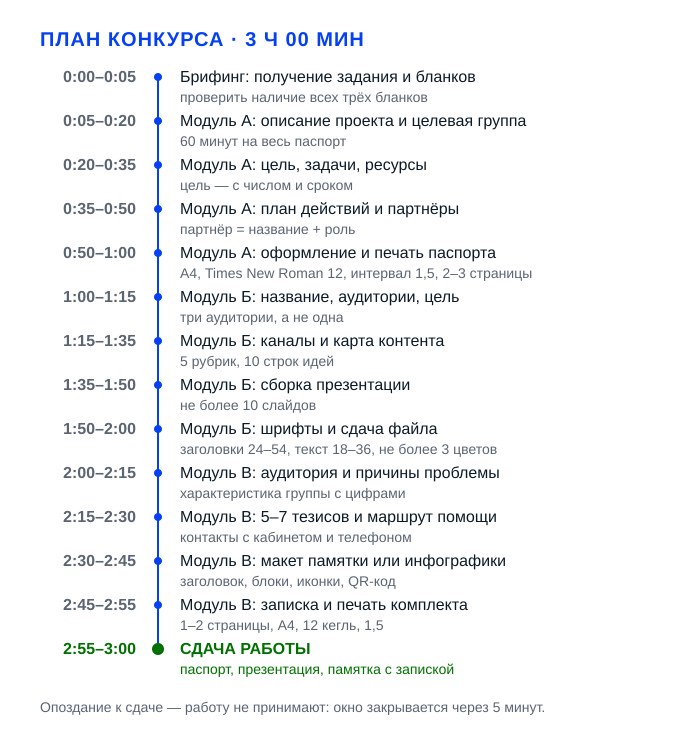
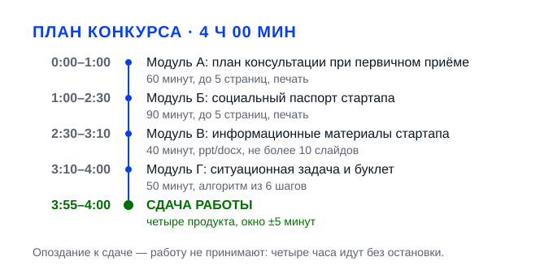

Социальная работа (Р)
Задания ниже — официальные файлы «Абилимпикс» (источник: abilympics-russia.ru), разложенные по категориям. Решения написаны по тексту задания, регламенту и критериям оценки; в них указано, что именно проверяет эксперт.
Школьник
14–16 лет, базовый уровень заданияВыдержка из официального конкурсного задания: страницы, относящиеся к категории «Школьник» (стр. 5–7 источника).
Пошаговое решение
Конкурсное задание категории «Школьники» — три модуля по 60 минут: паспорт проекта школьного добровольчества, информационное сопровождение этого проекта презентацией не более чем на 10 слайдах и визуальная памятка для сверстников с сопроводительной запиской. Общее время работы — 3 часа, модули идут подряд и сдаются по очереди, поэтому время, потраченное на первый документ, вычитается из третьего. Все три модуля опираются на один проект: если в паспорте не названы конкретная целевая группа и партнёры, то в презентации не о чем рассказывать, а памятка теряет адресата. Формальные требования проверяются буквально: паспорт и записка — А4, Times New Roman 12 кеглем с интервалом 1,5 и объёмом 2–3 и 1–2 страницы, презентация — не более 10 слайдов, шрифт заголовков 24–54 пункта, основного текста 18–36, не более трёх цветов и ни одной орфографической ошибки. Ниже задание разложено на три задачи, двенадцать действий и 47 шагов в том порядке, в котором их удобно выполнять.

Задача 1. Собрать паспорт проекта школьного добровольчестваМодуль А · 60 минут · паспорт проекта
Первый модуль — письменный паспорт проекта на 2–3 страницах: описание и значимость, целевая группа с её проблемами, цель и задачи, ресурсы, план действий, формы волонтёрской и профессиональной помощи, партнёры и ожидаемые результаты. Здесь выигрывается или теряется основа всей работы: два следующих модуля опираются на этот же проект, и если в паспорте нет конкретной группы и конкретных партнёров, информационное сопровождение и памятка повисают в воздухе. Поэтому первые двадцать минут уходят не на текст, а на решение: с кем работаем, что именно меняем и чьими руками.
Действие 1.1. Разобрать задание и выбрать рамку проекта
Шаг 1.1.1
Раскладываем на столе выданный бланк паспорта, текст задания и чистый лист для черновика. Читаем пункты 1–9 модуля А по порядку и против каждого ставим пометку, что там требуется: описание и значимость, целевая группа, цель и задачи, ресурсы, план действий, формы помощи, партнёры, результаты, сдача. Сразу сверяемся с требованием к сдаче — письменный план на 2–3 страницах формата А4, Times New Roman 12 кеглем, межстрочный интервал 1,5, в печатном виде. При таком формате на страницу уходит примерно 1800 знаков, то есть весь паспорт — это 3500–5500 знаков, и лишнего текста туда просто не влезет.
Девять пунктов задания — это не рекомендация, а перечень того, что эксперт ищет в документе: модуль А длится 60 минут и заканчивается сдачей паспорта, по которому потом идёт защита. Пропущенный пункт не «подразумевается» — его просто нет, и соответствующая часть оценки уходит. Заранее зная объём в знаках, вы не потратите полчаса на вступление и не останетесь без места для партнёров и результатов.
На черновике выписаны все девять пунктов, и напротив каждого уже стоит заготовка: цифра, название организации, дата или фамилия. Если напротив пункта пусто, это место, где вы будете импровизировать в последние десять минут, а импровизация в паспорте видна сразу.
Самая частая ошибка — начать с «красивого» вступления о том, как важна добровольческая деятельность, и занять им полторы страницы. К девятому пункту остаётся десять минут, партнёры и результаты пишутся одной строкой, и документ выглядит недоделанным.
Эксперт подходит в первые десять минут и смотрит, чем участник занят: черновик со структурой и пометками читается как план работы, чистый лист — как потерянное время.
Шаг 1.1.2
Выбираем целевую группу из перечня задания: пожилые люди, подростки с инвалидностью, семьи с детьми-инвалидами. Выбирать нужно не «самую добрую», а ту, о которой у вас есть факты: где она живёт, сколько в ней человек, с кем уже налажен контакт. Дальше сужаем формулировку до конкретной: не «пожилые люди», а «одинокие пожилые люди старше 70 лет из микрорайона школы, которые живут одни и не выходят дальше ближайшего магазина». Одну группу берём основной, вторую, если очень хочется, указываем как дополнительную одной строкой.
От целевой группы зависит всё остальное: задачи, партнёры, формы помощи и результаты. Пункт 2 модуля А требует не только назвать группу, но и описать её социально значимые проблемы, а расплывчатая формулировка не даёт ни одной проверяемой задачи. Кроме того, слишком широкая группа читается как непонимание масштаба: отряд из 10–12 школьников не может «помочь всем пенсионерам города», и эксперт это отметит.
Формулировка проходит простой тест: можно ли назвать число людей в группе и место, где вы с ними встречаетесь. Если ответ «примерно много» и «где-то в городе» — сужайте, пока не появятся цифра и адрес. Второй признак готовности: вы можете назвать человека или организацию, которая эту группу знает и подтвердит контакт.
Ошибка — взять группу, с которой нет контакта: тогда в плане появляются «выезды к ветеранам» без адреса и согласования, а на защите первый же вопрос «с кем вы это согласовали» ломает всю логику проекта. Вторая ошибка — указать три группы сразу, чтобы «показать охват»: ни одна из них не будет описана до конца.
Смотрит на формулировку группы в паспорте и на то, назван ли конкретный партнёр, который эту группу знает. Расплывчатость фиксирует сразу, а на защите задаёт вопрос «сколько человек в вашей группе и откуда цифра» — ответ показывает, работал участник с реальностью или с текстом.
Шаг 1.1.3
Придумываем рабочее название и пишем краткое описание в три-четыре предложения: кто, для кого, что делает и как часто. Название должно быть коротким и произносимым — «Отряд „Рядом“: помощь одиноким соседям», а не «Комплексная программа социальной поддержки лиц пожилого возраста». В описании сразу держим ритм работы: 12 волонтёров, два выхода в неделю по два часа, восемь подопечных, согласование с центром социального обслуживания. Эти же числа потом повторяются в плане действий и в результатах.
Пункт 1 модуля А требует краткого описания и обоснования социальной значимости, и описание — первое, что читает эксперт. Название и три предложения задают рамку: дальше все цифры должны с этой рамкой совпадать, иначе паспорт рассыпается на несвязанные куски. Конкретный ритм работы сразу показывает, что проект существует в расписании, а не переписан из интернета.
Прочитайте описание вслух: если из него понятно, кто и что делает в ближайший вторник, всё в порядке. Проверьте, что числа в описании и в плане действий совпадают — 12 волонтёров в начале и 30 в плане без объяснения роста выглядят как небрежность.
Ошибка — написать описание общими словами про развитие добровольчества и социализацию, оставив конкретику «на потом»: потом её не будет, а эксперт на защите спросит именно то, что вы делаете руками. Вторая ошибка — название из шести слов, которое невозможно выговорить и невозможно запомнить.
Читает первые три строки паспорта и по ним решает, вчитываться ли в остальное; название оценивает на защите, где просит произнести его вслух. Сбивчивое название из шести слов читается как придуманное в последнюю минуту.
Шаг 1.1.4
Обосновываем значимость цифрами, которые можно объяснить: сколько одиноких пожилых людей обслуживает местный центр социального обслуживания, сколько учеников готовы участвовать, сколько часов в месяц даёт отряд. Если точных данных нет, берём те, что можно проверить у партнёра или в открытых источниках, и честно помечаем «по данным центра». Не выдумываем статистику по республике: за неё спросят на защите, и ответить будет нечем.
Обоснование значимости отвечает на вопрос, почему этим надо заниматься здесь и сейчас. Числа превращают добрые намерения в аргумент: 40 одиноких подопечных на микрорайон и 12 волонтёров дают соотношение, из которого видно и масштаб, и предел возможностей отряда. Без цифр пункт 1 остаётся лозунгом, а лозунг не защищается.
К каждому числу в обосновании назван источник: «по данным комплексного центра», «по опросу 60 учеников 8–9 классов», «по списку совета ветеранов». Если источник назвать нельзя, число убираем или заменяем оценкой с пометкой «ориентировочно».
Типичная ошибка — вставить красивую статистику из интернета без привязки к своему району. Вопрос эксперта «откуда цифра» превращает сильный аргумент в слабое место всего паспорта, и дальше он проверяет остальные числа с удвоенным вниманием.
Проверяет, связано ли обоснование с целевой группой и есть ли у каждого числа источник; отдельно отмечает привязку к своему микрорайону, а не к республике в целом. Числа без источника пересчитывает как отсутствующие.
Действие 1.2. Описать целевую группу и её проблемы
Шаг 1.2.1
Описываем группу по пяти признакам: возраст и состав, где живёт, какие ограничения (здоровье, мобильность, доход, одиночество), что человек уже получает от государства и чего не хватает. Удобно сделать это таблицей на полстраницы: слева признак, справа факт. Для пожилых это, например, 68–85 лет, живут одни в пятиэтажках без лифта, у половины проблемы с передвижением, получают социальное обслуживание на дому два раза в неделю.
Пункт 2 модуля А требует не просто назвать группу, а описать её социально значимые проблемы. Характеристика по признакам показывает, что вы понимаете, с кем работаете, и из неё напрямую вырастают формы помощи: если человек не выходит из дома, «экскурсия в музей» отпадает, а «покупка продуктов и разговор на кухне» остаётся.
Проверьте таблицу вопросом: может ли по ней посторонний человек представить себе одного конкретного подопечного. Если из пяти строк не складывается образ и не видно ограничений, характеристика написана формально и её нужно переписать с фактами.
Ошибка — списать характеристику из учебника социальной работы: «лица пожилого возраста характеризуются снижением социальной активности». Это верно для всех и не описывает никого; эксперт отмечает такие места как отсутствие анализа.
Смотрит, есть ли в характеристике ограничения группы и совпадают ли они с выбранными формами помощи. Несовпадение фиксирует отдельно: если человек не выходит из дома, а в плане стоит экскурсия, характеристика написана для отчёта.
Шаг 1.2.2
Составляем список из пяти-семи проблем группы и ранжируем его по двум осям: насколько проблема острая для человека и насколько реально её снять силами школьного отряда. На черновике рисуем крест, раскладываем проблемы по четвертям и берём те, что попали в верхнюю правую: острые и решаемые. Остальные выписываем отдельным абзацем как «проблемы, которые требуют профессиональной помощи», — это честно и показывает границы проекта.
Ранжирование — это и есть та часть работы, за которую дают баллы по критерию анализа социальной проблемы: эксперт видит, умеет ли участник отличать то, что он может, от того, что ему только кажется посильным. Кроме того, ранжированный список сразу даёт материал для задач: каждая задача — это движение по одной из верхних проблем.
В паспорте должно быть видно, почему выбраны именно эти две-три проблемы: одна острая и решаемая, вторая важная, но требующая партнёра. Если объяснения нет и все проблемы перечислены подряд, ранжирование не сделано.
Ошибка — взять проблему, которая звучит благородно, но нерешаема: «одиночество» целиком школьный отряд не снимет, и в результатах появится нечто непроверяемое. Правильнее сузить до «отсутствие регулярного общения: человек разговаривает с кем-то раз в неделю».
Смотрит на обоснование выбора проблем и на границу между «делаем сами» и «делаем с партнёром». Просит назвать проблему, которую отряд снять не может, и по ответу видит, есть ли у участника чувство масштаба.
Шаг 1.2.3
Каждую выбранную проблему проверяем на три вещи: есть ли у отряда ресурс, есть ли согласие самого человека и безопасно ли это для школьников. Сразу отсекаем то, что нельзя: поднимать тяжести, давать лекарства, распоряжаться деньгами, мыть человека, выводить его на улицу без сопровождения родственника. То, что остаётся, — покупка продуктов по списку, уборка в пределах досягаемости, помощь с телефоном, чтение вслух, прогулка во дворе рядом с домом.
Границы возможностей — это не формальность, а защита и подопечного, и участника. В задании прямо сказано, что проект направлен на общественно значимую деятельность обучающихся, то есть речь о помощи, которую подросток действительно может оказать. Если в паспорте появляется «оказание медицинской помощи», это ошибка содержания, и она стоит дороже, чем пропущенный пункт оформления.
Проверьте каждую формулировку вопросом: смогу ли я объяснить своему подопечному и его родственнику, что именно я буду делать и чего не буду. Если ответ уклончивый, формулировку надо сузить до конкретного действия с конкретным предметом.
Ошибка — записать «помощь в быту» без расшифровки: под этой фразой может скрываться и покупка хлеба, и уборка квартиры, и то, что делать нельзя. На защите эксперт просит расшифровать, и неопределённость читается как непродуманность.
Смотрит на реалистичность форм помощи и на то, проговорены ли ограничения; в категории «Школьники» это отдельный критерий. Медицинскую или денежную помощь в паспорте отмечает как содержательную ошибку.
Шаг 1.2.4
Формулируем проблему одной фразой по схеме «у кого — что происходит — к чему приводит»: «у одиноких пожилых людей из микрорайона неделями не бывает разговора ни с кем, кроме продавца, и из-за этого теряется интерес к быту и запускается дом». Одну эту фразу ставим в начало раздела о группе, а подробности оставляем ниже. Дальше проверяем, что цель проекта отвечает именно на эту фразу, а не на соседнюю.
Одна точная формулировка связывает весь паспорт: проблема — цель — задачи — результаты. Если фраза размыта, задачи начинают жить своей жизнью, и эксперт на защите задаёт вопрос, на который нет ответа: «что именно вы собираетесь изменить». В категории «Школьники» умение сформулировать проблему своими словами ценится отдельно.
Проверьте фразу на трёх читателях: однокласснике, учителе и родителе. Все трое должны понять её с первого раза и без пояснений; если кто-то переспрашивает, в формулировке есть лишнее слово или два смысла сразу.
Ошибка — написать проблему через отсутствие («нет досуга», «нет общения») без указания, к чему это приводит. Тогда непонятно, какой результат считать успехом, и в пункте 8 появляются формулировки вроде «улучшение качества жизни».
Ищет связку «проблема — цель — результат» и на защите проверяет её прямым вопросом: что именно изменится у конкретного человека. Если ответ уходит в общие слова, связка не выстроена.
Действие 1.3. Сформулировать цель, задачи и ресурсы
Шаг 1.3.1
Пишем цель одним предложением, в котором есть три элемента: что изменится, у кого и к какому сроку. Например: «к маю 2027 года восемь одиноких пожилых людей из микрорайона школы получают регулярное общение не реже двух раз в неделю и помощь с покупками». Цель не должна описывать процесс («организовать отряд») — процесс это средство, а цель — изменение в жизни человека.
Пункт 3 модуля А требует цели и задач, и цель — главный проверочный вопрос всей защиты. Цель, сформулированная как «развитие добровольчества», не позволяет проверить результат и не даёт критерия успеха; цель с числом людей и сроком позволяет. Кроме того, из неё автоматически выводятся задачи, а из задач — план действий.
Цель проходит проверку на измеримость: названы группа, количество, срок и признак изменения. Если убрать из предложения срок или число, цель рассыпается — значит, они там нужны и должны быть названы точно.
Ошибка — поставить целью то, что и так произойдёт («привлечь волонтёров в школу»), или наоборот, замахнуться на неизмеримое («сформировать активную гражданскую позицию»). Второе невозможно проверить, и в результатах появится фраза, которую нельзя защитить.
Читает цель вслух и проверяет, есть ли в ней срок, группа и признак изменения; просит повторить своими словами. Цель без срока или без числа людей отмечает как декларацию, а не как цель.
Шаг 1.3.2
Разбиваем цель на три-четыре задачи, каждая из которых — отдельный шаг к ней: договориться с центром социального обслуживания и получить список подопечных; обучить 12 волонтёров правилам общения и безопасности; наладить график выходов два раза в неделю; собрать обратную связь от подопечных и партнёра. Задачи пишем глаголами совершенного вида — «согласовать», «обучить», «составить», — чтобы каждая заканчивалась результатом, а не тянулась бесконечно.
Задачи — это мост между целью и планом действий, и эксперт проверяет, что они не дублируют цель и не заменяют её. Если задача сформулирована как «проводить занятия», её нельзя закрыть, а значит, в плане появится бесконечная строка. Четыре задачи удобны тем, что каждая ложится в отдельный блок плана и в отдельный пункт ожидаемых результатов.
Проверьте: у каждой задачи есть результат, который можно предъявить, — согласованный список, проведённое обучение с подписями, утверждённый график, заполненные анкеты. Если результат нельзя показать пальцем, задача сформулирована как процесс.
Ошибка — написать пять-шесть задач, которые повторяют друг друга разными словами, чтобы раздел выглядел солиднее. Эксперт считает повторы и отмечает, что декомпозиция не сделана, а защита превращается в пересказ одной и той же мысли.
Смотрит на связку «цель — задачи» и на то, закрывается ли каждая задача конкретным результатом. Если задач больше пяти, проверяет, не дублируют ли они друг друга.
Шаг 1.3.3
Перечисляем ресурсы по четырём группам, которые требует пункт 4: кадровые, материальные, информационные и административные. Кадровые — 12 волонтёров, куратор от школы, психолог; материальные — помещение для сборов, принтер, телефон, перчатки и мешки для уборки; информационные — школьный сайт, группа в социальной сети, стенд; административные — согласие директора и поддержка классных руководителей. Напротив каждого ресурса пишем, чей он.
Ресурсы — это ответ на вопрос, за счёт чего проект вообще возможен, и самая частая причина, по которой красивый проект не запускается. Разделение по группам показывает эксперту, что участник понимает разницу между «у нас есть желание» и «у нас есть ключ от кабинета». Кроме того, из этого списка потом вырастает раздел о партнёрах: то, чего нет у школы, приходит от партнёра.
Проверьте список на честность: напротив каждого ресурса стоит либо «есть, у кого именно», либо «нет, нужен». Если напротив всего написано «есть», список явно приукрашен, и первый же вопрос о ключах и транспорте это покажет.
Ошибка — записать в ресурсы «энтузиазм волонтёров» и «поддержка администрации» без имени и должности. Такие строки не считаются ресурсом: они не проверяемы, не превращаются в действие и вызывают вопрос, с кем именно вы договорились.
Проверяет, разделены ли ресурсы по четырём видам и указано ли, чей каждый ресурс. Ресурсы без владельца отмечает отдельно, потому что из них потом вырастают невыполненные пункты плана.
Шаг 1.3.4
Отдельным абзацем честно пишем, чего не хватает: обычно это транспорт, расходные материалы, обучение волонтёров и согласие родителей. Для каждой нехватки указываем способ закрытия: транспорт — проездной от школы или сопровождение педагога, материалы — сбор макулатуры и помощь родительского комитета, обучение — занятие психолога, согласие — родительское собрание и письменные согласия. Это и есть переход к пункту 7 о партнёрах.
Раздел о недостающих ресурсах показывает, что участник думает о запуске, а не только о замысле. Именно здесь чаще всего проваливаются проекты: в паспорте всё есть, а на вопрос «на что вы купите перчатки» ответа нет. Кроме того, этот абзац напрямую готовит защиту — эксперт почти всегда спрашивает про самое слабое место.
Для каждой нехватки назван конкретный способ закрытия и тот, кто его закрывает: организация, сумма, дата. Если способ звучит как «найдём» или «попросим у родителей», это не ресурсный план, а надежда, и в паспорте она видна сразу.
Ошибка — умолчать о нехватке, чтобы проект выглядел готовым: на защите это вскрывается одним вопросом про перчатки или транспорт. Дальше участник защищается вместо того, чтобы рассказывать о проекте, и теряет время, отведённое на сильные стороны.
Смотрит именно на этот абзац: честный список нехваток читается как зрелость проекта, а его отсутствие — как неопытность. Отдельно проверяет, есть ли у каждой нехватки конкретный закрывающий.
Действие 1.4. План, партнёры, результаты и сдача паспорта
Шаг 1.4.1
Строим план действий таблицей: этап, срок, ответственный, результат этапа. Этапов достаточно четырёх: подготовительный (сентябрь — согласование и список подопечных), обучающий (октябрь — занятия с психологом и правила безопасности), основной (ноябрь — апрель, выходы два раза в неделю), итоговый (май — обратная связь, благодарности, отчёт). В колонке ответственного пишем роль, а не «волонтёры»: «куратор отряда», «староста группы», «педагог-психолог».
Пункт 5 модуля А требует плана проекта и порядка действий, и таблица — самый читаемый его формат. Сроки и ответственные превращают намерение в расписание: эксперт сразу видит, реалистичен ли график для школьников, которые учатся в две смены. Кроме того, план даёт материал для защиты — по нему рассказывают, что происходит в каждый месяц.
Проверьте таблицу на три вещи: у каждого этапа есть дата начала и конца, у каждого этапа есть результат, ни один месяц не пустой. Если между ноябрём и апрелем стоит одна строка «работа с подопечными», план выглядит как отписка.
Ошибка — расписать план на год вперёд по неделям и не оставить времени на согласования: в реальности первый выход сдвигается на месяц, и весь график едет. Правильнее давать крупные этапы с запасом в две недели.
Смотрит на реалистичность сроков и на наличие ответственных в каждой строке; пустые месяцы и график «каждую неделю» отмечает. Для школьников отдельно проверяет, учтены ли вторая смена и каникулы.
Шаг 1.4.2
Описываем совместные формы волонтёрской и профессиональной помощи, как требует пункт 6: что делают школьники и что в это время делает специалист. Волонтёрская часть — покупки по списку, помощь с телефоном, чтение вслух, прогулка во дворе, поздравления. Профессиональная — социальный работник центра составляет список и оценивает потребности, психолог учит волонтёров разговаривать и распознавать тревожные признаки, педагог отвечает за безопасность и график.
Разделение форм помощи — отдельный пункт задания, и он показывает главное: волонтёр не заменяет специалиста. В социальной работе это базовое правило, и его нарушение — самая серьёзная содержательная ошибка, которую может допустить школьник. Когда роли разделены, видно и уважение к профессии, и понимание своих границ.
Для каждой формы в таблице есть две колонки: «делает волонтёр» и «делает специалист», и ни одна строка не заполнена в обеих. Если в строке «оценка потребностей» или «консультация по льготам» стоит волонтёр, разделение не сделано.
Ошибка — отдать волонтёрам то, что требует квалификации: оценку состояния, консультирование по льготам, разговор о здоровье. Это не только снижает оценку, но и создаёт реальный риск для подопечного, поэтому фиксируется как грубая содержательная ошибка.
Смотрит на таблицу разделения ролей и на защите спрашивает, что именно делает специалист. Путаницу ролей фиксирует как содержательную ошибку, а не как недочёт оформления.
Шаг 1.4.3
Обозначаем ключевых партнёров и их роль, как требует пункт 7. Достаточно трёх-четырёх: комплексный центр социального обслуживания (даёт список подопечных и сопровождает), школа (помещение, куратор, согласия родителей), библиотека или дом культуры (площадка для встреч и мероприятий), совет ветеранов или местная организация инвалидов (доверие группы). Для каждого пишем, что он даёт и что получает взамен: отчёт, публикацию, благодарственное письмо.
Партнёры — это то, что отличает проект от доброго порыва: без центра социального обслуживания у отряда нет ни списка подопечных, ни права входить в квартиры. Пункт 7 оценивается по конкретности: название организации, роль, форма взаимодействия. Кроме того, партнёрская таблица напрямую переходит в модуль Б — именно партнёрам адресована часть информационных материалов.
Проверьте, что для каждого партнёра названо и то, что он даёт, и то, что получает. Если в таблице стоит только «помогает» или «оказывает содействие», это не партнёрство, а просьба, и эксперт отмечает такие строки отдельно.
Ошибка — перечислить партнёров «для солидности», без указания роли: «Министерство, администрация, общественные организации». Ни один из них не подтвердит взаимодействие, а на защите спросят, с кем именно вы договорились.
Смотрит на конкретность партнёров и на взаимность: что организация получает от проекта. На защите просит назвать человека, с которым договорились, — название организации без контакта считается заявкой, а не партнёрством.
Шаг 1.4.4
Описываем ожидаемые результаты в двух блоках: количественные и качественные. Количественные — 12 обученных волонтёров, 8 подопечных, 60 выходов за учебный год, 4 мероприятия, 3 публикации в школьных соцсетях. Качественные — у подопечных появляется регулярное общение, у волонтёров формируется навык заботы и ответственности, у школы — работающая практика, которую можно продолжить в следующем году. Затем приводим текст к требованиям сдачи: А4, Times New Roman 12, интервал 1,5, поля 2 см, нумерация страниц, 2–3 страницы.
Пункт 8 требует ожидаемых результатов, и именно они проверяются на защите: результат должен быть следствием задач, а не повторением цели. Количественные показывают объём, качественные — смысл, и вместе они закрывают вопрос «что изменилось». Оформление при этом не мелочь: требования к шрифту и интервалу прописаны в задании прямо, и их нарушение снимает баллы независимо от содержания.
Перед печатью проверьте четыре параметра в настройках страницы: формат А4, поля по 2 см, шрифт Times New Roman 12, интервал 1,5. Затем посчитайте страницы — их должно быть от двух до трёх; если вышло четыре, сокращайте вступление, а не результаты.
Ошибка — напечатать паспорт в последние три минуты и обнаружить, что текст ушёл на пять страниц или шрифт остался 11 кеглем. Переверстка в спешке почти всегда даёт разъехавшиеся таблицы, а печать занимает больше времени, чем кажется.
Принимает паспорт и проверяет оформление по трём признакам: кегль, интервал, число страниц. Несоответствие фиксирует до защиты, потому что переверстка после сдачи не принимается, а содержание оценивается по тому листу, который лежит на столе.
Задача 2. Разработать информационное сопровождение проектаМодуль Б · 60 минут · презентация до 10 слайдов
Второй модуль — план информационного сопровождения школьной волонтёрской команды, сданный презентацией в формате ppt или pptx не более чем на 10 слайдах. Нужно придумать название и направление, определить, для кого вы говорите, зачем, по каким каналам и каким контентом, и отдельно — как вовлечь в отряд новых людей. Требования к оформлению жёсткие и проверяются глазами: у каждого слайда заголовок, шрифт заголовков 24–54 пункта, основного текста 18–36 пунктов, не больше трёх основных цветов, деловой стиль, без орфографических ошибок. Практика показывает, что половина потерь в этом модуле — не из-за слабых идей, а из-за перегруженных слайдов и мелкого кегля, который на проекторе не читается.
Действие 2.1. Определить направление, название и аудиторию
Шаг 2.1.1
Берём проект из модуля А и придумываем ему имя, под которым он будет жить в информации: название отряда, короткий девиз из трёх-пяти слов и одну фразу-объяснение. Например, отряд «Рядом», девиз «Два часа в неделю меняют чью-то неделю», объяснение «школьники помогают одиноким соседям по микрорайону». Имя проверяем на три вещи: оно произносится вслух, оно не совпадает с названием известной организации и оно помещается в заголовок слайда одной строкой.
Пункт 1 модуля Б требует подобрать направление и название, и это первое, что увидит эксперт на титульном слайде. Название задаёт тон всему контенту: под «Отряд „Рядом“» пишутся короткие человеческие тексты, под «Центр развития добровольческих инициатив» — казённые отчёты, которые никто не читает. Кроме того, узнаваемое имя потом работает на вовлечение: новому человеку проще прийти туда, что он уже слышал.
Проверьте название на слух: произнесите его в коридоре и посмотрите, переспросят ли. Проверьте на глаз: наберите заголовком 40 кеглем — должно уместиться в одну строку без переноса и без уменьшения кегля.
Ошибка — взять аббревиатуру из четырёх букв, которую невозможно расшифровать с первого раза, или название из шести слов. Второе по частоте — название на английском, которое половина школьников прочитает по-своему и не запомнит.
Смотрит на титульный слайд: понятно ли с первого взгляда, кто вы и чем занимаетесь. Аббревиатуру или название на английском просит расшифровать — по ответу видит, думал ли участник о читателе.
Шаг 2.1.2
Определяем аудитории, и их будет три, а не одна: сверстники, которых мы хотим позвать в отряд; взрослые, от которых зависит разрешение и поддержка (родители, учителя, администрация); партнёры и благополучатели, которым важно знать, что происходит. Для каждой аудитории пишем одну строку: что она должна узнать и что сделать после нашего сообщения. Например: сверстник — «что это два часа в неделю и не страшно» и «написать в группу отряда».
Пункт 2 модуля Б требует определить целевую группу и социальную значимость, и в информационной работе целевая группа — это не благополучатель, а читатель. Если писать сразу всем, текст получается ни для кого: для родителей он легкомысленный, для сверстников — скучный. Разделение аудиторий сразу подсказывает и каналы, и тон.
Проверьте: для каждой аудитории назван свой канал и своё действие. Если у двух аудиторий один и тот же канал и один и тот же текст, разделение сделано формально, и в карте контента это станет видно сразу.
Ошибка — писать всё для «широкой общественности». В презентации тогда появляется слайд «Целевая группа: обучающиеся и их родители», и дальше невозможно объяснить, почему контент именно такой и почему он размещён там, где размещён.
Смотрит на слайд с аудиториями и проверяет, совпадает ли с ними карта контента. Если аудитории названы, а контент обращён к абстрактному читателю, отмечает разрыв.
Шаг 2.1.3
Формулируем цель информационного сопровождения отдельно от цели проекта: проект меняет жизнь подопечных, а информация делает так, чтобы об отряде знали, ему доверяли и к нему присоединялись. Цель пишем измеримо: «к концу учебного года о работе отряда знают не менее 300 учеников школы, 20 человек хотя бы раз участвовали в деле, 12 стали постоянными волонтёрами». Тут же одной фразой объясняем социальную значимость: зачем школе знать об этой работе.
Пункт 3 модуля Б требует цель и задачи, и разведение двух целей — проекта и информации — показывает зрелость мышления. Без этого разделения презентация превращается в рассказ о добрых делах, а не в план продвижения. Измеримая цель нужна ещё и потому, что в конце года отряд должен отчитываться перед партнёрами, и отчёт строится по этим цифрам.
Проверьте цель на проверяемость: названы числа, срок и способ подсчёта. Если написано «повысить информированность», спросите себя, как вы это измерите в мае, — и замените формулировку на число людей или показов.
Ошибка — поставить целью «рассказать о проекте»: рассказать можно один раз и считать цель достигнутой. В результате план сопровождения заканчивается на первом посте, а отчитываться перед партнёром нечем.
Смотрит, разведены ли цели проекта и информации, и есть ли в информационной цели цифра. Цель «рассказать о добровольчестве» отмечает как отсутствие планирования.
Шаг 2.1.4
Раскладываем цель на три-четыре задачи информационной работы: собрать и оформить материалы о каждом направлении помощи; наладить регулярный выпуск контента; выйти на новые аудитории через партнёров и школьные события; обеспечить обратную связь и ответы на вопросы. Каждую задачу сразу привязываем к каналу и к ответственному из отряда, чтобы в презентации не осталось задач без исполнителя.
Задачи — это то, по чему в модуле Б проверяют реалистичность: план, в котором нет ответственных, не выполняется никогда. Привязка к каналу нужна и для карты контента: каждая задача даёт одну-две рубрики. Эксперт на защите почти всегда спрашивает, кто будет всем этим заниматься, и готовая привязка снимает вопрос.
Проверьте: у каждой задачи есть канал, ответственный из отряда и срок первого шага. Если хотя бы у одной задачи нет ответственного, план неполон, и на защите это первый вопрос, на который придётся отвечать без подготовки.
Ошибка — записать задачи так, что их может выполнить только взрослый с бюджетом: «провести рекламную кампанию», «заказать полиграфию», «согласовать с управлением образования». Школьный отряд работает другими средствами, и это надо показать, иначе план нереалистичен.
Смотрит на задачи и на защите спрашивает про исполнителей. Задачи без ответственных отмечает, а формулировки вроде «организовать освещение» просит разложить на конкретные действия.
Действие 2.2. Выбрать каналы и режим публикаций
Шаг 2.2.1
Выбираем три-четыре канала, которые реально доступны школе, и обосновываем каждый одной строкой. Обычный набор: группа отряда в социальной сети, где сидят сверстники; школьный стенд у входа или на этаже, где бывают родители; школьный сайт или страница школы в соцсети для официальной информации; классные часы и родительские собрания для личного контакта. Больше четырёх каналов брать не стоит: на пятом кончаются силы и контент становится одинаковым везде.
Пункт 4 модуля Б требует предложить каналы распространения, и оценивается не количество, а обоснованность выбора. Канал должен совпадать с аудиторией из предыдущего действия: родители не читают группу класса в соцсети, а сверстники не смотрят на стенд у кабинета директора. Кроме того, ограничение числа каналов — признак реалистичного плана, а не бедности фантазии.
Для каждого канала проверьте три вещи: там действительно есть ваша аудитория, вы можете туда писать без разрешения третьих лиц, и вы понимаете, кто отвечает за публикацию. Если хотя бы один ответ отрицательный, канал убираем.
Ошибка — перечислить шесть каналов, включая телевидение и городскую газету, без единого контакта. В презентации это выглядит солидно, но на защите первый вопрос «как вы туда попадёте» оставляет участника без ответа.
Смотрит на соответствие каналов аудиториям и на то, есть ли у каждого канала владелец. Канал без ответственного и без доступа считает заявленным, но не работающим, и просит объяснить, как туда попадёт публикация.
Шаг 2.2.2
Расписываем режим публикаций: сколько раз в неделю, в какие дни, кто готовит, кто проверяет. Рабочая схема для школьного отряда — два поста в неделю в группе (вторник и пятница, по 20–30 минут на подготовку), одна смена информации на стенде раз в две недели, одно выступление на классном часе в месяц. Всё это сводим в таблицу «день — канал — тема — ответственный» на четыре недели вперёд.
Регулярность — главный признак живого канала, и именно её проверяет эксперт, глядя на календарь в презентации. Редкие яркие публикации не работают: подписчик должен знать, когда ждать следующую. Кроме того, расписание защищает самих волонтёров: когда известно, что во вторник выходит пост, его пишут заранее, а не в ночь перед сдачей.
Проверьте таблицу: в каждой из четырёх недель есть все запланированные публикации, у каждой стоит ответственный, и ни у кого не стоит больше двух задач подряд. Если один человек отвечает за всё, план держится на нём и рассыпется на первой контрольной.
Ошибка — написать «публикации два-три раза в неделю» без дней и ответственных. Такой план невозможно проверить, он почти всегда остаётся на бумаге, а через месяц канал замолкает — и по календарю в презентации это видно сразу.
Смотрит на календарь и на распределение нагрузки: узнаёт ли эксперт, кто и когда публикует. Если все задачи стоят на одном человеке, отмечает, что план держится на одном участнике.
Шаг 2.2.3
Прописываем правила безопасности в информации: фотографии подопечных публикуем только с письменного согласия, адреса и квартиры не указываем никогда, фамилии и диагнозы не называем, вместо фотографии лица можно снять руки, чайник или вид из окна. Отдельно фиксируем, кто проверяет текст перед публикацией: куратор отряда или педагог. Эти правила ставим отдельным блоком на слайде, а не прячем в приложение.
В социальной работе персональные данные — это не формальность, а профессиональная норма, и в задании информационное сопровождение прямо связано с рассказом о реальных людях. Ошибка с фотографией пожилого человека без согласия — это не потеря балла, а нарушение прав, и эксперт оценивает отношение участника к этому всерьёз. Кроме того, согласие защищает и самого волонтёра.
Проверьте: в правилах есть согласие на фото, запрет на адреса и фамилии, и назван человек, который проверяет текст. Пролистайте свои будущие посты по этим трём пунктам — если в посте есть квартира или фамилия, его нельзя публиковать.
Ошибка — выложить фотографию подопечного «он же не против» и указать в подписи подъезд. Даже при добрых намерениях это нарушение прав, и на защите такой слайд становится главным вопросом, а не мелкой деталью.
Смотрит на слайд о безопасности и проверяет, понимает ли участник, что можно публиковать. Вопрос про согласие на фото задаёт почти всегда, и отрицание проблемы читается хуже, чем признание пробела.
Шаг 2.2.4
Оформляем сами каналы: обложка с названием и девизом, короткое описание отряда в три строки, закреплённый пост «как к нам попасть» с адресом, временем сборов и именем контактного человека. Для стенда делаем шаблон А3: заголовок, три блока, QR-код на группу. Всё это фотографируем и вставляем в презентацию как доказательство, что канал существует, а не запланирован.
Оформленный канал отличается от пустой страницы тем, что новый человек за тридцать секунд понимает, куда он попал и что делать дальше. Закреплённый пост — это точка входа, и её отсутствие чаще всего и мешает вовлечению. Для эксперта скриншоты работающих каналов — сильное доказательство, что план информационного сопровождения уже начал выполняться.
Проверьте канал глазами нового человека: на первом экране видно название, что вы делаете, как присоединиться и когда ближайшая встреча. Если для этого нужно листать вниз, шапку надо переделать до сдачи.
Ошибка — сделать красивую обложку и не заполнить описание, оставив пустые поля шаблона. Второе — закрепить пост с прошлогодней датой: он читается как заброшенный канал, и новичок уходит, так и не написав.
Смотрит на скриншоты каналов и проверяет, есть ли закреплённый пост, описание и контакт. Отсутствие точки входа считает главной помехой вовлечению, даже если обложка сделана хорошо.
Действие 2.3. Собрать карту контента
Шаг 2.3.1
Придумываем пять рубрик, которые закрывают разные вопросы читателя, и даём каждой короткое имя: «Кто мы» (знакомство с отрядом и волонтёрами), «История рядом» (один подопечный, одна история, без личных данных), «Что было» (короткий отчёт о выходе с фотографией), «Как помочь» (инструкция: что взять, куда прийти, сколько времени), «Спасибо» (благодарность партнёру или волонтёру). Пять рубрик — это ровно то количество, при котором контент не повторяется за месяц.
Пункт 5 модуля Б требует карту контента, то есть основные идеи, и рубрики — её каркас. Без рубрик получается, что каждый пост придумывается с нуля, и через две недели канал замолкает. Кроме того, разные рубрики решают разные задачи: «Кто мы» и «Как помочь» приводят людей, «Что было» и «Спасибо» удерживают тех, кто уже пришёл.
Проверьте: на каждую рубрику можно назвать три конкретные темы на ближайший месяц. Если по рубрике «История рядом» вы не можете вспомнить ни одной истории, рубрика не рабочая, и её надо заменить, пока не поздно.
Ошибка — сделать пять рубрик, которые на самом деле одна: «новости», «наши дела», «мероприятия», «отчёты», «анонсы». Читателю они кажутся одинаковыми, лента превращается в однообразный поток, и подписчики перестают открывать посты.
Смотрит на слайд с рубриками и проверяет, различимы ли они между собой. Пять названий, означающих одно и то же, отмечает как отсутствие карты контента.
Шаг 2.3.2
Сводим карту контента в таблицу из пяти столбцов: рубрика, идея конкретного материала, формат (текст с фото, короткое видео, карточка, плакат), канал и периодичность. Заполняем не меньше десяти строк, то есть по два материала на рубрику. Таблица целиком помещается на один слайд, если формулировать идеи в одну строку: «Как помочь — что взять с собой на первый выход — карточка — группа — раз в месяц».
Карта контента — центральный слайд модуля Б: по ней видно, что участник планирует информацию, а не импровизирует. Пункт 5 требует именно основные идеи, и таблица с идеями конкретных материалов отвечает на это точнее, чем список рубрик. Кроме того, таблица показывает, что контент распределён по каналам, а не свален в одну группу.
Проверьте таблицу по столбцу «формат»: там должны быть разные форматы, а не только «текст». И по столбцу «канал»: если все десять строк смотрят в одну группу, остальные каналы существуют только на бумаге.
Ошибка — заполнить карту общими формулировками: «пост о доброте», «рассказ о проекте», «информация о работе». Такие строки невозможно превратить в публикацию без нового придумывания, и карта перестаёт быть рабочим документом.
Смотрит на карту контента как на главный слайд модуля и проверяет конкретность идей. Строки, из которых нельзя сразу написать пост, считает незаполненными.
Шаг 2.3.3
Пишем три готовых текста-заготовки по 500–700 знаков, чтобы было видно, как вы говорите: пост-знакомство отряда, пост-отчёт о конкретном выходе с одной деталью и пост-приглашение с точным адресом и временем. В каждом тексте первая строка — крючок с конкретной деталью, а не «Всем привет»; в конце — одно действие: прийти, написать, принести. Тексты вставляем в презентацию или в заметки к слайду, чтобы эксперт мог их прочитать.
Три живых текста доказывают то, чего не докажет ни одна схема: что отряд умеет говорить с читателем. В задании информационное сопровождение описано как контент, который «привлекает внимание, объясняет, что вы делаете, почему это важно, как присоединиться» — именно эти три функции и проверяются тремя заготовками. Заодно снимается риск, что на защите участник не сможет ответить, о чём будет первый пост.
Прочитайте каждый текст и найдите в нём: конкретную деталь в первой строке, одно понятное действие в конце, отсутствие общих слов вроде «важно» и «нужно». Если в тексте три разных призыва, оставьте один.
Ошибка — написать три текста одинаковой структуры с одинаковым началом «Друзья!». Второе — перегрузить текст хештегами и эмодзи, из-за которых на проекторе не читается смысл, а первая строка теряется среди значков.
Читает заготовки и оценивает, звучит ли это как живая речь школьника, а не как пресс-релиз. Отсутствие конкретной детали в первой строке отмечает как слабое место контента.
Шаг 2.3.4
Планируем визуальный ряд: три-пять своих фотографий (сборы отряда, руки с пакетами, чай на кухне, стенд) и правило съёмки — горизонтально, при дневном свете, без лиц подопечных без согласия, без беспорядка в кадре. Для каждого поста в карте указываем, нужна ли фотография и какая. Отдельно решаем, где хранятся исходники: общая папка отряда, а не чей-то телефон.
Информация без визуального ряда в школьной ленте не читается, а случайная фотография портит впечатление сильнее, чем её отсутствие. Правило про лица и согласие продолжает линию безопасности из предыдущего действия. Кроме того, общая папка с исходниками — это то, что позволяет каналу жить, когда ответственный за контент заболел или ушёл из отряда.
Проверьте набор: есть хотя бы одна фотография, где видно действие, а не группа людей, стоящих лицом к камере. И есть ли в папке запас снимков на месяц вперёд — иначе при следующем посте снимать будет нечего.
Ошибка — публиковать снимки с телефона против света, где не видно ни лиц, ни деталей, или снимать беспорядок в кадре. Вторая — держать все фото в личном телефоне одного человека: вместе с ним из отряда уходят и материалы.
Смотрит на слайды с фотографиями и на защите спрашивает, чьи это снимки и есть ли согласие. Случайные кадры без действия в кадре отмечает как отсутствие визуального плана.
Действие 2.4. Вовлечь сообщество и собрать презентацию
Шаг 2.4.1
Придумываем механику вовлечения, а не просто призыв: пробное дело на два часа без обязательств, «приведи друга» с общим чаепитием после выхода, день открытых дверей отряда на большой перемене, благодарственные грамоты и упоминание в постах для тех, кто уже ходит. Каждую механику привязываем к сроку: пробное дело — раз в месяц, день открытых дверей — в начале четверти, награждение — в конце полугодия.
Пункт 6 модуля Б требует план по вовлечению сообщества и привлечению новых волонтёров, и это самый содержательный пункт модуля. Призыв «приходите к нам» не работает, потому что требует от человека решимости; пробное дело снижает порог до одного вечера. Кроме того, механики показывают, что отряд думает о людях, а не только о показателях.
Проверьте: у каждой механики есть дата, ответственный и понятный первый шаг для новичка. И проверьте на себе: захотели бы вы прийти на это, если бы ничего не знали об отряде и увидели объявление в коридоре.
Ошибка — ограничиться лозунгом «вступайте в наши ряды» и хештегом. Второе — обещать грамоты и поездки, которых отряд не может обеспечить: первое же разочарование закрывает канал для всей параллели, и второй раз никто не придёт.
Смотрит на слайд вовлечения и на защите спрашивает, сколько человек пришло после первой акции. Механика без даты и ответственного считается призывом, а не планом.
Шаг 2.4.2
Собираем презентацию по жёсткой структуре из десяти слайдов: титул с названием и автором, проблема и её значимость, целевая аудитория, цель и задачи, каналы, карта контента, план вовлечения, календарь на месяц, ожидаемые результаты, призыв с контактом. Больше десяти слайдов делать нельзя, поэтому каждый пункт задания — ровно один слайд, и ничего не добавляем «для красоты».
Пункт 7 модуля Б разрешает не более 10 слайдов, и это ограничение работает на вас: оно заставляет отбирать главное. Структура, повторяющая пункты задания, удобна ещё и тем, что эксперт проверяет презентацию по своему списку и находит всё на ожидаемых местах. Лишние слайды при этом не «добавляют содержания», а размывают его.
Пересчитайте слайды и сверьте с пунктами 1–6 задания: каждому пункту соответствует один слайд, плюс титул, результаты и призыв. Если какой-то пункт размазан на два слайда, а другого нет — структура поехала.
Ошибка — сделать пятнадцать слайдов, потому что «материала много». При лимите в десять это прямое нарушение требования, и оно фиксируется независимо от качества содержания, а лишние слайды всё равно никто не прочитает.
Считает слайды и проверяет, что каждый пункт задания представлен. Презентацию из пятнадцати слайдов отмечает как нарушение требования, даже если идеи сильные.
Шаг 2.4.3
Оформляем по требованиям задания: не больше трёх основных цветов (например, синий, белый и тёмно-серый), заголовки 24–54 пункта, основной текст 18–36 пунктов, каждый слайд с заголовком, деловой стиль без анимации и забавных картинок. Проверяем на одном слайде плотность: не больше шести строк текста и не больше семи слов в строке. Таблицы и карту контента оставляем только там, где без них не обойтись.
Требования к шрифту и цвету прописаны в задании цифрами, и их проверяют буквально — линейкой по проектору. Мелкий кегль на защите читается как неуважение к слушателю, а четыре цвета превращают деловую презентацию в школьную стенгазету. Крупный текст ещё и помогает самому участнику: по такому слайду легко рассказывать, не читая с листа.
Проверьте каждый слайд тремя вопросами: заголовок есть и он не «Слайд 5»; весь текст читается с расстояния двух метров; цветов не больше трёх. Быстрый способ — отойти от экрана на три шага и посмотреть, что видно.
Ошибка — уменьшить кегль до 14, чтобы влезла вся таблица: это самое частое нарушение в модуле Б, и оно снимает баллы сразу, даже если таблица правильная и содержание точное. Второе — четыре цвета и анимация «чтобы смотрелось».
Смотрит на кегль и количество цветов, проверяет наличие заголовка на каждом слайде. Мелкий текст и пёстрое оформление фиксирует как нарушение требований задания.
Шаг 2.4.4
Проверяем и сдаём файл: прогоняем текст через проверку орфографии, читаем заголовки вслух, смотрим, что все слайды открываются и шрифты не подменились. Сохраняем в pptx с понятным именем — «фамилия_отряд_рядом.pptx», копируем на флешку и дополнительно отправляем себе на почту, если есть сеть. Перед сдачей открываем файл с флешки на другом компьютере: только так видно, что презентация не развалилась.
Требования к презентации включают отсутствие орфографических ошибок, и это отдельный пункт проверки, который легко закрыть за три минуты. Открытие с флешки на чужой машине страхует от самой обидной потери: файл есть, но не читается или съехал. Имя файла — мелочь, которая экономит эксперту время и работает в вашу пользу.
Файл открывается, все десять слайдов на месте, шрифты те же, ошибок нет. Проверьте последний слайд: на нём есть контакт, по которому можно присоединиться к отряду, и он читается с проектора без увеличения.
Ошибка — сохранить в формате, который не открывается на компьютере эксперта, или отправить файл по почте в последнюю минуту, когда сети нет. Вторая — оставить в презентации заметки для себя и чужие фамилии.
Открывает файл при сдаче и проверяет, что он читается; отдельно смотрит имя файла и титульный слайд. Файл, который не открылся, считается несданной работой, поэтому проверка с флешки обязательна.
Задача 3. Сделать памятку для сверстников и записку к нейМодуль В · 60 минут · памятка и записка 1–2 страницы
Третий модуль — визуальная памятка или простая инфографика для социального просвещения сверстников и сопроводительная записка на 1–2 страницах, где обоснованы формат, содержание и способ распространения. Работа держится на трёх опорах: точная характеристика аудитории, пять-семь коротких тезисов вместо длинного текста и понятный маршрут — к кому идти за помощью. Записка печатается на А4, Times New Roman 12 кеглем, с интервалом 1,5, и сдаётся вместе с памяткой, потому что без обоснования сама картинка не читается как социальный проект.
Действие 3.1. Определить аудиторию и разобрать причины проблемы
Шаг 3.1.1
Берём предложенную тему и сразу сужаем её до конкретной ситуации, в которой человек принимает решение. Если тема про травлю, то памятка не «о буллинге вообще», а «что делать, если травит одноклассник и ты боишься идти в школу». Если тема про отношение к сверстникам с инвалидностью — «что сказать, когда не знаешь, как помочь». Формулировку темы пишем вверху черновика и больше не меняем: от неё зависят все тезисы.
Пункт 1 модуля В требует определить целевую группу в рамках предложенной темы и дать ей характеристику. Сужение нужно потому, что памятка формата А4 физически вмещает пять-семь тезисов, и расплывчатая тема не даёт их выбрать. Кроме того, узкая ситуация узнаётся: сверстник читает и понимает, что речь про его случай.
Проверьте формулировку тестом на узнавание: может ли одноклассник, прочитав только заголовок, сказать «это про меня» или «это про моего друга». Если заголовок звучит как тема классного часа, сужайте до конкретной ситуации.
Ошибка — взять тему целиком, чтобы «охватить проблему»: в памятке появляется десять тезисов мелким шрифтом, её не читают до конца, и половина работы пропадает впустую, хотя формально тема раскрыта полностью.
Смотрит на заголовок памятки и на то, совпадает ли он с темой, заявленной в записке. Расхождение между ними отмечает как несогласованность комплекта, а не как мелочь оформления.
Шаг 3.1.2
Характеризуем группу точно: класс или параллель, возраст, сколько человек, что они уже знают по теме и чего не знают, где проводят время и что читают. Например: ученики 6–7 классов, 11–13 лет, около 120 человек, тему обсуждали на классном часе год назад, читают короткие посты в социальной сети и почти не смотрят на стенд у кабинета. Эти детали потом прямо определят формат и кегль.
Пункт 1 модуля В требует характеристики группы, и она нужна не для отчёта: от неё зависит каждое решение — кегль, длина фраз, число блоков, канал распространения. Если написано «подростки 11–17 лет», это две разные аудитории с разным языком, и памятка получится ни для кого. Конкретика здесь окупается в каждом следующем действии.
Проверьте: в характеристике есть возраст, число людей, уровень знаний по теме и привычный канал информации. Если хотя бы одного элемента нет, формат и кегль вы будете выбирать наугад и на защите не объясните выбор.
Ошибка — описать группу словами из учебника: «подростки находятся в сложном возрасте и подвержены влиянию группы». Такая характеристика не подсказывает ни одного решения, а в записке читается как заполнение места.
Смотрит на характеристику и на защите спрашивает, почему выбран именно такой формат. Ответ должен опираться на возраст, число людей и привычный канал, а не на общие соображения.
Шаг 3.1.3
Разбираем причины проблемы в среде школьников, и их нужно назвать три-четыре, каждая с объяснением. Обычно это страх оказаться следующим и потерять место в группе; привычка считать молчание нейтралитетом; отсутствие готовой фразы, которой можно остановить обидчика; неверие, что взрослые вмешаются и не сделают хуже. Причины записываем своими словами, а не терминами, и против каждой помечаем, что из неё следует для памятки.
Пункт 2 модуля В требует определить возможные причины социальной проблемы, и это аналитическая часть работы, за которую дают содержательные баллы. Причины нужны практически: если главная причина — отсутствие готовой фразы, памятка должна дать три фразы дословно, а не рассуждать о толерантности. Так содержание памятки перестаёт быть набором общих правил.
Проверьте связку: напротив каждой причины в черновике стоит хотя бы один тезис или блок памятки, который её снимает. Если причина есть, а тезиса нет, значит, вы описали проблему, но не работаете с ней.
Ошибка — свести все причины к одной: «дети жестокие» или «сейчас так везде». Такое объяснение не даёт ничего для памятки, звучит как оценка, а не как анализ, и оставляет всё её содержание без всякой опоры.
Смотрит на связку причин и содержания памятки; разрыв между ними отмечает. Если причины названы, а тезисы их не снимают, работа считается описательной.
Шаг 3.1.4
Проверяем тему на соответствие возрасту и школьному контексту: не пугает ли она, не обещает ли того, чего школа дать не может, нет ли в ней советов, которые опасны. Например, совет «дай сдачи» в памятке о травле — прямая ошибка, потому что переносит ответственность на жертву. Спорные тезисы вычёркиваем сразу и оставляем только то, что может выполнить школьник своими силами.
Памятка идёт сверстникам, и любая ошибка в ней тиражируется: она висит на стенде месяцами и расходится по чатам класса. Пункт 6 модуля В требует преобразовать информацию в визуальный формат, но преобразовывать можно только проверенное содержание. Кроме того, безопасность тезисов — часть профессиональной позиции в социальной работе.
Прочитайте каждый будущий тезис и задайте вопрос: что произойдёт, если человек сделает ровно так. Если последствие может быть опасным, обидным для кого-то или подставит самого подростка, тезис надо переписать или убрать.
Ошибка — включить в памятку советы про физический отпор, публичное выяснение отношений или обращение в полицию как первый шаг. Первое опасно для того, кого травят, третье не по адресу для школьной ситуации и отпугивает.
Смотрит на содержание памятки именно с точки зрения безопасности и корректности советов. Совет, переносящий ответственность на того, кого травят, отмечает как содержательную ошибку.
Действие 3.2. Сформулировать тезисы и маршрут помощи
Шаг 3.2.1
Пишем пять-семь тезисов, как требует задание, и каждый — не длиннее двенадцати слов, в повелительном или утвердительном наклонении, без терминов. Примеры в тему травли: «Скажи „стоп“ один раз, громко и без улыбки», «Не снимай происходящее на телефон», «Расскажи взрослому, которому доверяешь, в тот же день», «Поддержи того, кого травят: сядь рядом», «Не отвечай агрессией — это даёт повод продолжить». Тезисы нумеруем: на памятке номер помогает ссылаться на правило.
Пункт 3 модуля В задаёт именно пять-семь тезисов или правил, и это ограничение — суть жанра: памятку читают тридцать секунд, и в ней должно быть столько, сколько можно прочитать за это время. Короткая фраза запоминается и повторяется, длинный абзац — нет. Нумерация ещё и создаёт структуру для макета: номера становятся блоками инфографики.
Прочитайте тезисы подряд: каждый должен быть понятен без соседей и выполним сегодня же. Если тезис требует денег, разрешения взрослых или специальных навыков, он не для этой памятки, а для записки и разговора.
Ошибка — написать тезисы-лозунги: «Будьте добрее друг к другу», «Травля — это плохо». Они верны, но не подсказывают ни одного действия, а памятка нужна именно для действия в конкретный момент времени.
Считает тезисы и проверяет, есть ли в каждом глагол действия. Пять-семь лозунгов без действия отмечает как невыполненный пункт 3 задания, даже если формулировки красивые.
Шаг 3.2.2
Проверяем тезисы на выполнимость и на адресность: против каждого ставим, кто именно может это сделать — тот, кого травят, свидетель или весь класс. Тезис «скажи „стоп“» адресован тому, кого травят, «сядь рядом» — свидетелю, «не молчите» — классу. Если у тезиса нет адресата, он ни к кому не обращён и работать не будет. Тезисы для свидетелей ставим первыми: их в классе большинство.
Разделение по адресатам — это то, что отличает продуманную памятку от списка благих пожеланий. В социальном просвещении работает правило: человек должен увидеть в тексте свою роль, иначе он решит, что это не про него. Кроме того, такая проверка выявляет тезисы, которые на самом деле обращены ко взрослым, — их место в записке, а не на памятке.
Проверьте таблицу: у каждого тезиса есть адресат и ни один тезис не адресован сразу всем. Если тезис обращён ко всем, он не сработает ни для кого, потому что человек не увидит в нём своей роли и пройдёт мимо.
Ошибка — сделать всю памятку для того, кого травят: тогда свидетели, которых в классе большинство, не находят в ней своего действия и продолжают молчать, хотя именно от них зависит обстановка в классе.
Смотрит на памятку глазами свидетеля: понятно ли ему, что делать. Если все тезисы адресованы пострадавшему, отмечает, что аудитория выбрана неверно, и снижает оценку.
Шаг 3.2.3
Указываем, к кому можно обратиться за помощью, и это должен быть конкретный маршрут с именами и порядком: классный руководитель, педагог-психолог школы, заместитель директора по воспитательной работе, школьная служба примирения, родители, а если в школе не помогли — телефон доверия для детей и подростков 8-800-2000-122, звонок бесплатный и анонимный. Каждый пункт пишем так, как человек будет его искать: где кабинет, как зовут, в какое время там бывают.
Пункт 4 модуля В прямо требует указать, к кому можно обратиться, и это самый практичный блок памятки. Общий совет «обратитесь к взрослым» не работает: подросток не идёт к абстрактному взрослому, он идёт к конкретному человеку в конкретный кабинет. Номер телефона доверия нужен как страховка на случай, когда в школе не помогли.
Проверьте маршрут по шагам: первый, второй, третий. И проверьте каждый пункт на реальность — кабинет существует, психолог работает в эти дни, номер телефона набран правильно по цифрам, звонок с мобильного бесплатный.
Ошибка — написать «обратитесь в социальные службы» без названия и телефона. Второе — указать только родителей: для части подростков это как раз тот шаг, который невозможен, и памятка остаётся без работающего маршрута.
Смотрит на блок с контактами и проверяет, можно ли по нему реально дойти до помощи. Общие слова без кабинета и номера считает незаполненным пунктом 4.
Шаг 3.2.4
Добавляем блок «чего не делать» — он часто важнее советов: не отвечать агрессией, не снимать происходящее на видео, не пересылать чужие сообщения, не выяснять отношения при всех, не обещать молчать, если человек просит помощи. Формулируем коротко, по одной строке, и ставим этот блок отдельным цветом, чтобы он не сливался с основными правилами. Три-четыре запрета достаточно.
Ограничения работают как страховка: в момент стресса человек вспоминает именно запреты, потому что они короче и ярче правил. Для социального просвещения это ещё и защита от эскалации: половина школьных конфликтов разрастается из-за видео и публичных разбирательств. В записке этот блок обосновывается отдельной строкой.
Проверьте: каждый запрет объясняется одной причиной, понятной без пояснений. Если причина не помещается в одну строку, значит, запрет сформулирован слишком сложно и в нужный момент не вспомнится человеку.
Ошибка — превратить блок запретов в нотацию из восьми пунктов, где смешаны «не груби» и «не пересылай видео». Нотацию не читают, а конкретные запреты, которые действительно важны, теряются среди общих слов.
Смотрит, есть ли блок ограничений и не противоречит ли он основным тезисам. Противоречие, например «скажи взрослому» рядом с «не жалуйся», отмечает сразу и просит объяснить.
Действие 3.3. Собрать макет памятки или инфографики
Шаг 3.3.1
Выбираем формат и обосновываем его: вертикальный лист А4 на три-четыре блока, карточка для печати в размер 10×15 см или серия из четырёх квадратов для публикации в соцсетях. Для стенда берём А4 вертикально, для чата класса — квадратные карточки, которые читаются с телефона. Формат записываем в записке одной фразой с объяснением, почему именно он: где памятку будут читать и с какого расстояния.
Пункт 6 модуля В требует преобразовать текст в визуальный формат, и формат — первое решение, которое определяет всё остальное: число блоков, кегль, длину строк. Обоснование формата — отдельный пункт записки, и он показывает, что участник думал о читателе, а не просто нарисовал картинку. Кроме того, один и тот же текст в А4 и в квадратной карточке компонуется по-разному.
Проверьте выбор формата двумя вопросами: где человек будет это читать и сколько у него секунд. Если ответ «на стенде, тридцать секунд», блоков должно быть не больше четырёх, кегль не меньше 14, а строки — короткие.
Ошибка — сделать плотный лист А4 с текстом 10 кеглем «чтобы всё поместилось». На стенде такой лист не читают вообще: он выглядит как объявление и не привлекает взгляда, хотя содержание может быть верным.
Смотрит на памятку с расстояния и оценивает, читается ли она как визуальный объект, а не как страница текста. Формат, не соответствующий месту размещения, отмечает отдельно.
Шаг 3.3.2
Строим структуру: заголовок в одну строку (сама ситуация, а не тема), под ним — короткий подзаголовок с обещанием («пять шагов, которые можно сделать сегодня»), затем три-четыре блока с номерами, блок контактов и блок «чего не делать». Каждый блок — не больше пяти строк, между блоками воздух. Порядок блоков повторяет порядок действий: сначала что сделать в момент, потом кому сказать, потом куда идти.
Структура — это то, что делает памятку инфографикой, а не текстом в рамках. Пункт 6 требует использовать иконки, схемы и короткие списки, и всё это работает только при ясной иерархии: читатель должен за три секунды понять, где заголовок, где шаги, где контакты. Логика блоков по порядку действий помогает человеку в стрессе: он читает сверху вниз и делает.
Проверьте макет, закрыв и снова открыв глаза: первое, что видно, — заголовок; второе — номера шагов; третье — контакты, выделенные цветом. Если взгляд сначала падает на декор, иерархия не работает совсем.
Ошибка — расположить блоки в произвольном порядке «для красоты» и потерять контакты в нижнем углу мелким шрифтом. Второе — сделать заголовок темой («Профилактика буллинга»), а не ситуацией, в которой человек себя узнает.
Смотрит на иерархию и на то, находит ли взгляд контакты без поиска. Если контакты спрятаны, считает, что памятка не выполняет функцию маршрута помощи.
Шаг 3.3.3
Подбираем типографику и цвет: один шрифт без засечек для заголовков и один для текста (или один на всё), заголовок 36–48 пунктов, подзаголовок 20–24, текст 14–16, контакты 16–18 полужирным. Цветов не больше трёх: основной тёмный для текста, один акцентный для номеров и контактов, белый фон. Контраст текста и фона проверяем на телефоне: сфотографируйте лист и посмотрите на экране.
Требования к читаемости в этом модуле не прописаны так жёстко, как в презентации, но логика та же: памятку читают на ходу и с расстояния. Три цвета и два кегля — это предел, за которым начинается пёстрота, а пёстрый лист не воспринимается как инструкция. Проверка по фотографии важна потому, что половина сверстников увидит памятку именно на экране.
Проверьте четыре параметра: заголовок читается с трёх метров, текст — с полутора, акцентный цвет использован не больше чем в двух местах, на фотографии с телефона всё остаётся различимым и не темнеет.
Ошибка — использовать четыре-пять цветов и три шрифта, чтобы «было ярко»: лист превращается в стенгазету и перестаёт читаться как инструкция. Второе — светло-серый текст на белом фоне, который на экране исчезает полностью.
Смотрит на контраст и на количество цветов, а также фотографирует памятку, чтобы проверить читаемость на экране. Мелкий текст и низкий контраст отмечает как нарушение читаемости.
Шаг 3.3.4
Добавляем иконки и QR-код: простые пиктограммы вместо слов там, где это возможно (телефон, человек, шаг), стрелки или нумерацию для последовательности, QR-код на группу отряда или на страницу с полной инструкцией. Иконки берём из одного набора, чтобы они были одного стиля и толщины линии. После сборки распечатываем черновик на обычном листе и смотрим на него вживую, а не только на экране.
Иконки и QR-код — это то, что переводит памятку из текста в инфографику и одновременно расширяет её: за QR-кодом остаётся подробная инструкция, которую невозможно уместить на листе. Единый набор иконок важен потому, что смешанные стили читаются как небрежность, даже если человек не понимает почему. Печать черновика выявляет то, чего не видно на мониторе: слишком светлые линии, обрезанные поля, мелкие подписи.
Проверьте распечатку целиком: QR-код считывается телефоном с расстояния 20–30 см, иконки различимы без увеличения, ни один элемент не обрезан по краю, а поля остались не меньше сантиметра со всех четырёх сторон.
Ошибка — поставить QR-код, который ведёт на закрытую группу или на битую ссылку: человек сканирует и упирается в стену, второй раз он этого делать не будет. Второе — иконки из разных наборов, где телефон нарисован в трёх стилях.
Сканирует QR-код и проверяет, куда он ведёт; смотрит на целостность макета и на поля. Неработающий код считает ошибкой, потому что он обещает продолжение, которого нет.
Действие 3.4. Написать записку, обосновать распространение и сдать
Шаг 3.4.1
Пишем сопроводительную записку по пунктам 1–5 задания: характеристика группы, причины проблемы, сами тезисы, маршрут помощи, способы распространения. Объём — 1–2 страницы, А4, Times New Roman 12, интервал 1,5, то есть примерно 1800–3600 знаков. Пишем связным текстом по абзацу на пункт, с подзаголовками, чтобы эксперт видел структуру и мог сверить её с заданием.
Записка — это обоснование, без которого памятка не считается социальным проектом: картинка может быть красивой, но оценивается решение, стоящее за ней. Требования к оформлению заданы в задании прямо, и объём в 1–2 страницы дисциплинирует: на трёх страницах обычно начинаются общие рассуждения. Подзаголовки по пунктам задания экономят эксперту время и работают в вашу пользу.
Проверьте: в записке есть все пять пунктов, каждый в своём абзаце, и объём укладывается в две страницы при интервале 1,5. Проверьте настройки страницы перед печатью: А4, поля 2 см, Times New Roman 12.
Ошибка — написать записку как эссе о важности просвещения и не ответить на пункт 5 о способах распространения. Второе — оставить шрифт 11 или интервал 1,0 из шаблона, открытого до конкурса: оформление проверяют буквально.
Читает записку после памятки и сверяет, совпадают ли тезисы и характеристика группы с тем, что на листе. Расхождение между документами отмечает как несобранность комплекта.
Шаг 3.4.2
Обосновываем способы распространения конкретно: школьный стенд на первом этаже у входа (проходимость — все классы), группа класса и школьное сообщество в социальной сети (карточки для телефона), классный час в параллели 6–7 классов (15 минут с объяснением), родительское собрание (для родителей), печать 30 экземпляров для кабинета психолога. Для каждого способа пишем, кто отвечает, когда и сколько экземпляров нужно.
Пункт 5 модуля В требует предложить и обосновать способы распространения, и обоснование здесь важнее перечня: стенд у входа и стенд на третьем этаже дают разный охват. Связка «канал — аудитория — ответственный» показывает, что распространение спланировано, а не описано. Кроме того, это единственный пункт, где видно, дойдёт ли памятка до читателя вообще.
Проверьте каждый способ тремя вопросами: сколько человек его увидят, кто отвечает за размещение, когда это произойдёт. Если хотя бы на один вопрос нет ответа, способ остаётся намерением и в план его включать рано.
Ошибка — написать «распространим в социальных сетях» без указания, в каких именно и кто это сделает. Второе — планировать печать большого тиража, не зная, где взять деньги, принтер и разрешение на цветную печать.
Смотрит на пункт о распространении и на защите спрашивает, кто именно будет это делать и когда. Способы без ответственного считает незаполненным пунктом 5.
Шаг 3.4.3
Печатаем комплект: памятку в цвете на плотной бумаге, если она есть в кабинете, и записку на обычных листах, скрепляем и подписываем каждый лист своей фамилией. Проверяем поля, отсутствие обрезанных краёв и то, что QR-код читается именно с распечатки, а не только с экрана. Комплект сдаём вместе и в том порядке, в котором его будет смотреть эксперт: сначала памятка, потом записка.
Сдача — это отдельный момент: работа оценивается по тому, что лежит на столе, а не по тому, что было на экране. Обрезанный край памятки или нечитаемый QR-код на печати портят впечатление от всей работы, хотя макет был хорош. Подпись на листах нужна, чтобы комплект не потерялся при передаче между экспертами.
Проверьте комплект по списку: памятка есть, записка на 1–2 страницах, шрифт 12, интервал 1,5, QR-код считывается с бумаги, листы подписаны. Пролистайте записку и найдите все пять пунктов — если какого-то нет, дописывайте сразу, а не после замечания.
Ошибка — сдать только файл на флешке, не распечатав записку: задание требует печатный вид, и без бумаги работа считается неполной. Второе — сдать памятку и записку в разные моменты и потерять связь между ними.
Принимает комплект, проверяет наличие обоих документов и оформление записки. Некомплект фиксирует сразу, потому что дописать и допечатать после сдачи времени не будет.
Студент
учащиеся колледжей и техникумовВыдержка из официального конкурсного задания: страницы, относящиеся к категории «Студент» (стр. 5–8 источника).
Пошаговое решение
Задание категории «Студенты» — четыре модуля и четыре часа: консультирование граждан при первичном приёме (60 минут), разработка социального стартапа (90 минут), информационное сопровождение этого стартапа (40 минут) и социальные услуги по ситуационной задаче от экспертов (50 минут). У каждого модуля свой продукт: план консультации до пяти страниц, социальный паспорт стартапа до пяти страниц, комплект информационных материалов и информационно-иллюстративный буклет с алгоритмом для клиента. От категории «Школьники» это отличается тем, что оценивают не идею, а прогноз и проект: эксперт ищет числа и ссылку на норму — сколько человек получит услугу, сколько стоит оборудование, в какой срок принимается решение. Времени на переписывание нет, поэтому писать нужно сразу в чистовик и считать минуты по модулям: недоигранные двадцать минут в модуле А почти невозможно вернуть в модуле Г.

Задача 1. Разработать план консультирования при первичном приёмеМодуль А · 60 минут
За час нужно получить текст до пяти страниц, по которому другой специалист сможет провести первичную консультацию без ваших пояснений: кому она адресована, зачем, с опорой на какие нормы и ресурсы, в каком стиле и форме, что говорится на каждом этапе и что человек уносит с собой. Эксперт читает сценарий как рабочий документ, поэтому ценится не рассуждение о важности социальной работы, а последовательность действий с хронометражем, названиями учреждений и конкретными формулировками вопросов.
Действие 1.1. Описать целевую группу и сформулировать цель консультации
Шаг 1.1.1
На первом листе сценария описываем целевую группу через проверяемые признаки, а не через общие слова: состав семьи, возраст, статус, основание обращения и этап, на котором человек находится. Например, семья, воспитывающая ребёнка-инвалида шести лет с детским церебральным параличом, получила ИПРА месяц назад и впервые пришла в комплексный центр. Добавляем ограничения по доступности: передвигается сам или на кресле-коляске, слышит или нужен сурдоперевод, читает обычный текст или требуется кегль не меньше четырнадцатого.
Пункт 1 задания модуля А требует определить целевую группу первым, и это не формальность: от неё зависят и перечень норм, и маршрут, и стиль разговора. Группа, описанная как «граждане, нуждающиеся в помощи», не позволяет назвать ни одного учреждения и ни одной меры поддержки, поэтому весь дальнейший текст рассыпается на общие фразы, за которые баллы не дают.
Проверьте описание простым тестом: по нему можно понять, какие три документа человек принесёт на приём и в какое окно его записывать. Если из текста это не следует, признаки слишком общие и их надо дробить до конкретных, пока не появятся возраст, статус и ограничение по доступности.
Самая частая ошибка — описать группу словами из методички («лица, оказавшиеся в трудной жизненной ситуации») и потерять на этом всю конкретику маршрута. Вторая — взять слишком широкую группу, например всех инвалидов района: тогда сценарий превращается в пересказ закона, а время модуля уходит на общие слова.
Эксперт смотрит, названа ли группа так, чтобы под неё можно было подобрать правовое основание и организации, и фиксирует это при чтении первого листа. Отдельно отмечается, различает ли участник категории: ребёнок-инвалид, инвалид первой группы, семья в трудной ситуации — это разные маршруты.
Шаг 1.1.2
Цель формулируем как результат встречи, который можно проверить: к концу приёма длительностью сорок минут клиент имеет на руках маршрут из трёх шагов с датами, перечнем документов и названиями кабинетов, а специалист заполнил карточку первичного приёма. Пишем одной фразой, без «оказать помощь» и «проконсультировать»: эти глаголы не дают понять, что именно останется у человека после разговора.
Пункт 2 задания прямо требует сформулировать цель консультирования, и эксперт проверяет её на измеримость: если по цели нельзя сказать «достигнута» или «не достигнута», значит, её нет. Кроме того, измеримая цель задаёт хронометраж: под «объяснить три шага и выдать памятку» сорока минут действительно хватает.
Читая цель, спросите себя, что клиент унесёт в руках. Если ответ «понимание», переписывайте: в понимании нельзя убедиться, а в заполненном маршрутном листе можно. Второй признак — цель помещается в сорок минут приёма без оговорок.
Типичная ошибка — подменить цель задачами специалиста: «проинформировать о мерах поддержки». Информирование не имеет конца, поэтому консультация растягивается, а эксперт не видит границы работы. Вторая — написать цель на полстраницы, где перечислено всё сразу.
Эксперт ищет в цели три элемента: адресата, результат и срок, и оценивает, совпадает ли заявленная цель с содержанием сценария. Если в цели обещан результат для всей семьи, а разговор построен вокруг одного человека, это фиксируется как несоответствие.
Шаг 1.1.3
Сразу за целью описываем границы консультации: что входит в первичный приём, а что выносится на вторую встречу или передаётся другому специалисту. Пишем прямыми фразами: на приёме определяем право на социальное обслуживание и собираем документы, а решение о признании нуждающимся принимает уполномоченный орган, поэтому обещать положительное решение нельзя. Отдельной строкой фиксируем, какие вопросы клиента выходят за компетенцию социального работника и куда с ними направляют.
Границы защищают и клиента, и специалиста: обещание, которое не может быть выполнено, разрушает контакт и приводит к жалобе. В сценарии это ещё и признак профессиональной зрелости, который отличает студенческую работу от пересказа перечня услуг: видно, что автор понимает распределение полномочий между органами.
Проверьте, есть ли в тексте хотя бы три ограничения с указанием, кто делает работу вместо вас. Если все пункты сценария заканчиваются вашими действиями, границы описаны формально и при первом же вопросе клиента «а вы точно решите» сценарий рассыпается.
Ошибка — пообещать «мы всё оформим за вас»: на приёме это звучит обнадёживающе, а потом оборачивается конфликтом, когда выясняется, что заявление рассматривает другой орган и в другие сроки. Вторая — не назвать, куда направлять вопросы вне компетенции.
Эксперт проверяет, различает ли участник свою роль и полномочия учреждений, и отмечает это в критерии понимания порядка предоставления услуг. Отсутствие границ читается как непонимание того, кто принимает решения по заявлению.
Действие 1.2. Собрать ресурсную карту: правовые, организационные и личные ресурсы
Шаг 1.2.1
Правовой блок собираем списком актов с реквизитами: номер, дата, название, редакция. Минимум для консультации по семье с ребёнком-инвалидом, — Федеральный закон от 28.12.2013 № 442-ФЗ об основах социального обслуживания, Федеральный закон от 24.11.1995 № 181-ФЗ о социальной защите инвалидов, Федеральный закон от 17.07.1999 № 178-ФЗ о государственной социальной помощи, а также региональный закон и постановления правительства республики о социальном обслуживании. Напротив каждого акта — строка о том, что он даёт клиенту: право на ИППСУ, на ТСР по ИПРА, на социальный контракт.
Пункт 3 задания требует подобрать правовые ресурсы специалиста, и без точных реквизитов ссылка в сценарии превращается в общее место. Эксперт проверяет не количество законов, а связку «норма — право клиента — действие специалиста», поэтому пять актов с пояснениями ценнее двадцати переписанных названий.
Проверьте каждую ссылку на официальном портале правовой информации: акт действует, редакция свежая, номер и дата совпадают. Ошибка в реквизитах видна эксперту сразу и обеспечивает снижение оценки за правовую грамотность, поэтому сверяйте не по конспекту, а по первоисточнику.
Частая ошибка — указать закон, утративший силу, или сослаться на региональный акт без номера. Вторая — переписать статьи целиком: объём растёт, а понимания не прибавляется, и на вопрос эксперта «что это даёт клиенту» ответить нечем.
Эксперт выборочно сверяет две-три ссылки и смотрит, связано ли право клиента с конкретным действием в сценарии. Список законов без связки с маршрутом оценивается как формальное выполнение пункта.
Шаг 1.2.2
Организационный блок — это таблица из четырёх колонок: учреждение, адрес и телефон, что там решают, какие документы нужны. Для нашего случая в неё попадают комплексный центр социального обслуживания населения района, отдел социальной защиты, клиентская служба Социального фонда, бюро медико-социальной экспертизы, центр занятости, поликлиника по месту жительства, бюро МСЭ по переосвидетельствованию, многофункциональный центр и профильная некоммерческая организация. Заполняем по официальным сайтам и телефонным справочникам, а не по памяти.
Пункт 3 задания прямо называет организационные ресурсы, и именно этот блок делает сценарий пригодным к использованию: по нему клиент может пойти и действовать сам. Кроме того, в модуле Г аналогичный перечень нужен по ситуационной задаче, поэтому один раз собранная таблица экономит время во второй половине конкурса.
Проверьте, что для каждого учреждения указано, за чем именно туда идти: «отдел социальной защиты» без пояснения бесполезен, а «отдел соцзащиты — признание нуждающимся в социальном обслуживании, кабинет 12» работает. Телефон сверьте звонком или по официальному сайту.
Ошибка — указать только название без адреса и часов приёма: такой маршрут нельзя выполнить. Вторая — перепутать уровни, отправив клиента в министерство вместо районного центра, или назвать учреждение, которого в районе нет.
Эксперт проверяет, есть ли в перечне организации именно вашего района и различает ли участник функции Социального фонда и социальной защиты. Список из федеральных структур без местных адресов считается непригодным.
Шаг 1.2.3
Третий блок ресурсной карты — психологические, педагогические и личные ресурсы самого клиента. Психологические описываем как то, на что можно опереться в разговоре: готовность принять помощь, опыт преодоления предыдущих трудностей, тревога, из-за которой человек не слышит информацию. Личные и семейные ресурсы выявляем вопросами: кто может поехать с вами в многофункциональный центр, есть ли родственник, который побудет с ребёнком в очереди, кто уже помогал оформлять документы, есть ли автомобиль и свободное время днём.
Пункт 3 задания требует учесть личные ресурсы граждан, семейные и ресурсы окружения, и это самая недооценённая часть работы: маршрут, построенный без них, не выполняется. Семья, в которой некому остаться с ребёнком, физически не может обойти четыре кабинета, поэтому в плане появляются выездные формы и дистанционные запросы.
Проверьте, что в карточке по каждому ресурсу стоит пометка «есть», «нет» или «можно найти», и что хотя бы два «нет» превратились в обходной вариант в плане. Иначе выявление ресурсов осталось ритуалом и на маршрут не повлияло.
Ошибка — записать «семья полная, ресурсы есть» и не проверить, кто реально свободен днём. Вторая — опираться на ресурс, которого нет: «родственники помогут» без подтверждения превращает план в обещание, а клиент остаётся один на один с очередью.
Эксперт смотрит, выявляются ли ресурсы вопросами и меняют ли они план действий, — это критерий практической пригодности сценария. Отдельно отмечается, учтены ли ресурсы окружения: соседи, школа, приход, волонтёры.
Действие 1.3. Подобрать стиль и форму консультирования
Шаг 1.3.1
Стиль выбираем партнёрский и обосновываем его в тексте: специалист не решает за человека, а вместе с ним разбирает ситуацию и предлагает варианты. Для этого в сценарии прописываем конкретные речевые приёмы — уточнение «правильно ли я понимаю, что основная трудность сейчас в оформлении ИПРА», отражение чувств «похоже, вам тяжело снова собирать документы», резюме в конце этапа. Директивные формулировки «вы обязаны» и «вам нужно» убираем: они уместны только там, где речь о безопасности.
Пункт 4 задания требует подобрать соответствующий стиль, и обоснование опирается на принципы 442-ФЗ: добровольность, сохранение пребывания в привычной благоприятной среде, уважение достоинства. Партнёрский стиль выбран не из вежливости, а потому что он повышает выполнимость рекомендаций: человек выполняет то, что сам сформулировал.
Проверьте текст на слух: прочитайте вслух три реплики специалиста. Если они звучат как инструкция из объявления, стиль не выдержан. В сценарии должно быть слышно живую речь, а не перечень обязанностей клиента.
Ошибка — заявить партнёрский стиль, а в сценарии оставить приказы: эксперты читают именно реплики. Вторая — уйти в противоположность и не давать никакой информации, ограничившись вопросами, из-за чего клиент уходит без ответа на свой вопрос.
Эксперт оценивает соответствие заявленного стиля реальным формулировкам в сценарии и отмечает, есть ли в нём приёмы активного слушания: уточнение, отражение чувств, резюме.
Шаг 1.3.2
Форму определяем так: первичный приём индивидуальный, очный, сорок минут, с последующим дистанционным сопровождением — два контрольных звонка и переписка в мессенджере по согласованию с клиентом. Групповую форму в сценарии упоминаем как возможную для следующего этапа, когда нужно объяснить порядок оформления нескольким семьям сразу, и указываем, чем она отличается: время на одного человека сокращается до пятнадцати минут, вопросы собираются заранее.
Пункт 5 задания требует определить форму консультирования, и выбор надо объяснить через состояние клиента: при первом обращении человек растерян и не готов говорить при других, поэтому группа на первом этапе не подходит. Дистанционная форма закрывает проблему дороги и работы, но не заменяет первый контакт, когда нужно посмотреть документы.
Проверьте, что для каждой формы в сценарии указано, что именно в ней делается и сколько это занимает. Если дистанционная часть описана словами «при необходимости», она не запланирована, и в плане рекомендаций её не будет.
Ошибка — выбрать только дистанционную форму «для экономии времени»: документы по фотографиям не проверить, а половина семей не умеет пользоваться порталом. Вторая — не оставить времени на повторный контакт, хотя именно он показывает результат.
Эксперт смотрит, обоснована ли форма особенностями группы, а не удобством специалиста, и предусмотрен ли повторный контакт. Сочетание очной первой встречи и дистанционного сопровождения оценивается как сильное решение.
Шаг 1.3.3
Отдельным абзацем описываем доступность: где проходит приём, есть ли вход без ступеней и поручни, как записывается человек на кресле-коляске, кто встречает, предусмотрен ли сурдопереводчик при глухоте, какой кегль в раздаточных материалах и нужен ли вариант шрифтом Брайля. Для семьи с ребёнком добавляем место, где ребёнок может подождать, и время приёма вне общей очереди.
Доступность — не украшение сценария, а условие его выполнения: если в кабинет на втором этаже без лифта человек не поднимется, весь план остаётся на бумаге. Кроме того, для категории «Студенты» это прямой признак того, что автор умеет проектировать процесс под конкретного получателя услуг, а не под среднего клиента.
Проверьте по каждому пункту доступности, есть ли рядом альтернатива: пандус или выезд на дом, сурдопереводчик или письменная коммуникация, обычный текст или кегль четырнадцать и больше. Пункт без альтернативы — риск, который надо закрыть.
Ошибка — написать «здание оборудовано пандусом», не проверив, работает ли он и открыт ли вход. Вторая — не предусмотреть вариант выезда на дом для лежачего человека, хотя именно такие семьи чаще всего и обращаются за помощью.
Эксперт проверяет, учтены ли ограничения жизнедеятельности группы и названы ли конкретные способы их обойти. Общая фраза о доступности без деталей не засчитывается.
Действие 1.4. Составить сценарий консультации по этапам с хронометражем
Шаг 1.4.1
Сценарий разбиваем на пять этапов и проставляем время: установление контакта — пять минут, сбор информации — десять, анализ и информирование — десять, совместная выработка решений — десять, фиксация договорённостей и выдача памятки — пять. Итого сорок минут, и это же время указываем в цели. Оформляем таблицей или двумя колонками: слева этап и минуты, справа реплики специалиста и действия.
Пункт 6 задания требует составить план проведения консультации, и хронометраж превращает план в сценарий: видно, где разговор может затянуться и что придётся сокращать. Практика первичного приёма показывает, что без распределения времени первые два этапа съедают всю встречу, а до договорённостей дело не доходит.
Проверьте сумму: пять плюс десять плюс десять плюс десять плюс пять равно сорока. Если сумма больше, вы обещаете то, чего не успеете, и эксперт это увидит по арифметике раньше, чем дочитает содержание.
Ошибка — расписать содержание, но не указать время, оставив эксперту догадываться о темпе. Вторая — отвести на фиксацию договорённостей две минуты, тогда клиент уходит без записи и всё забывает к следующему дню.
Эксперт проверяет наличие всех этапов и соответствие суммы времени заявленной длительности приёма. Отсутствие этапа фиксации видно сразу: сценарий обрывается на рекомендациях.
Шаг 1.4.2
В этап сбора информации вписываем шесть-восемь открытых вопросов в нужном порядке: что привело вас к нам, что уже пробовали, какие документы есть на руках, кто ещё участвует в ситуации, что мешает больше всего, что должно измениться, чтобы вы считали встречу полезной. Вопросы пишем дословно, чтобы сценарием мог пользоваться другой специалист. Вопросы «почему» заменяем на «что» и «как»: «почему вы не оформили» звучит как упрёк.
Пункт 6 задания предполагает готовый план разговора, а не перечень тем. Дословные формулировки — единственный способ показать технику: по ним видно, умеет ли автор задавать вопросы без давления и собирать информацию о ресурсах, а не только о проблемах.
Проверьте, что среди вопросов есть хотя бы два про ресурсы и один про ожидания. Если все вопросы про дефицит, разговор получится жалобой, а не консультацией, и рекомендации будет не из чего строить. Отдельно отметьте, что вопрос про ожидания задан последним, а не первым.
Ошибка — превратить список в допрос: восемь вопросов подряд без паузы и без пересказа услышанного. Вторая — задавать закрытые вопросы, на которые отвечают «да» или «нет», и не получать информации о ситуации.
Эксперт читает вопросы и оценивает, соответствуют ли они партнёрскому стилю, заявленному в предыдущем действии. Расхождение между заявленным стилем и формулировками фиксируется как ошибка.
Шаг 1.4.3
Этап фиксации описываем предметно: клиент уходит с листом договорённостей, где построчно написано, что делать, куда идти, какие документы взять и до какой даты, а специалист заполняет карточку первичного приёма и получает согласие на обработку персональных данных. В сценарии приводим образец такого листа на пять строк — с пустыми полями под дату и подпись, чтобы его можно было распечатать и использовать.
Именно фиксация отличает консультацию от разговора: без письменных договорённостей клиент через день путает кабинеты и сроки, а специалист не может проверить результат. Для эксперта это ещё и доказательство того, что сценарий доведён до практического выхода, а не остановлен на анализе.
Проверьте лист на полноту: в нём есть действие, адрес, документы и срок. Если хотя бы одного элемента нет, человек снова придёт с тем же вопросом, а консультация будет считаться безрезультатной. Проверьте, что в листе есть место для подписи клиента и даты следующего контакта.
Ошибка — ограничиться устным объяснением, сославшись на то, что клиент всё запомнил. Вторая — выдать общую памятку из интернета без привязки к району и кабинетам, где указаны несуществующие телефоны. Третья ошибка — не оставить копию листа себе: тогда проверить выполнение договорённостей будет нечем.
Эксперт смотрит, есть ли в сценарии материальный результат приёма и предусмотрено ли согласие на обработку персональных данных. Отсутствие согласия — нарушение, которое отмечается отдельно.
Действие 1.5. Разработать план реализации рекомендаций и оформить документ
Шаг 1.5.1
План реализации рекомендаций строим по трём горизонтам: семь дней, четырнадцать дней, тридцать дней. В каждой строке — действие, ответственный (клиент, специалист центра, конкретное учреждение), срок и признак выполнения. Для семьи с ребёнком это выглядит так: до седьмого дня подать заявление о признании нуждающимся, до четырнадцатого — получить ИППСУ и записаться к специалисту по реабилитации, до тридцатого — оформить ТСР по ИПРА. Отдельной строкой пишем, что делаем, если срок сорван.
Пункт 7 задания требует разработать план реализации рекомендаций, и без ответственных и сроков он остаётся списком пожеланий. Разбивка по неделям показывает, что автор понимает реальную скорость процедур: решение о признании нуждающимся принимается в течение пяти рабочих дней, индивидуальная программа составляется до десяти рабочих дней, поэтому обещать всё за три дня нельзя.
Проверьте, что у каждого пункта есть дата и фамилия или название организации. Если встречается «специалист» без уточнения, кто это, план невыполним: непонятно, кому звонить на четырнадцатый день. Проверьте, что план умещается на одной странице и его можно прочитать за минуту.
Ошибка — расписать план на полгода вперёд: он не помещается в консультацию и не проверяется. Вторая — не предусмотреть срыв срока и тем самым оставить клиента без варианта, когда в учреждении потребуют дополнительную справку.
Эксперт оценивает реалистичность сроков и наличие контрольных точек, а также то, соответствуют ли они нормативным срокам предоставления услуг: пять рабочих дней на решение о признании нуждающимся, до десяти — на индивидуальную программу.
Шаг 1.5.2
Контроль результата описываем как отдельную процедуру: повторный приём или звонок через четырнадцать дней, три вопроса — удалось ли подать заявление, что ответили, что осталось непонятным, и запись в карточке о том, изменилась ли ситуация. Если клиент отказался от части рекомендаций, это тоже фиксируем и не считаем провалом: отказ — законное решение, и в плане он означает, что нужно предложить другой вариант.
Пункт 7 задания говорит о реализации рекомендаций, а реализацию нельзя подтвердить без обратной связи. Кроме того, контрольная точка защищает специалиста: если человек не пришёл, это видно в карточке, и претензия о бездействии не возникает. Кроме того, обратная связь даёт материал для отчёта учреждения: по записям видно, сколько обращений закончилось услугой, а сколько осталось на этапе консультации.
Проверьте, что в сценарии указано, кто и когда звонит и что именно спрашивает. Формулировка «осуществляется сопровождение» без процедуры ничего не описывает и на практике не выполняется. Проверьте, что в карточке есть графа для отметки о результате повторного контакта.
Ошибка — считать консультацию законченной на выдаче памятки: тогда о результате ничего не известно. Вторая — звонить с вопросом «ну как дела», на который невозможно ответить по существу, и записывать в карточку «проведено сопровождение».
Эксперт ищет в сценарии механизм обратной связи и оценивает, предусмотрена ли корректировка плана по её итогам. Отказ клиента, зафиксированный в карточке, считается грамотной работой, а не провалом.
Шаг 1.5.3
Оформляем документ по требованиям задания: лист А4, Times New Roman двенадцатого кегля, межстрочный интервал полтора, объём до пяти страниц. Ставим титульный лист с названием компетенции, категорией, фамилией и номером рабочего места, дальше пять разделов по пунктам задания, нумерацию страниц внизу справа, поля по два сантиметра. Перед печатью смотрим предпросмотр и проверяем, что последняя страница заполнена хотя бы на треть.
Формат — часть критериев, и он проверяется первым, ещё до чтения содержания: несоответствие кегля или интервала снимает баллы независимо от качества текста. Пяти страниц достаточно, чтобы раскрыть все восемь пунктов, но только если писать связными абзацами без пустых заголовков.
Проверьте три вещи механически: выделите весь текст и посмотрите шрифт и кегль в строке состояния, проверьте интервал в настройках абзаца, посчитайте страницы. Потом прочитайте вслух первый абзац — так ловятся длинные канцелярские конструкции.
Ошибка — сдать четыре страницы рыхлого текста с полуторным интервалом и пустыми промежутками между разделами: объём формально есть, содержания нет. Вторая — забыть титульный лист или номер рабочего места.
Эксперт проверяет оформление до чтения и фиксирует несоответствия отдельным пунктом критериев. Кегль одиннадцать вместо двенадцати или одинарный интервал видны сразу, даже при беглом просмотре.
Задача 2. Разработать проект социального стартапаМодуль Б · 90 минут
Девяносто минут на то, чтобы из идеи получить социальный паспорт стартапа до пяти страниц: тема и проблема, цель и задачи, характеристика целевой группы, наличные и недостающие ресурсы с ценой, способы их восполнения, календарный план открытия, результаты и перспективы тиражирования. Оценивается не красота замысла, а его счётность: эксперт ищет числа — сколько человек получит услугу, сколько стоит оборудование, за счёт чего стартап выйдет на самоокупаемость и что произойдёт, если грант не дадут.
Действие 2.1. Сформулировать тему стартапа и обосновать актуальность
Шаг 2.1.1
Тему пишем одной фразой по формуле «что делаем — для кого — какой результат»: швейная мастерская, которая шьёт и подгоняет адаптивную одежду для детей с детским церебральным параличом по индивидуальным меркам, чтобы ребёнок одевался сам. Дальше в трёх строках расшифровываем, в чём особенность изделия: застёжки вынесены на плечевой шов, плоские швы обработаны наружу, спинка удлинена для сидячего положения, молния на брюках заменена на липучку. Название даём рабочее, короткое, без слов «инновационный» и «комплексный».
Пункт 1 задания требует сформулировать тему и обосновать её актуальность для получателя услуг, и размытая тема не позволяет дальше посчитать ни одного ресурса. Конкретное изделие даёт конкретные материалы, оборудование, операции и цену — именно из этого складывается социальный паспорт, который оценивают в модуле Б.
Проверьте тему вопросом: понятно ли из неё, что именно будет производиться и для кого. Если приходится объяснять, тема не готова. Второй признак — в теме нет слов, которые нельзя проверить. Спросите себя, можно ли по теме сразу назвать материал и операцию, — если нет, тема слишком общая.
Ошибка — взять тему «социальная помощь семьям с детьми-инвалидами»: под неё нельзя подобрать ни оборудование, ни помещение. Вторая — придумать изделие, которое уже выпускает промышленность дешевле, чем сможет мастерская.
Эксперт проверяет, можно ли по формулировке темы сразу назвать продукт и получателя, и оценивает новизну для конкретных условий района. Отдельно отмечается, есть ли привязка к конкретному району и почему задачу не решает обычное ателье.
Шаг 2.1.2
Актуальность обосновываем числами и ссылками, а не эмоциями: сколько детей-инвалидов проживает в районе или городе, сколько из них с нарушениями опорно-двигательного аппарата, сколько семей обратилось в комплексный центр за последний год с вопросом об одежде, сколько времени родители тратят на одевание ребёнка утром. Источники называем прямо: данные отдела социальной защиты, отчёт комплексного центра, сведения бюро медико-социальной экспертизы, статистика республиканского министерства.
Пункт 1 задания требует обосновать актуальность идеи для решения проблемы получателя социальных услуг, и без местных цифр обоснование превращается в общее рассуждение о важности реабилитации. Кроме того, те же числа понадобятся в модуле В как доказательная база для доноров, а в модуле Г — при описании потребностей клиента.
Проверьте каждую цифру на источник и год. Если число взято «примерно», лучше написать «по данным отдела социальной защиты за 2025 год, 214 детей», чем оставить приблизительность без ссылки. Проверьте также, что цифра относится к детям, а не ко всем инвалидам района.
Ошибка — привести общероссийскую статистику вместо районной: эксперт сразу видит, что автор не работал с местными данными. Вторая — не указать год, из-за чего цифра выглядит выдуманной. Третья — привести цифру без указания, сколько из этих детей нуждаются именно в адаптивной одежде: общая численность ничего не доказывает.
Эксперт проверяет, есть ли в обосновании местная цифра с источником, и отличает работу с данными от пересказа публикаций. Число без года и источника эксперт считает выдуманным, даже если оно близко к реальному.
Шаг 2.1.3
Проверяем идею на уникальность: выписываем, кто в городе уже занимается похожим — ателье, социальные мастерские некоммерческих организаций, швейные участки при центрах реабилитации, интернет-магазины адаптивной одежды. Напротив каждого конкурента пишем, чем наше предложение отличается: подгонка по меркам за десять дней, выезд на дом для снятия мерок, работа по ИПРА, цена ниже за счёт немногосерийного производства и социального партнёрства.
Пункт 1 задания требует обосновать именно актуальность идеи, а идея без сравнения с тем, что уже есть, не выдерживает первого вопроса эксперта. Кроме того, знание конкурентов защищает от провала: если рядом есть бесплатное ателье при центре реабилитации, стартап должен объяснить, почему он всё равно нужен.
Проверьте, что для каждого конкурента указан хотя бы один недостаток, который закрывает ваше предложение. Если список ограничился фразой «конкурентов нет», значит, поиск не проводился. Отдельно отметьте, что вы делаете лучше каждого из найденных конкурентов.
Ошибка — утверждать, что адаптивную одежду в регионе никто не шьёт, когда её шьют две некоммерческие организации. Вторая — придумать преимущество, которое нельзя обеспечить: например, круглосуточную доставку силами двух человек.
Эксперт оценивает, знает ли участник местный рынок, и считает сильным ответом честное сравнение с существующими мастерскими. Слабым ответом считается утверждение, что конкурентов в районе нет вовсе.
Действие 2.2. Определить цель, задачи и потребности целевой группы
Шаг 2.2.1
Цель формулируем по SMART и записываем в одну строку с числами и сроком: за двенадцать месяцев изготовить и передать не менее 120 изделий адаптивной одежды для 60 детей с нарушениями опорно-двигательного аппарата, обучив родителей самостоятельной подгонке. Срок, объём и способ измерения указываем прямо в цели, а не в отдельном разделе: эксперт должен увидеть проверяемость сразу. Рядом ставим дату старта — месяц, следующий за получением финансирования.
Пункт 2 задания требует сформулировать цель и задачи стартапа, и социальный стартап отличается от обычного бизнеса именно двойным результатом: социальным (ребёнок одевается сам) и экономическим (выручка покрывает расходные материалы). Обе части должны быть в цели, иначе проект выглядит либо благотворительностью, либо ателье.
Проверьте цель на четыре вопроса: что делаем, для кого, сколько, к какому сроку. Если хотя бы один ответ отсутствует, цель придётся переписывать на защите устно, а времени на это не будет. Проверьте, что число изделий в цели совпадает с числом в смете и плане.
Ошибка — написать «улучшить качество жизни детей с инвалидностью»: измерить это нельзя, а значит, нельзя и отчитаться перед грантодателем. Вторая — поставить нереалистичный объём, например 500 изделий силами двух швей за год.
Эксперт проверяет измеримость цели и её связь с задачами: каждая задача должна работать на заявленный объём. Цель без числа изделий или числа получателей считается неизмеримой и снижает оценку всего модуля.
Шаг 2.2.2
Задачи расписываем так, чтобы каждая заканчивалась результатом: организовать производственный участок и получить помещение в безвозмездное пользование; обучить двух швей работе с адаптивными конструкциями; снять мерки и изготовить первую партию из двадцати изделий; выстроить канал заявок через комплексный центр и поликлиники; выйти на самоокупаемость по расходным материалам к шестому месяцу. Пять задач, у каждой — срок и ответственный.
Пункт 2 задания прямо требует задач, и их количество показывает, умеет ли автор декомпозировать работу: цель без задач невозможно спланировать, а десять задач означают, что приоритеты не расставлены. Пять задач — тот объём, который реально укладывается в год и проверяется по документам.
Проверьте, что каждая задача отвечает на вопрос «что будет готово», а не «что мы будем делать». Задача «заниматься пошивом» не имеет конца, задача «изготовить первую партию из двадцати изделий» имеет. Проверьте, что у каждой задачи есть срок и ответственный, иначе её нельзя поставить в график.
Ошибка — переписать задачи как перечень видов деятельности без сроков и результатов. Вторая — забыть задачу про канал заявок, из-за чего готовые изделия остаются на складе. Третья — поставить задачу, которую невозможно проверить: «наладить взаимодействие с поликлиниками» без указания, что будет считаться результатом.
Эксперт сопоставляет задачи с планом открытия и результатами и проверяет, нет ли задачи, которая нигде не отражена дальше. Лишняя задача, не связанная ни с планом, ни со сметой, читается как украшение.
Шаг 2.2.3
Характеристику целевой группы даём по функциональным зонам, а не по диагнозам: утреннее одевание, гигиена, сон, прогулка зимой, школьная форма, поездка в транспорте. По каждой зоне пишем, что именно не получается у ребёнка и что мешает родителю: молния на спине, жёсткий пояс, швы, натирающие при сидении, рукав, который невозможно натянуть на согнутую руку. Отдельно указываем возрастной диапазон от трёх до четырнадцати лет и то, что часть детей пользуется креслом-коляской.
Пункт 2 задания требует дать характеристику и описать потребности целевой группы, и описание через функциональные зоны превращается в техническое задание на изделие. Именно из этого раздела потом вырастают конструктивные решения, цена и перечень материалов, то есть весь социальный паспорт.
Проверьте, что каждая заявленная потребность связана с конкретным элементом одежды. Если потребность сформулирована как «нужна удобная одежда», из неё нельзя сшить ничего определённого. Проверьте, что возрастной диапазон совпадает с конструкцией изделия и лекалами.
Ошибка — описывать группу медицинскими терминами, не показывая бытовых последствий. Вторая — брать слишком широкий возраст: изделие для трёхлетнего и для подростка четырнадцати лет — разные конструкции и разные лекала.
Эксперт проверяет, вытекает ли продукт из описанных потребностей, и оценивает, понимает ли участник разницу между диагнозом и бытовым ограничением. Потребности, описанные без привязки к изделию, эксперт отмечает как общие слова.
Действие 2.3. Инвентаризировать ресурсы и закрыть дефицит
Шаг 2.3.1
Наличные ресурсы выписываем таблицей в четыре колонки: вид ресурса, что конкретно есть, кто предоставляет, на каком основании. Материально-техническая база — помещение сорок квадратных метров при комплексном центре, две бытовые швейные машины, оверлок, раскройный стол, утюг с парогенератором. Кадры — преподаватель швейного дела из колледжа, студенты-практиканты, юрист некоммерческой организации. Административный ресурс — согласие директора центра на партнёрство и письмо поддержки отдела социальной защиты.
Пункт 3 задания требует выявить наличные ресурсы, и это самая сильная часть проекта: она показывает, что стартап не начинается с нуля. Каждый ресурс с указанием основания — это уже почти договорённость, и эксперт оценивает такие строки выше, чем перечисление желаемого.
Проверьте, что у каждого ресурса есть владелец и основание: «есть помещение» без указания, чьё оно и на каком праве, на защите разваливается первым вопросом. Письмо поддержки лучше иметь на бумаге. Рядом с каждым ресурсом допишите, на какой срок он предоставлен.
Ошибка — записать в наличные ресурсы то, чего нет: машины «найдём», помещение «попросим». Вторая — не учитывать стоимость уже имеющегося, из-за чего смета выглядит дешевле, чем есть. Третья — не указать срок, на который ресурс предоставлен: помещение по безвозмездному пользованию обычно дают на год, и это влияет на план.
Эксперт проверяет реалистичность наличных ресурсов и наличие подтверждений: соглашение, письмо, договорённость о практике. Ресурс, который «планируется найти», в колонке наличных не засчитывается.
Шаг 2.3.2
Недостающие ресурсы считаем с ценой и итогом: промышленный оверлок — от сорока пяти до шестидесяти тысяч рублей, закупка тканей и фурнитуры на первую партию — около тридцати тысяч, обучение двух швей адаптивным конструкциям — двадцать тысяч, расходные материалы на полгода — сорок тысяч, продвижение — пятнадцать тысяч. Итог около ста семидесяти тысяч рублей на шесть месяцев, и рядом — строка «что будет, если не будет этой суммы».
Пункт 4 задания требует определить недостающие ресурсы, и цена превращает список в смету, с которой можно идти к грантодателю. Оценки можно давать рыночные, но обязательно с пометкой, что это расчёт на момент подготовки: выдуманная точность до рубля вызывает у эксперта больше вопросов, чем честный диапазон.
Проверьте арифметику сложением на калькуляторе и убедитесь, что итог совпадает с суммой строк. Расхождение в смете — одна из самых заметных ошибок, её находят быстрее, чем читают текст. Проверьте, что сумма строк равна итогу и что в смете есть расходные материалы.
Ошибка — назвать сумму без разбивки: «нужно 500 тысяч на оборудование». Вторая — забыть расходные материалы и посчитать только покупки, из-за чего проект останавливается на втором месяце. Третья — не заложить оплату труда швей, из-за чего проект держится на энтузиазме и рассыпается к третьему месяцу.
Эксперт проверяет, соответствует ли смета заявленным объёмам: сто двадцать изделий нельзя сшить на тридцать тысяч рублей ткани. Смета без расходных материалов считается недосчитанной, а итог без разбивки — непроверяемым.
Шаг 2.3.3
Способы восполнения дефицита расписываем по источникам с условиями: субсидия республиканского министерства труда и социальной защиты для социально ориентированных некоммерческих организаций, грантовый конкурс Фонда президентских грантов, краудфандинговая кампания на российской платформе с целью восемьдесят тысяч рублей, социальный контракт на индивидуальную предпринимательскую деятельность, партнёрство с поставщиком тканей на условиях отсрочки, платные услуги по подгонке обычной одежды как источник оборотных средств.
Пункт 5 задания прямо требует показать способы поиска и восполнения ресурсов, включая фандрайзинг и краудфандинг, и перечень без условий бесполезен: у каждой меры есть свой срок рассмотрения, пакет документов и требования к соискателю. Понимание этих условий и есть разница между проектом и мечтой.
Проверьте, что для каждого источника указано, когда подавать и что нужно иметь на руках. Если источник назван без срока, он не попадёт в календарный план и останется пожеланием. Проверьте, что у каждого источника есть срок подачи и пакет документов.
Ошибка — построить весь проект на одном гранте, решение по которому принимается через полгода. Вторая — не предусмотреть, что краудфандинг требует готовой аудитории и видео, а не только текста на странице.
Эксперт оценивает диверсификацию источников: два-три независимых канала финансирования считаются сильным ответом, один — рискованным. Отсутствие запасного источника эксперт фиксирует как главный риск проекта.
Действие 2.4. Составить план открытия, определить результаты и оформить паспорт
Шаг 2.4.1
Календарный план строим по вехам: первый месяц — регистрация и помещение, второй — оборудование и обучение швей, третий — пробная партия и отладка лекал, четвёртый-пятый — первые двадцать изделий и сбор отзывов, шестой — выход на плановый объём и подача отчётности грантодателю, двенадцатый — сто двадцать изделий и решение о расширении. У каждой вехи — результат, который можно предъявить, и ответственный.
Пункт 6 задания требует разработать план реализации деятельности по открытию стартапа, и вехи с результатами показывают, что автор понимает последовательность: нельзя шить до обучения и нельзя обучать до оборудования. Порядок важнее подробности, потому что ошибка в последовательности обнуляет весь график.
Проверьте, что ни одна веха не начинается раньше, чем закончилась предыдущая зависимость. Проведите по строкам пальцем: помещение, оборудование, кадры, партия, отчётность — если что-то стоит не на месте, переставьте. Проверьте, что между вехами нет разрывов и что отчётность стоит в графике.
Ошибка — поставить производство на первый месяц, забыв про обучение и лекала: первая партия уйдёт в брак. Вторая — не предусмотреть время на согласование помещения, которое занимает месяц и больше. Третья — поставить отчётность после окончания проекта, тогда как промежуточный отчёт обычно требуется уже на шестом месяце.
Эксперт проверяет логику последовательности и наличие контрольных точек отчётности, особенно если проект опирается на грант. План без отчётных точек по гранту читается как незавершённый.
Шаг 2.4.2
Результаты описываем двумя группами. Социальные: шестьдесят детей получили изделия, сорок родителей научились подгонять одежду сами, среднее время утреннего одевания сократилось с двадцати до восьми минут по опросу. Экономические: выручка от платных услуг покрывает расходные материалы к шестому месяцу, себестоимость изделия ниже рыночной цены аналога. Тиражирование — передача лекал и методики обучения двум мастерским в других районах и подготовка инструктора из числа выпускников.
Пункт 7 задания требует определить результаты и перспективы тиражирования, и социальный стартап оценивают именно по двойному результату: без социальных показателей это ателье, без экономических — благотворительная раздача. Тиражирование показывает, что проект не зависит от одного энтузиаста.
Проверьте, что каждый результат выражен числом и способом измерения: опрос, журнал заявок, акт передачи изделий. Результат без способа проверки в отчёте не подтвердить. Проверьте, что у каждого результата назван способ измерения: опрос, журнал, акт.
Ошибка — ограничиться социальными результатами и не показать экономику: тогда непонятно, чем платить зарплату на второй год. Вторая — написать «планируем масштабирование» без указания, что именно передаётся.
Эксперт проверяет, связаны ли результаты с целью и задачами, и оценивает реалистичность тиражирования. Тиражирование без указания того, что именно передаётся, считается декларацией.
Шаг 2.4.3
Социальный паспорт оформляем по требованиям: до пяти страниц, А4, Times New Roman двенадцатого кегля, интервал полтора. Структура повторяет пункты задания: тема и актуальность, цель и задачи, характеристика группы и потребности, наличные ресурсы, недостающие ресурсы и смета, способы восполнения, календарный план, результаты и тиражирование. Добавляем титульный лист и короткое резюме на пять строк в начале — его эксперт прочитает первым.
Пункт 8 задания задаёт и объём, и формат, и нарушение оформления снимает баллы до чтения содержания. Резюме в начале нужно потому, что эксперт читает несколько работ подряд: если за первые пять строк не видно продукта, получателя и суммы, дальше текст читается невнимательно.
Проверьте объём по предпросмотру печати и убедитесь, что уместились все восемь разделов без пустых страниц. Прогоните текст проверкой орфографии: ошибки в официальном документе замечают сразу. Проверьте, что все восемь разделов на месте и что объём не превышает пяти страниц.
Ошибка — сдать шесть страниц вместо пяти, рассчитывая, что «лишнее не помешает»: объём — прямое требование задания. Вторая — перепутать порядок разделов, из-за чего эксперт не находит смету. Третья — оформить паспорт в виде таблицы на две страницы, где нет связного описания проблемы: эксперт не видит обоснования.
Эксперт проверяет оформление, наличие всех восьми разделов и то, сходятся ли числа в резюме, смете и плане. Расхождение чисел между резюме, сметой и планом эксперт проверяет выборочно и отмечает отдельно.
Задача 3. Разработать информационное сопровождение стартапаМодуль В · 40 минут
Сорок минут на комплект информационных материалов к тому же стартапу: зачем ему информация, кто её получает, в каких формах она выходит и как выглядят готовые носители — буклет, публикация, плакат. Задание разрешает делать модуль В на основе модуля Б, и это выгодно: название, цифры и целевая группа уже готовы, менять их нельзя, иначе эксперт увидит два разных проекта. Сдаётся всё в электронном виде — презентация или документ, поэтому требования к слайдам и шрифтам соблюдаются буквально.
Действие 3.1. Определить потребность в информации и цели сопровождения
Шаг 3.1.1
Начинаем с дефицита: чего именно люди не знают, из-за чего стартап не получает заявок и денег. Выписываем три-четыре факта: родители не знают, что подгонка одежды возможна по ИПРА и не требует платы; врачи поликлиник не направляют в мастерскую, потому что не знают адреса; местные предприниматели готовы дать ткань, но не слышали о проекте; журналисты не пишут, потому что нет готового текста и фотографий. Каждый дефицит формулируем как вопрос, на который информация должна ответить.
Пункт 1 задания требует выявить потребность в информационной поддержке, и без этого шага все дальнейшие материалы получаются «про всё сразу». Дефицит задаёт содержание: если люди не знают о праве по ИПРА, буклет начинается с права, а не с рассказа о мастерской и её команде.
Проверьте, что каждый дефицит можно закрыть текстом или публикацией, а не деньгами и оборудованием. Если для решения нужна закупка, это не информационная задача и в модуль В она не входит. Проверьте, что каждый дефицит сформулирован как вопрос, на который есть ответ в тексте.
Ошибка — написать «люди мало знают о нашем проекте»: из такой формулировки нельзя вывести ни одного сообщения. Вторая — придумать дефицит, которого нет, и потом объяснять в буклете то, что аудиторию не интересует.
Эксперт проверяет, связаны ли материалы с заявленным дефицитом, и оценивает, отличает ли участник информационную задачу от организационной. Дефицит, который нельзя закрыть текстом, эксперт относит к другому модулю и считает ошибкой планирования.
Шаг 3.1.2
Цель информационного сопровождения записываем числом и сроком: за три месяца получить тридцать заявок от семей через комплексный центр и поликлиники, пять партнёрских соглашений с поставщиками тканей, две публикации в местных медиа. Рядом указываем, чем измеряем: журнал заявок, подписанные соглашения, ссылки на публикации. Цель должна быть достижима теми силами, которые есть, — один человек и сорок минут в день на публикации.
Пункт 1 задания требует сформулировать ожидаемый результат информационного сопровождения, и измеримая цель отличает план от лозунга. Кроме того, число заявок напрямую связано с производственной мощностью из модуля Б: обещать сто заявок при двадцати изделиях в месяц означает создать очередь и испортить репутацию.
Проверьте согласованность чисел между модулями: заявки в модуле В не должны превышать производственные возможности из модуля Б. Эксперт читает работы подряд и такие расхождения замечает. Проверьте, что каждое число цели можно подтвердить документом или ссылкой.
Ошибка — поставить цель «повысить узнаваемость»: её нельзя измерить, а значит, нельзя и отчитаться. Вторая — запланировать каналы, которыми не умеете пользоваться, например видеопродакшен без оператора.
Эксперт сверяет цель сопровождения с целью стартапа и проверяет, есть ли у каждого показателя способ измерения. Цель без срока и без способа измерения считается лозунгом, а не планом.
Шаг 3.1.3
Связываем модуль В с модулем Б явно: в начале комплекта указываем то же название стартапа, ту же целевую группу, те же цифры — шестьдесят детей, сто двадцать изделий, срок двенадцать месяцев. Если в модуле Б менялась смета, здесь приводим её же, а не новую. Отдельной строкой пишем, какие материалы модуля Б уже готовы и что именно из них берётся в информационные носители: фотографии изделий, схема конструкции, календарный план.
Задание прямо разрешает выполнять модуль В на основе модуля Б, и эксперты проверяют именно связность: совпадают ли название, аудитория и числа. Работа, в которой модуль В описывает другой проект, читается как два несвязанных задания и теряет баллы за целостность.
Проверьте механически: выпишите на лист название и три числа из модуля Б и сравните с тем, что написано в модуле В. Любое расхождение исправляйте в пользу модуля Б, потому что он сдаётся раньше и содержит смету. Проверьте совпадение названия, группы и трёх чисел с модулем Б.
Ошибка — придумать в модуле В новое название «чтобы звучало лучше»: эксперты видят подмену сразу. Вторая — изменить целевую группу на «всех нуждающихся», и тогда материалы перестают соответствовать продукту.
Эксперт оценивает целостность работы по сквозным признакам: название, группа, числа, сроки — и отмечает, переносится ли смета без изменений. Расхождение названия или сметы между модулями Б и В эксперт отмечает как потерю целостности работы.
Действие 3.2. Определить аудитории и сообщения для них
Шаг 3.2.1
Карту аудиторий делаем таблицей в три колонки: кто, что ему важно, где он это увидит. Первая строка — родители детей с нарушениями движения: важно, что изделие удобно и доступно, увидит в поликлинике и в родительском чате. Вторая — врачи и специалисты комплексного центра: важно, кому и как направлять, увидят на приёме и на методическом совещании. Третья — поставщики тканей и местные предприниматели: важна узнаваемость и отчёт, увидят в деловой рассылке и на встрече. Четвёртая — республиканские медиа: нужна история с человеком и цифрами.
Пункт 2 задания требует определить целевую аудиторию информирования, разделив проактивную и пассивную формы, и таблица делает это различие наглядным. Без карты аудиторий один и тот же текст пытаются отправить всем, и он не работает ни для кого: родителю не нужна смета, а спонсору — инструкция по снятию мерок.
Проверьте, что для каждой аудитории указан конкретный канал, а не «социальные сети вообще». Если канал назвать нельзя, аудитория описана формально и сообщение до неё не дойдёт. Проверьте, что у каждой аудитории назван канал и повод для контакта.
Ошибка — ограничиться двумя аудиториями и потерять доноров, без которых стартап не запустится. Вторая — включить в карту «всё население республики», что делает планирование бессмысленным. Третья — не указать, кто отвечает за каждый канал: без ответственного публикации выходят один раз и прекращаются.
Эксперт проверяет, различает ли участник проактивную форму, где ищут доноров, и пассивную, где информируют получателей услуг. Карта без доноров считается неполной, потому что проактивная форма остаётся незакрытой.
Шаг 3.2.2
Для проактивной формы готовим отдельный документ — письмо-запрос на одну страницу: два предложения о проблеме с местной цифрой, три предложения о решении, конкретная просьба (ткань, фурнитура, помещение, деньги на оверлок), сумма или объём, что получит партнёр — упоминание на изделиях и в публикациях, отчёт с фотографиями, приглашение на вручение первой партии. Внизу — контакты и реквизиты организации, если она есть.
Пункт 2 задания относит поиск доноров и спонсоров к проактивной форме, и она отличается от информирования тем, что требует действия от получателя. Письмо без конкретной просьбы и без выгоды для партнёра не работает: предприниматель не понимает, что от него хотят и зачем ему это.
Проверьте письмо по трём признакам: просьба измерима, выгода названа, контакт указан. Если в письме только рассказ о проекте, оно не проактивное, а пассивное. Проверьте, что письмо укладывается на одну страницу и содержит конкретную просьбу.
Ошибка — просить «любую помощь»: формулировка не даёт партнёру решения. Вторая — обещать логотип на всех материалах, не имея площадки, где этот логотип будет размещён. Третья — отправить письмо без имени адресата: обращение «руководителю организации» почти всегда остаётся без ответа.
Эксперт читает письмо как деловое: есть ли адресат, просьба, выгода и контакт, укладывается ли оно в одну страницу. Письмо без выгоды для партнёра эксперт читает как просьбу о благотворительности, а не как предложение о сотрудничестве.
Шаг 3.2.3
Для пассивной формы пишем короткое сообщение на сто пятьдесят знаков, которое работает в объявлении и в чате: что делают, для кого, сколько стоит, как записаться. Например: «Мастерская адаптивной одежды для детей с ДЦП: подгонка по меркам за десять дней, бесплатно по ИПРА, запись по телефону». Это же сообщение ставим на плакат, в карточку в сообществе и в подпись электронной почты, чтобы формулировка не расползалась на десять вариантов.
Пункт 2 задания описывает пассивную форму как информирование о возможности получить услугу, и здесь решает краткость: человек в очереди в поликлинике читает три секунды. Единое сообщение во всех каналах ещё и создаёт узнаваемость — аудитория встречает одну и ту же фразу в разных местах и запоминает её.
Проверьте сообщение чтением вслух за три секунды: успеваете ли вы понять, что предлагают. Если нет, сокращайте до одного действия и одного условия. Проверьте, что сообщение одинаково звучит на плакате, в карточке и в письме.
Ошибка — написать текст на две тысячи знаков и назвать его листовкой: его не дочитают. Вторая — менять формулировку в каждом канале, из-за чего складывается впечатление разных организаций. Третья — указать цену, которая изменится через месяц: клиент приходит с устаревшей информацией и требует названную сумму.
Эксперт проверяет, есть ли в сообщении ответы на вопросы «что, кому, сколько, как», и оценивает единство формулировки во всех носителях. Сообщение длиннее двухсот знаков эксперт считает непригодным для объявления в поликлинике.
Действие 3.3. Разработать формы информирования и макеты
Шаг 3.3.1
Набор форм выбираем под аудитории и обосновываем каждую: буклет А5 с двумя фальцами для поликлиник и центра, плакат А3 для коридора, карточки для публикаций в сообществе комплексного центра, страница на сайте центра, письмо-запрос для предпринимателей, короткий видеоролик на сорок секунд для родительских чатов. К каждой форме дописываем тираж и место размещения: буклет — триста экземпляров, плакат — пять точек, публикации — два раза в месяц.
Пункт 3 задания перечисляет формы информирования, и выбор с обоснованием показывает, что автор понимает разницу между каналами: плакат в коридоре работает на случайного прохожего, а карточка в чате — на того, кто уже ищет решение. Тираж и место размещения превращают перечень в план распространения.
Проверьте, что для каждой формы указано, где она физически окажется и кто её размещает. Форма без места размещения не будет изготовлена и не дойдёт до читателя. Проверьте, что тираж и точки размещения реальны для бюджета в пятнадцать тысяч.
Ошибка — перечислить десять форм, из которых реально делается одна. Вторая — выбрать дорогие носители, например наружную рекламу, при бюджете в пятнадцать тысяч рублей. Третья — не предусмотреть, кто будет распространять буклеты: триста экземпляров остаются лежать в кабинете.
Эксперт оценивает соответствие форм аудиториям и бюджету и проверяет, указаны ли тиражи и точки размещения. Формы, которые невозможно изготовить имеющимися силами, эксперт отмечает как нереалистичное планирование.
Шаг 3.3.2
Макет буклета собираем из шести панелей: обложка с названием и одной фотографией изделия, панель «для кого и почему это важно», панель «что мы делаем» с тремя конструктивными решениями, панель «сколько стоит и как получить по ИПРА», панель «как записаться» с телефоном, адресом и QR-кодом, задняя панель с контактами и местом для отметки. Кегль основного текста не меньше двенадцати, заголовки полужирные, контраст текста и фона не ниже четырёх с половиной к одному, шрифт без засечек.
Пункт 4 задания требует разработать проекты решения задач информационного сопровождения, то есть показать не описание, а сам макет. Шесть панелей — это стандартный объём листа А4 с двумя фальцами, и он заставляет расставить приоритеты: на буклете помещается около трёхсот слов, значит, каждое должно работать.
Проверьте макет на распечатке в натуральную величину: прочитайте текст с расстояния вытянутой руки и посмотрите, читается ли QR-код камерой телефона. На экране ошибки кегля и контраста не видны. Проверьте, что на буклете есть телефон, адрес и способ записи.
Ошибка — поставить на буклет весь текст социального паспорта мелким шрифтом: его не прочитают. Вторая — использовать фотографии детей без письменного согласия родителей, что является нарушением и снимает баллы.
Эксперт смотрит макет как читатель: понятно ли с обложки, о чём речь, и есть ли на последней панели способ записаться. Отсутствие согласия родителей на фотографии детей эксперт фиксирует как нарушение и снимает балл.
Шаг 3.3.3
Комплект сдаём в электронном виде в допустимом формате: презентация ppt или pptx либо документ doc или docx. Если делаем презентацию — не больше десяти слайдов, у каждого заголовок, заголовки двадцать четыре-пятьдесят четыре пункта, основной текст восемнадцать-тридцать шесть, не больше трёх основных цветов, деловой стиль без анимации и теней. Файл называем по схеме «компетенция_категория_фамилия», шрифты внедряем, проверяем орфографию.
Пункт 5 задания задаёт форматы и требования к презентации, и они проверяются формально: слайд с текстом четырнадцатым кеглем или четвёртый цвет в оформлении снимают баллы независимо от содержания. Внедрённые шрифты нужны потому, что на чужом компьютере вёрстка разъедется и объём текста на слайде изменится.
Проверьте файл на другом устройстве или в режиме показа: все слайды открываются, текст не выходит за поля, номера страниц на месте. Затем прогоните проверку орфографии — она ловит опечатки в заголовках, которые глаз пропускает. Проверьте число слайдов, кегли и количество цветов по настройкам файла.
Ошибка — сдать одиннадцать слайдов, считая, что «один лишний не считается». Вторая — использовать четыре цвета и градиенты, из-за чего презентация выбивается из делового стиля. Третья — сохранить файл в формате, который не указан в задании, например в редакторе презентаций другого пакета.
Эксперт проверяет формат, число слайдов, кегли и число цветов до чтения содержания, поэтому эти параметры выгодно вылизать первыми. Слайд без заголовка или с текстом меньше восемнадцатого кегля проверяется до чтения содержания.
Задача 4. Оказать социальные услуги по ситуационной задачеМодуль Г · 50 минут
Пятьдесят минут на самую практическую часть конкурса: эксперты выдают ситуационную задачу, и по ней нужно пройти весь путь — от фактов к потребностям, от потребностей к правовому основанию, от основания к перечню документов и порядку оказания услуг, а на выходе получить информационно-иллюстративный буклет с алгоритмом для клиента. Здесь проверяется знание действующего законодательства и умение выстроить маршрут для конкретного человека, а не пересказать перечень услуг из учебника.
Действие 4.1. Разобрать ситуационную задачу и выявить потребности
Шаг 4.1.1
Читаем задачу дважды и выписываем факты в таблицу из трёх колонок: факт из текста, потребность, которая из него следует, услуга или мера, которая эту потребность закрывает. Пример для типовой задачи: женщина семидесяти четырёх лет, инвалид второй группы, живёт одна в частном доме, после операции на тазобедренном суставе не выходит на улицу, сын в другом городе — потребность в покупке продуктов и лекарств, в помощи по дому и в медицинском сопровождении. Каждую строку подкрепляем словами из текста задачи, а не домыслами.
Пункт 1 и 2 задания требуют изучить условия задачи и выявить потребности гражданина, и таблица не даёт пропустить факт: в задачах Абилимпикс всегда есть скрытые условия — отсутствие пандуса, низкий доход, конфликт в семье, — и именно они определяют перечень услуг. Эксперт сверяет, все ли условия задачи отработаны.
Проверьте, что в таблице нет строки без факта из задачи. Если потребность придумана, её придётся защищать словами «обычно так бывает», а это первый признак непроработанной задачи. Проверьте, что таблица покрывает все условия задачи, включая данные одной фразой.
Ошибка — сразу начать с перечня услуг, не разобрав условия: тогда в буклет попадают меры, которые этому человеку не положены. Вторая — пропустить условие про одинокое проживание, из-за чего теряется всё надомное обслуживание.
Эксперт проверяет, отражены ли в работе все условия задачи, включая те, что даны одной фразой в середине текста. Пропущенное условие задачи эксперт находит быстро, потому что знает исходный текст.
Шаг 4.1.2
Проверяем, есть ли основания для признания гражданина нуждающимся в социальном обслуживании. По 442-ФЗ это, среди прочего, полная или частичная утрата способности к самообслуживанию и передвижению, наличие в семье инвалида, нуждающегося в постоянном уходе, отсутствие определённого места жительства, внутрисемейный конфликт, отсутствие работы и средств к существованию. В нашем случае работают первые два основания, и в тексте работы мы прямо указываем, какое обстоятельство и каким фактом подтверждается.
Пункт 3 задания требует перечень нормативно-правовых актов для определения права гражданина на меры поддержки, и основание — это мостик между фактом и правом. Без него перечень законов остаётся списком, а решение о признании нуждающимся принимается уполномоченным органом именно по обстоятельствам, а не по диагнозу.
Проверьте, что каждое заявленное основание подтверждено документом: справка об инвалидности, заключение медицинской организации, справка о составе семьи. Основание без подтверждения в работе не считается. Проверьте, что каждое основание подтверждено документом из перечня задачи.
Ошибка — считать, что инвалидность сама по себе даёт право на социальное обслуживание: право возникает при наличии обстоятельства, признанного уполномоченным органом. Вторая — ссылаться на статью без номера и без указания закона.
Эксперт проверяет, различает ли участник инвалидность, нуждаемость и право на конкретную услугу, и оценивает точность ссылок. Ссылка на закон без номера статьи и без обстоятельства считается формальной.
Шаг 4.1.3
Отделяем запрос клиента от потребности: человек просит оформить путёвку в санаторий, а фактически ему нужны продукты, лекарства и помощь по дому, потому что из квартиры он не выходит. В работе пишем оба пункта — что просит и что нужно — и объясняем, почему начать придётся со второго. Дальше расставляем приоритеты: сначала безопасность и жизнеобеспечение, затем медицинское сопровождение, затем оформление документов, затем всё остальное.
Пункт 2 задания говорит о потребностях, а не о запросе, и это различие — суть профессиональной работы: если идти за запросом, человек останется без помощи, пока оформляется путёвка. Приоритет по безопасности нужен и потому, что срочные социальные услуги предоставляются немедленно, а остальные требуют процедуры.
Проверьте, что первая строка плана закрывает самую острую потребность из таблицы. Если работа начинается с оформления документов на санаторий, приоритеты расставлены неверно. Проверьте, что приоритеты в плане объяснены клиенту словами, а не только записаны.
Ошибка — выполнять только запрос, потому что «клиент всегда прав»: помощь запаздывает, а состояние человека ухудшается. Вторая — игнорировать запрос полностью, и тогда человек уходит без объяснения, почему ему отказали.
Эксперт смотрит, умеет ли участник объяснить клиенту разницу между запросом и потребностью, и оценивает обоснованность приоритетов. Работа, начатая с запроса вместо потребности, оценивается как непонимание ситуации.
Действие 4.2. Составить перечень нормативных актов и документов
Шаг 4.2.1
Перечень актов строим по трём уровням. Федеральный: 442-ФЗ об основах социального обслуживания, 181-ФЗ о социальной защите инвалидов, 178-ФЗ о государственной социальной помощи, 166-ФЗ о государственном пенсионном обеспечении, 323-ФЗ об основах охраны здоровья. Региональный: закон республики о социальном обслуживании граждан и постановления правительства республики, которыми утверждены перечни услуг и нормативы. Локальный: административные регламенты комплексного центра и порядок предоставления услуг учреждением.
Пункт 3 задания прямо требует перечень актов, и трёхуровневая структура показывает, что участник понимает: федеральный закон задаёт рамку, регион устанавливает перечни и нормативы, учреждение исполняет. Одного федерального уровня недостаточно, потому что конкретные услуги и тарифы определяются в республике.
Проверьте каждую позицию на портале правовой информации: акт действует, редакция актуальна, название точное. Для региональных документов проверьте, что они относятся к Республике Башкортостан, а не к другому субъекту. Проверьте, что региональные акты относятся к Республике Башкортостан.
Ошибка — указать утративший силу закон о социальном обслуживании, действовавший до 442-ФЗ. Вторая — ограничиться федеральным уровнем, из-за чего в работе не окажется перечня услуг, по которому считается помощь.
Эксперт выборочно сверяет реквизиты и смотрит, есть ли в перечне региональный уровень: его отсутствие считается существенным пробелом. Отсутствие регионального уровня эксперт считает существенным пробелом в правовой части.
Шаг 4.2.2
Перечень документов составляем по каждой мере отдельно, а не общим списком: паспорт, СНИЛС, справка об инвалидности и ИПРА, документы о доходах за три месяца, справка о составе семьи, выписка из домовой книги или справка о месте жительства, заключение медицинской организации, реквизиты счёта для выплат, при необходимости — документы на жильё и сведения об отсутствии задолженности. Напротив каждой меры пишем, какие именно документы нужны и какие из них учреждение запрашивает само.
Пункт 4 задания требует перечень документов для определения права на меры поддержки, и привязка к мере защищает от типичной ошибки — «принесите всё». Кроме того, часть сведений находится в информационных системах, и по 442-ФЗ учреждение не вправе требовать их от гражданина: это показывает понимание межведомственного взаимодействия.
Проверьте, что напротив каждого документа указано, где его получают и сколько это занимает. Справка о составе семьи выдаётся в течение дня, а выписка из Росреестра — за несколько дней, и это влияет на сроки маршрута. Проверьте, что для каждой меры указан свой набор документов, а не общий список.
Ошибка — включить в список документы, которые учреждение обязано запросить само, и отправить за ними пожилого человека. Вторая — забыть реквизиты счёта, из-за чего выплата задерживается. Третья — не указать, что часть документов уже есть в деле клиента: пожилой человек начинает собирать справки заново.
Эксперт проверяет точность перечня и знание того, какие сведения запрашиваются по каналам межведомственного взаимодействия. Документы, которые учреждение запрашивает само, в перечне для клиента считаются ошибкой.
Шаг 4.2.3
Отдельным абзацем фиксируем ограничения: нельзя требовать документы, которые есть в распоряжении других органов, нельзя отказывать в услуге устно, нельзя отправлять человека за справкой, которая уже есть в деле, и нельзя принимать решение о нуждаемости на месте без заявления. В работе пишем, как правильно: заявление регистрируется в день обращения, недостающие сведения запрашиваются по межведомственным каналам, отказ оформляется письменно с указанием причины и порядка обжалования.
Пункт 4 задания связан с правами гражданина, и знание запретов отличает специалиста от исполнителя: именно на этих нарушениях возникают жалобы и прокурорские проверки. Для эксперта такой абзац — признак того, что участник читал закон, а не только перечень услуг.
Проверьте, что каждое ограничение сформулировано как действие, а не как общее правило: «запрашиваем сведения о доходах по каналу межведомственного взаимодействия» вместо «нельзя требовать лишнее». Проверьте, что рядом с каждым запретом написано, как действовать правильно.
Ошибка — перечислить запреты без указания, что делать вместо них: клиенту от такого абзаца нет пользы. Вторая — утверждать, что отказ вообще невозможен, хотя закон предусматривает и отказ, и порядок его обжалования.
Эксперт проверяет, знает ли участник процедурные тонкости: регистрацию заявления, сроки, письменную форму отказа. Знание процедуры отказа и порядка обжалования эксперт отмечает как сильную сторону работы.
Действие 4.3. Описать порядок оказания услуг и собрать буклет
Шаг 4.3.1
Порядок описываем по шагам с указанием сроков и форм обслуживания: обращение с заявлением в уполномоченный орган или через многофункциональный центр, регистрация в день обращения, решение о признании нуждающимся в течение пяти рабочих дней, разработка индивидуальной программы предоставления социальных услуг до десяти рабочих дней, заключение договора, затем услуги. Форму выбираем по состоянию человека: надомное обслуживание, полустационар или стационар, а при острой нужде — срочные социальные услуги, которые оказываются немедленно.
Пункт 5 задания требует описать порядок оказания социальных услуг клиенту, и сроки здесь принципиальны: они показывают, что автор знает процедуру, а не пересказывает идею помощи. Указание формы обслуживания связывает порядок с состоянием конкретного человека из задачи: лежачему пациенту стационар предлагают только при медицинских показаниях.
Проверьте последовательность: заявление, решение, программа, договор, услуги. Если договор стоит раньше индивидуальной программы, порядок нарушен, потому что объём услуг определяется именно программой. Проверьте, что сроки совпадают с нормативными и что форма обслуживания обоснована.
Ошибка — назвать только одну форму обслуживания, чаще всего надомную, и не упомянуть срочные услуги, которые в этой ситуации как раз и нужны в первые дни. Вторая — перепутать сроки решения и разработки программы.
Эксперт проверяет знание процедуры и сроков, а также обоснованность выбора формы обслуживания для конкретного клиента. Отсутствие срочных социальных услуг в описании порядка эксперт считает пробелом.
Шаг 4.3.2
Перечень организаций района даём таблицей: комплексный центр социального обслуживания населения с адресом и телефоном отделения надомного обслуживания, отдел социальной защиты по месту жительства, клиентская служба Социального фонда по вопросам пенсии и выплат, бюро медико-социальной экспертизы, поликлиника и отделение паллиативной помощи, центр занятости, многофункциональный центр, служба социального такси, профильные некоммерческие организации и социально ориентированные предприятия. Для каждой строки — что именно там решают.
Пункт 6 задания прямо требует перечень организаций на территории района, и это самая проверяемая часть работы: эксперт знает свой район и сразу видит, есть ли в списке учреждение, которого не существует, или отсутствует ключевое. Перечень с функциями превращает буклет в рабочий инструмент.
Проверьте телефоны и адреса по официальным сайтам и справочной службе, а не по памяти. Устаревший номер в буклете — типичная причина, по которой клиент бросает попытки. Отдельно проверьте, что отделение надомного обслуживания указано с прямым номером, а не с общим телефоном центра.
Ошибка — указать федеральные структуры без местных адресов: человек не знает, куда идти. Вторая — перепутать отделение надомного обслуживания с отделом срочного социального обслуживания, из-за чего клиент приходит не туда.
Эксперт сверяет перечень со своим районом и отмечает, указаны ли подразделения, а не только учреждения целиком. Указание учреждения, которого нет в районе, эксперт замечает сразу и снимает балл.
Шаг 4.3.3
Буклет собираем как алгоритм из шести шагов на одном листе А4 с двумя фальцами: обложка с вопросом клиента, шаг первый — куда обратиться, шаг второй — какие документы взять, шаг третий — сколько ждать решения, шаг четвёртый — как получить услуги на дому, шаг пятый — куда позвонить, если отказали, шаг шестой — контакты и QR-код. На каждом шаге — номер, иконка и не больше двух строк текста, кегль не меньше двенадцати, стрелки показывают последовательность.
Пункт 7 задания требует информационно-иллюстративный буклет с подробным алгоритмом работы по оказанию помощи, и алгоритм отличается от перечня тем, что его можно выполнить по порядку. Шесть шагов — предел, при котором пожилой человек удерживает последовательность; при десяти шагах буклет превращается в инструкцию, которую откладывают.
Проверьте буклет на живом читателе: дайте его человеку, не знакомому с задачей, и спросите, что он сделает первым. Если ответ расходится с шагом первым, алгоритм написан непонятно. Проверьте, что шагов не больше шести и что каждый начинается с глагола действия.
Ошибка — набрать в буклет выдержки из закона: юридический текст не отвечает на вопрос «что мне делать в понедельник». Вторая — не указать, куда жаловаться, хотя именно этот шаг чаще всего нужен на практике.
Эксперт читает буклет как клиент и оценивает, можно ли по нему действовать без посторонней помощи, а также проверяет наличие всех обязательных элементов. Буклет без шага обжалования эксперт считает неполным, потому что отказы встречаются часто.
Задача 5. Проверить комплект и защитить работуМодули А–Г · итоговая сдача
К концу четвёртого часа на столе должно лежать четыре продукта: печатный план консультации до пяти страниц, печатный социальный паспорт стартапа до пяти страниц, электронный комплект информационных материалов и информационно-иллюстративный буклет. Эта задача не добавляет нового содержания — она про то, чтобы всё сделанное дошло до эксперта в правильном виде и в срок, потому что работа, сданная не в том формате или не вовремя, оценивается как невыполненная.
Действие 5.1. Проверить комплект и оформление перед сдачей
Шаг 5.1.1
За двадцать минут до конца раскладываем на столе четыре продукта и сверяем по чек-листу: план консультации — до пяти страниц, А4, Times New Roman двенадцатого кегля, интервал полтора; социальный паспорт — те же параметры и все восемь разделов; комплект информационных материалов — файл в формате ppt, pptx, doc или docx, не больше десяти слайдов; буклет — макет с алгоритмом и контактами. Каждый пункт отмечаем карандашом, рядом пишем, чего не хватает.
Требования к объёму, формату и оформлению заданы в конкурсном задании буквально, и именно на них теряются баллы, которые были уже заработаны содержанием. Чек-лист нужен потому, что к концу четвёртого часа внимание рассеяно и забывается самое простое — титульный лист, номер рабочего места, число слайдов.
Проверьте, что отмечены все четыре строки и ни одна не осталась с пометкой «нет времени». Если чего-то не хватает, решайте сразу, что дописываете, а что исключаете, и не начинайте новую тему. Проверьте, что в чек-листе отмечены все четыре продукта и указаны недостающие разделы.
Ошибка — проверять только печатные документы и забыть про электронный файл, который сдают на флешке или отправляют на указанный адрес. Вторая — обнаружить отсутствие раздела за две минуты до сдачи и начать переписывать всё заново.
Эксперт принимает работу по описи и фиксирует комплектность, поэтому неполный набор виден в первом же протоколе. Неполный комплект фиксируется в протоколе приёма работ до начала оценки.
Шаг 5.1.2
Прогоняем техническую проверку: шрифты внедрены в файл презентации, страницы пронумерованы, титульные листы на месте, орфография проверена, имя файла содержит компетенцию, категорию и фамилию. Печатные экземпляры просматриваем на просвет — не съехали ли поля и не обрезался ли текст у края, — и проверяем, что чернила не мажутся при касании. Файлы дублируем в двух местах: на рабочем столе и на носителе.
Технические дефекты воспринимаются как небрежность и влияют на впечатление от всей работы: обрезанный край или шрифт, заменившийся на системный, эксперт видит раньше содержания. Дублирование файла страхует от самой обидной потери — исправного комплекта, который не открывается на другом компьютере.
Проверьте файл открытием на другом устройстве или в режиме показа слайдов: текст не выходит за границы, таблицы не разъехались, рисунки на месте. Затем прочитайте заголовки вслух — опечатки в них заметнее всего. Проверьте, что файл открывается на другом компьютере и что поля не обрезаны.
Ошибка — сдавать файл, сделанный в нестандартном редакторе, который не открывается на компьютере эксперта. Вторая — распечатать документ с полями один сантиметр, из-за чего край текста обрезается при подшивке.
Эксперт открывает файл при вас и проверяет читаемость, поэтому лучше убедиться в этом заранее, чем во время сдачи. Технические дефекты эксперт видит раньше содержания и отмечает как небрежность.
Действие 5.2. Защитить работу перед экспертами
Шаг 5.2.1
Устную защиту строим на три-пять минут по схеме «проблема — клиент — решение — ресурсы — результат»: одну фразу о проблеме с местной цифрой, одну о том, кто получатель, две о решении и его отличии, две о ресурсах и смете, одну о результате в числах. Держим перед собой лист с шестью числами: количество получателей, объём изделий, сумма сметы, срок, число партнёров, срок решения по заявлению. Эти числа называем точно, потому что они есть в документах.
Защита проверяет, владеет ли участник собственной работой: эксперты задают вопросы по цифрам, и расхождение с текстом читается как чужой текст. Схема из пяти блоков удерживает выступление в регламенте, а лист с числами избавляет от пауз и приблизительных формулировок.
Проверьте, что названные на защите числа совпадают с написанными в документах. Если на листе одно, а в паспорте другое, выберите версию из паспорта и запомните её. Проверьте, что шесть чисел с листа совпадают с документами и произносятся без запинки.
Ошибка — рассказывать о важности социальной работы вместо своего проекта: время уходит, а вопрос «что именно вы предлагаете» остаётся без ответа. Вторая — называть приблизительные суммы «около двухсот тысяч», когда в смете стоит сто семьдесят.
Эксперт оценивает понимание собственного проекта и умение говорить по существу, а не гладкость речи. Защита без чисел читается как пересказ чужого текста, даже если документы написаны хорошо.
Шаг 5.2.2
К вопросам готовим короткие ответы по трём темам, которые спрашивают чаще всего: откуда взяты цифры, что будет при отказе в финансировании, чем ваше решение отличается от того, что уже есть в районе. Отвечаем в два-три предложения, без оправданий, и при незнании говорим прямо, что именно проверите и где. Сдачу планируем заранее: за десять минут до окончания модуля Г собираем листы, останавливаем работу и идём к столу экспертов, не дожидаясь последней минуты.
Конкурсное задание задаёт общее время в четыре часа, и опоздание к сдаче означает, что работа не принимается: это единственное правило, которое нельзя обойти объяснением. Готовность к вопросам о цифрах и об устойчивости проекта проверяется потому, что именно здесь видно, проектировал участник процесс или описывал пожелания.
Проверьте по часам, что до сдачи остаётся не меньше десяти минут, а комплект собран в одну папку. Если вы всё ещё правите текст за пять минут до конца, останавливайтесь: недоделанная правка стоит дороже, чем последний абзац. Проверьте также, что флешка с файлами лежит в одной папке с распечатками.
Ошибка — доделывать буклет, когда эксперты уже принимают работы. Вторая — отвечать на вопрос о цифрах словами «примерно так», не называя источника. Третья — отвечать на вопрос встречным вопросом: это воспринимается как уход от ответа и снижает оценку коммуникации.
Эксперт фиксирует время сдачи по факту и оценивает, насколько уверенно участник ориентируется в собственных материалах. Время сдачи эксперт фиксирует по факту, и опоздание не обсуждается.
Специалист
работающие профессионалыВыдержка из официального конкурсного задания: страницы, относящиеся к категории «Специалист» (стр. 5–13 источника).
Пошаговое решение
Конкурсное задание категории «Специалисты» по компетенции «Социальная работа» состоит из четырёх модулей общей длительностью 4 часа: организация консультирования граждан при первичном приёме (60 минут, 25 баллов), разработка стартапа социальной направленности (90 минут, 35 баллов), проект информационного сопровождения этого стартапа (40 минут, 15 баллов) и проект межведомственного взаимодействия по ситуационной задаче (50 минут, 25 баллов). Всё, что вы делаете, превращается в бумагу: сценарий консультации до 5 страниц, социальный паспорт стартапа до 5 страниц, комплект информационных материалов в электронном виде и письменный проект взаимодействия — везде формат А4, Times New Roman, 12 кегль, интервал 1,5. Главная особенность компетенции в том, что перед стартом эксперты обязаны внести не менее 30 процентов изменений: меняются ситуация первичного приёма, целевая группа, целевые установки стартапа, аудитория информирования и содержание ситуационной задачи модуля Г. Поэтому заготовленный дома текст не спасает — спасает отработанная последовательность действий, которую вы применяете к новой вводной за первые минуты. Ниже разобрано, что делать в каждом модуле, в каком порядке, по каким признакам проверять результат и за что чаще всего снимают баллы.

Задача 1. Модуль А: собрать сценарий первичного консультированияМодуль А · 25 баллов · 60 минут
Первый модуль самый быстрый: 60 минут на документ до 5 страниц, который читают как сценарий, а не как эссе. Эксперт ищет в нём целевую группу, цель, подобранные ресурсы, стиль, форму, пошаговый план консультации и план реализации рекомендаций с названными социальными технологиями. Всё это должно быть видно с первого взгляда, поэтому пишем структурно, с хронометражем и цифрами.
Действие 1.1. Разобрать ситуацию и зафиксировать целевую группу
Шаг 1.1.1
Берём лист ситуационной задачи, выданный экспертами, и читаем дважды: первый раз целиком, чтобы понять историю, второй — с карандашом. Делим лист на три колонки: что известно точно (возраст, состав семьи, доход, группа инвалидности, жилищные условия), что из этого следует как потребность (нет денег на лекарства, нет ухода, не оформлены документы) и что вы домыслили сами. Третью колонку потом вычёркиваем, потому что домыслы в сценарии опаснее пропусков: на них строятся рекомендации, которые клиенту не подходят.
Модуль А стоит 25 баллов из 100, и первым критерием в нём идёт корректное определение целевой группы и её проблем, то есть проверяется, прочитали ли вы задачу или начали писать «про социальную работу вообще». Ситуацию и целевую группу эксперты меняют перед стартом в рамках 30 процентов изменений, поэтому заготовленный дома сценарий про другую семью не сработает и рассыпется на первой же строке.
В колонке фактов не меньше шести конкретных данных с числами, в колонке потребностей — три-четыре следствия, и каждое связано с фактом. Если какая-то потребность не опирается на факт из задачи, её место в третьей колонке, а не в сценарии.
Самая частая ошибка — сразу писать «клиент нуждается в психологической поддержке и материальной помощи», не разобрав, что в задаче сказано про доход и жильё. Такая фраза подходит к любому кейсу, и эксперт снимает баллы за несоответствие заданию, а дальше не верит уже и остальному тексту.
Эксперт сверяет ваш первый абзац с текстом задачи дословно: совпадают ли возраст, состав семьи и основание для обращения. Расхождение хотя бы в одном факте он отмечает как невнимательность к условиям, и это первое впечатление работает против вас весь модуль.
Шаг 1.1.2
Определяем целевую группу не бытовым словом «пенсионеры» или «семьи в трудной ситуации», а так, как её называет закон: получатель социальных услуг, признанный нуждающимся по статье 15 Федерального закона № 442-ФЗ, с указанием обстоятельств — полная или частичная утрата способности к самообслуживанию, наличие ребёнка с ограниченными возможностями здоровья, отсутствие дохода. Дальше добавляем характеристики, важные для консультации: возраст, состав семьи, нозологию, наличие индивидуальной программы, готовность к диалогу.
Формулировка целевой группы — отдельный пункт задания и первый критерий модуля: если группа названа расплывчато, дальше невозможно ни подобрать ресурсы, ни выбрать стиль, и половина документа повисает в воздухе. Привязка к статье 15 нужна ещё и потому, что от неё зависит вся цепочка: признание нуждающимся, индивидуальная программа, договор с поставщиком услуг.
Проверьте себя вопросом: можно ли по вашей формулировке отобрать людей, да или нет. Если под неё подходит любой человек, формулировка не годится. Хороший признак — в ней есть хотя бы два ограничения: обстоятельство из закона и категория получателя.
Типичная ошибка — написать «граждане, попавшие в трудную жизненную ситуацию»: под это определение попадает всё население, и эксперт не видит навыка типизации. Вторая — перечислить категории без связи с задачей, просто потому что они перечислены в законе.
Эксперт ищет в документе одну-две строки, где группа названа точно, и сверяет их с условиями задачи. Смотрит он это в первые минуты проверки, вместе с целью, и по этим двум строкам составляет первое мнение о работе.
Шаг 1.1.3
Цель пишем так, чтобы её можно было проверить в конце консультации: не «оказать помощь», а «к концу 50 минут клиент понимает, какие три меры поддержки ему доступны, и уходит с заполненным заявлением на надомное социальное обслуживание и списком документов для оформления субсидии на оплату жилья». В цель вставляем результат клиента, а не действие специалиста, и обязательно ограничиваем её временем консультации.
За цель в модуле А дают баллы в связке с задачами: эксперт проверяет, совпадает ли то, что вы обещаете в начале сценария, с тем, что делаете в конце. Цель, сформулированная через процесс, не даёт потом написать измеримый план реализации рекомендаций, а это уже отдельный критерий, и баллы теряются дважды.
К цели подставьте вопрос «как мы узнаем, что она достигнута». Если ответ звучит как «клиент останется доволен», цель не годится; если в ответе есть документ, понимание или договорённость, всё в порядке.
Ошибка — написать три цели подряд («проконсультировать, поддержать, направить»), потому что они противоречат друг другу по времени и размывают консультацию. Ещё одна — пообещать в цели то, что специалист не вправе сделать: назначить инвалидность или выплату.
Эксперт смотрит на цель вместе с планом реализации: совпадают ли они по смыслу и по срокам. Несовпадение он отмечает как разрыв между заявленным и описанным, и это один из самых частых поводов снять баллы.
Действие 1.2. Собрать ресурсную карту: правовые, организационные, психолого-педагогические
Шаг 1.2.1
Собираем правовую опору: берём Федеральный закон № 442-ФЗ, статьи 15, 16, 19 и 20 — признание нуждающимся, индивидуальная программа, формы обслуживания и виды услуг; Федеральный закон № 178-ФЗ о государственной социальной помощи; Федеральный закон № 181-ФЗ, если в кейсе есть инвалидность; два-три региональных акта Республики Башкортостан. Каждый акт выписываем полным названием, номером, датой и одной строкой — какую именно норму вы применяете в этой консультации.
За правовые ресурсы в модуле А дают весомую часть из 25 баллов, потому что консультация без ссылки на норму превращается в разговор, после которого клиент не знает, куда идти. Кроме того, в модуле Г и в буклете вы будете опираться на этот же список: если он собран сразу и аккуратно, дальше экономится 10–15 минут, а в коротких модулях это много.
Проверяем список по трём признакам: номер и дата указаны без ошибок, у каждого акта названа норма, и ни одна норма не противоречит задаче. Если цитата вызывает сомнение, оставляем пересказ нормы без кавычек — это безопаснее, чем неточная цитата.
Частая ошибка — написать «в соответствии с законодательством Российской Федерации» без единого реквизита: такой строке нечего проверять, и балл не ставится. Вторая — перепутать номера законов, например указать 181-ФЗ вместо 178-ФЗ, что эксперт замечает сразу и трактует как недостоверность источника.
Эксперт выборочно проверяет два-три акта: есть ли они в списке с датой и номером и та ли это норма. Проверка занимает у него полминуты, но вывод он делает обо всём правовом блоке.
Шаг 1.2.2
К правовым добавляем организационные ресурсы: реестр поставщиков социальных услуг республики, комплексный центр социального обслуживания населения по месту жительства клиента, МФЦ, отделение Социального фонда России, центр занятости, бюро медико-социальной экспертизы. Для каждой организации выписываем, что именно она делает по нашему кейсу, в какие часы работает и какие документы принимает — не «обратиться в соцзащиту», а «отдел социальной защиты по району, окно приёма заявлений, вторник и четверг».
Организационный ресурс отличает рабочий сценарий от красивого текста: клиенту нужен адрес и порядок, а не название ведомства. В критериях модуля это идёт как полнота подобранных ресурсов, и на защите эксперт почти всегда спрашивает, куда именно вы направляете человека и что он там скажет на входе.
По каждой организации у вас есть три вещи: что делает, куда идти, что взять с собой. Проверьте, что между организациями нет дублей и что ни одна не отвечает за две разные задачи «на всякий случай» — размытая ответственность читается как незнание системы.
Ошибка — ограничиться одним учреждением, обычно социальной защитой, хотя в кейсе есть и медицинская, и жилищная, и трудовая часть. Вторая — указать организацию, которой в вашем районе нет: эксперт проверяет список на реалистичность и знает местную сеть.
Эксперт смотрит, различаете ли вы уровни: федеральные меры, региональные и муниципальные. Смешение уровней он отмечает отдельно, потому что от него зависит, в какое окно пойдёт человек с заявлением.
Шаг 1.2.3
Третьим блоком идут психологические и педагогические ресурсы, то есть то, чем владеет сам специалист. Выписываем конкретные приёмы: активное слушание с перефразированием, отражение чувств, уточняющие вопросы вместо советов, шкалирование готовности от одного до десяти, а при работе с ребёнком — опора на игру и наглядность. Отдельно отмечаем доступность: крупный шрифт в раздатке, при нарушении слуха — текст и, если нужно, переводчик русского жестового языка, при нарушении зрения — плоскопечатный вариант не менее 16–18 пунктов.
Это блок, который на категории «Специалисты» отличает работу от пересказа закона: критерии требуют продемонстрировать профессиональные технологии и методы практической социальной работы. Приёмы должны быть названы и привязаны к этапу консультации, иначе они остаются общими словами и не засчитываются.
Каждый приём у вас привязан к конкретному шагу сценария: где именно вы перефразируете, где задаёте шкальный вопрос, где переходите на наглядность. Если приём висит в тексте без места, он не будет засчитан, даже если назван правильно.
Ошибка — перечислить «индивидуальный подход, эмпатию и толерантность»: это не технологии, а пожелания, и эксперт их не считает. Вторая — забыть про доступность и написать сценарий, который физически не работает для человека с нарушением слуха или зрения.
Эксперт ищет хотя бы три названных метода с описанием, как они применяются. Особенно отмечает, учтены ли особенности нозологии клиента, потому что это прямо связано с требованиями к рабочим местам на чемпионате.
Действие 1.3. Оценить ресурсы клиента, выбрать стиль и форму
Шаг 1.3.1
Отдельно описываем ресурсы самого клиента, разложив их на три группы: личные (здоровье, образование, профессия, опыт, мотивация), семейные (помощь детей, супруга, родственников, жильё) и ресурсы окружения (соседи, друзья, община, работодатель, социальные связи). По каждому пункту пишем одну строку с оценкой — есть, частично есть, нет, — чтобы потом именно из этого собрать план рекомендаций, а не придумывать его заново.
В задании ресурсы клиента перечислены прямо: личные, семейные, ресурсы окружения. Опора на них — профессиональный признак: план, построенный только на внешней помощи, делает человека объектом, а не участником, и теряет баллы за реалистичность и адресность.
Проверьте, что в плане рекомендаций хотя бы две меры опираются на собственные ресурсы клиента, а не на новые выплаты. Если таких мер нет, карта ресурсов написана формально и в оценке не сработает.
Ошибка — написать «ресурсов у клиента нет», потому что ситуация тяжёлая: в любом кейсе есть хотя бы жильё, родственные связи или трудоспособность. Такая запись закрывает дорогу к половине технологий, включая социальный контракт.
Эксперт смотрит, названы ли ресурсы окружения — именно они чаще всего пропущены. Ещё он проверяет, не превратились ли ресурсы в список желаний, где вместо имеющегося перечислено то, что хотелось бы получить.
Шаг 1.3.2
Выбираем стиль и называем его: директивный, когда клиент дезориентирован и нуждается в чётких указаниях; недирективный, клиент-центрированный, когда решение принимает сам человек при поддержке специалиста; смешанный — с переходом от опоры к самостоятельности. Для кейса с пожилым человеком после болезни чаще подходит смешанный: первые 15 минут ведём, дальше передаём инициативу. Обоснование пишем одной фразой с привязкой к состоянию клиента.
Стиль — отдельный пункт задания, и эксперту важно увидеть не название, а объяснение выбора. Смешанный стиль ценится выше, потому что показывает понимание динамики: в остром состоянии человеку нужна опора, в устойчивом — самостоятельность и ответственность за решение.
Проверьте, согласуется ли стиль с вашими репликами в сценарии: если заявлен недирективный подход, в тексте не должно быть фраз «вы обязаны» и «вам нужно сделать так». Расхождение видно сразу при чтении.
Ошибка — выбрать стиль «по умолчанию» и не упомянуть его в сценарии: на бумаге он есть, в плане консультации его нет. Вторая — директивный стиль при работе с дееспособным клиентом, который сам формулирует запрос и вправе отказаться от помощи.
Эксперт сверяет заявленный стиль с формулировками вопросов в сценарии. Расхождение он считает декларацией, а декларация не даёт балла, даже если термин выбран правильно.
Шаг 1.3.3
Определяем форму консультирования и обосновываем её: индивидуальная очная, 45–55 минут, в отдельном кабинете, с возможностью одного дистанционного контакта для уточнения, если клиент не сможет прийти повторно. Если в кейсе есть ограничения мобильности, добавляем консультирование на дому или по видеосвязи и указываем, кто его проводит. Групповую форму выбираем только тогда, когда задача общая, например школа ухода для родственников.
Форма входит в перечень требований модуля, и от неё зависит правдоподобие всего сценария: индивидуальная консультация на 50 минут и групповая на 90 — разные документы. Кроме того, дистанционные форматы прямо предусмотрены законодательством, и упоминание их показывает знание практики, а не только теории.
Проверьте, что выбранная форма выдерживает ваш же хронометраж: в индивидуальной консультации 50 минут на шесть этапов хватает, в групповой на 12 человек — нет. Если времени не хватает, форму надо менять, а не сжимать этапы.
Ошибка — заявить групповую форму, а написать сценарий диалога с одним человеком. Вторая — указать дистант без указания канала и без учёта того, что у клиента может не быть связи, оборудования и навыка видеозвонков.
Эксперт смотрит, соответствует ли форма задаче и есть ли в ней резерв на повторный контакт. Отсутствие резерва он отмечает как нереалистичность, потому что первичный приём почти никогда не заканчивается одним разговором.
Действие 1.4. Написать сценарий и план реализации рекомендаций
Шаг 1.4.1
Раскладываем консультацию по минутам: 0–5 — приветствие, представление, объяснение порядка и границ конфиденциальности; 5–15 — сбор информации по фактам из задачи; 15–25 — совместный анализ и выделение главной проблемы; 25–35 — перебор трёх-четырёх вариантов решения с плюсами и минусами; 35–45 — выбор варианта и составление плана; 45–55 — резюме, запись договорённостей, следующий контакт. Каждый этап подписываем глаголом и вопросом, который вы задаёте.
Хронометраж отличает сценарий от описания: эксперт видит, умеет ли специалист распределять время консультации. За план проведения консультации идёт значительная часть из 25 баллов, и проверяется именно последовательность этапов, а не красота формулировок.
Сложите минуты: должно получиться ровно столько, сколько заявлено в форме. Убедитесь, что на анализ и на варианты решения уходит не меньше 20 минут — именно там происходит основная работа, а не в сборе биографии.
Ошибка — отдать 40 минут сбору информации и оставить 5 минут на решения: клиент уходит с ощущением разговора, но без плана. Вторая — начать с вопросов о доходах, не установив контакт, из-за чего человек закрывается и говорит формально.
Эксперт проверяет, есть ли в сценарии этап резюме и договорённостей. Его отсутствие он считает главным признаком неотработанного сценария, потому что именно там фиксируется результат консультации.
Шаг 1.4.2
В каждый этап вставляем три-пять опорных реплик: открытый вопрос, уточнение и формулировку-переход. Например, вместо «расскажите о своей проблеме» — «что изменилось в вашей жизни за последние три месяца», вместо совета — «что из этого вам ближе». Реплики пишем в кавычках, чтобы эксперт видел живой язык, а не пересказ методики своими словами.
Коммуникация в модуле оценивается по тому, как сформулированы вопросы: закрытый вопрос с подсказкой ответа снижает балл, потому что подталкивает клиента к нужному специалисту решению. Опорные реплики ещё и страхуют на защите — вы можете проговорить фрагмент консультации, не вспоминая текст.
Проверьте соотношение: открытых вопросов должно быть больше, чем закрытых, а советов в вашем тексте не должно быть вообще — только варианты, из которых выбирает клиент. Если советов больше двух, переписывайте.
Ошибка — написать сценарий сплошным текстом без реплик: тогда не видно ни стиля, ни методов, и часть баллов уходит впустую. Вторая — заполнить его фразами-штампами из методичек, которые не произносит ни один специалист.
Эксперт читает два-три вопроса и оценивает их форму. Вопрос с готовым ответом внутри он отмечает как навязывание, а это уже вопрос профессиональной этики, не только баллов.
Шаг 1.4.3
План реализации рекомендаций оформляем таблицей из четырёх колонок: мера, социальная технология или практика, срок и ответственный, результат. Мер по кейсу — от пяти до семи, и каждая привязана к ресурсу: оформление индивидуальной программы и надомного обслуживания по 442-ФЗ, социальное сопровождение, содействие в оформлении субсидии, социальный контракт, школа ухода для родственника, консультация психолога, отделение дневного пребывания.
Именно здесь категория «Специалисты» набирает вес: задание требует указать и описать социальные технологии и практики, а не просто перечислить услуги. Эксперт смотрит, названа ли технология своим именем — социальное сопровождение, кейс-менеджмент, социальный контракт — и описана ли она одной строкой по существу.
Проверьте, что у каждой меры есть срок в днях и ответственный с должностью. Если в строке написано «специалист» без указания, какого учреждения, строка не засчитывается: она не проверяема и не исполнима.
Ошибка — написать «оказать материальную помощь, психологическую поддержку, содействие в трудоустройстве» без технологий и сроков: это перечень желаемого. Вторая — указать технологию, которой нет в вашем учреждении, и получить на защите вопрос, на который нечего ответить.
Эксперт ищет не меньше трёх названных технологий с описанием. Особенно отмечает, различаете ли вы услугу и технологию: услуга — что делают, технология — каким способом и в какой последовательности.
Шаг 1.4.4
Верстаем документ под требования: А4, Times New Roman, 12 кегль, межстрочный интервал 1,5, поля по 2 сантиметра, нумерация страниц, титульный лист с названием модуля, компетенции, категории и вашим номером. Объём — до 5 страниц, и это ограничение сверху: лучше четыре полные страницы с таблицей, чем пять страниц рыхлого текста. Заголовки этапов делаем одинаковыми по стилю, таблицу не разрываем между страницами.
Формат — измеримый критерий: эксперты проверяют кегль, интервал и объём формально, и нарушение снимает баллы независимо от содержания. Пять страниц при интервале 1,5 — это примерно 1800–2000 слов, то есть текст должен быть плотным, без вводных абзацев и повторов.
Проверьте в редакторе: шрифт, кегль, интервал, число страниц, поля. Затем распечатайте и посмотрите на бумаге — на экране ошибки вёрстки почти не видны, а разорванная таблица и «висячий» заголовок видны сразу.
Ошибка — сдать семь страниц, считая, что «до 5» означает «не меньше пяти»: часть текста просто не оценят. Вторая — уменьшить кегль до 11 или интервал до 1,15, чтобы влезть в лимит: формальное нарушение, которое видно без чтения.
Эксперт проверяет формат до чтения содержания. Если кегль или интервал не те, он фиксирует нарушение и дальше читает уже с поправкой, а иногда и просто просматривает документ по диагонали.
Шаг 1.4.5
Идём по восьми пунктам задания модуля А и отмечаем, где в документе закрыт каждый: целевая группа, цель, ресурсы, стиль, форма, план консультации, план реализации рекомендаций с технологиями, оформление. Затем печатаем в двух экземплярах, складываем в файл и подписываем титул, если это требуется. На печать и проверку оставляем 8–10 минут внутри 60.
Самопроверка по пунктам задания — самый дешёвый способ найти потерянные баллы: чаще всего забывают стиль или ресурсы клиента, потому что они не вытекают из логики текста. Печать внутри модуля нужна потому, что принтер на площадке один на несколько рабочих мест, и очередь съедает время.
Восемь отметок на восемь пунктов, каждая с номером страницы. Если напротив пункта нет страницы, значит пункт не написан, и это видно без чтения всего текста, за минуту.
Ошибка — начать печать за две минуты до конца модуля и попасть в очередь. Вторая — сдать один экземпляр, когда просят два, и потерять на копировании ещё пять минут, которых уже нет.
Эксперт принимает документ по часам и сразу проверяет комплектность: страницы, подпись, количество экземпляров. Неполный комплект он отмечает до чтения, и это стоит баллов за организацию.
Задача 2. Модуль Б: разработать социальный стартап и его паспортМодуль Б · 35 баллов · 90 минут
Самый дорогой модуль: 35 баллов и полтора часа на социальный паспорт стартапа до 5 страниц. Нужно придумать не идею, а предприятие, которое решает проблему конкретных получателей услуг и может жить на собственный доход. Эксперт проверяет восемь пунктов задания — от актуальности до тиражирования, — и каждый должен быть закрыт цифрой, сроком и ответственным.
Действие 2.1. Выбрать тему стартапа и обосновать её
Шаг 2.1.1
Тему берём не из головы, а из дефицита, который видно в работе: в нашем случае это адаптивная одежда и изделия ухода для лежачих и маломобильных — то, что не шьют массово и что стоит дорого. Формулируем тему одной строкой с указанием продукта и получателя: «швейная мастерская адаптивной одежды и изделий ухода для граждан, получающих социальное обслуживание на дому». Дальше подбираем два-три числа: численность получателей надомного обслуживания в районе, доля инвалидов первой группы, средняя цена изделия в магазине.
Актуальность — первый пункт задания и первое, что проверяет эксперт: видно ли, что идея выросла из реальной потребности получателя услуг, а не из желания открыть бизнес. Модуль Б самый дорогой, 35 баллов из 100, поэтому вялая формулировка темы обходится дороже всего и тянет за собой остальные пункты.
Проверьте тему вопросом: кто конкретно купит или получит это изделие в первый месяц. Если ответ «все инвалиды республики», тема слишком широкая — сузьте до района и одного-двух сегментов, иначе расчёт не сойдётся.
Ошибка — взять тему из примера в задании дословно, про хендмейд-мастерскую для многодетной семьи, без привязки к своим ресурсам: эксперты видят заготовку и снижают оценку за самостоятельность. Вторая — обосновывать актуальность словами «это важно и нужно обществу» без единой цифры.
Эксперт ищет связку из трёх звеньев: проблема получателя, продукт, цифра. Если хотя бы одно звено отсутствует, актуальность считается необоснованной, и дальше он читает паспорт с недоверием.
Шаг 2.1.2
Обоснование пишем через эффект для конкретного человека: изделие сокращает время на одевание с 15 до 5 минут, снижает риск повреждения кожи за счёт правильного кроя и ткани, позволяет одному родственнику пересадить человека без помощника. Каждое утверждение подкрепляем механизмом — почему именно так работает конструкция, застёжка или материал, а не «потому что удобно».
В критериях модуля Б оценивается не красота идеи, а её польза для получателя социальных услуг. Эффект, выраженный в минутах, рисках и деньгах, читается как понимание профессиональной задачи, а не как бизнес-презентация для инвестора.
Проверьте, что в обосновании есть хотя бы один измеримый эффект: время, частота, стоимость или число обращений. Если все формулировки качественные, добавьте цифру из собственного расчёта себестоимости.
Ошибка — описать продукт, но не описать, что меняется в жизни человека: получается каталог изделий. Вторая — обещать медицинский эффект, например «излечит пролежни», что выходит за рамки социальной работы и вызывает у эксперта вопросы о компетенции.
Эксперт отмечает, различаете ли вы социальный эффект и медицинский. Смешение он считает профессиональной ошибкой, потому что специалист по социальной работе не назначает лечение.
Шаг 2.1.3
Проверяем, что это стартап, а не проект: у него должен быть доход, покрывающий расходы, и понятная точка безубыточности. Считаем на одном изделии: ткань, фурнитура, работа швеи, амортизация машины, упаковка, доставка — получаем себестоимость и сравниваем с ценой, которую готов платить клиент или поставщик услуг по договору. Если разница отрицательная, меняем модель: не розница, а пошив по договору с центром социального обслуживания.
Задание требует предприятия или вида деятельности, а не разовой акции, и эксперты различают это сразу. Расчёт себестоимости — доказательство, что стартап живой: без него социальный паспорт выглядит как заявка на грант, а не как описание работающей модели.
У вас есть расчёт на единицу продукции и число изделий в месяц, при котором доход равен расходу. Если это число больше реальной пропускной способности мастерской, модель надо менять, а не подгонять расчёт.
Ошибка — написать «финансирование за счёт грантов» как основную модель: это не стартап, а проект, и баллы за устойчивость не ставятся. Вторая — не считать амортизацию и труд, из-за чего себестоимость занижается втрое и вся экономика рассыпается.
Эксперт смотрит, есть ли в паспорте хотя бы одна цифра себестоимости и одна цифра цены. Их отсутствие он считает главным пробелом модуля, потому что без них остальное не проверяемо.
Действие 2.2. Сформулировать цель, задачи и описать целевую группу
Шаг 2.2.1
Цель формулируем через результат для получателей и через устойчивость предприятия: «обеспечить к декабрю 2027 года не менее 120 жителей района адаптивной одеждой и изделиями ухода по цене ниже рыночной на 20 процентов, выйдя на самоокупаемость за счёт договоров с поставщиками социальных услуг». Задачи — четыре, каждая со сроком и числом: закупить оборудование, обучить двух швей, заключить три договора, выпустить первую партию.
Цель и задачи — отдельный пункт задания, и в критериях оценивается их измеримость. Цель без числа и срока невозможно связать с результатами, а это следующий пункт, поэтому баллы теряются дважды: и за формулировку, и за несогласованность документа.
Проверьте: у цели есть число, срок и признак достижения, у каждой задачи — свой срок и своё число. Если две задачи совпадают по смыслу, объедините их, иначе эксперт увидит искусственный объём.
Ошибка — написать цель «улучшить качество жизни инвалидов»: она не проверяема и не связана со стартапом. Вторая — пять-шесть задач, которые дублируют друг друга разными словами, из-за чего план теряет структуру.
Эксперт сверяет цель с результатами в конце паспорта. Если числа в начале и в конце не совпадают, он отмечает несогласованность — одну из самых частых причин снятия баллов в этом модуле.
Шаг 2.2.2
Целевую группу описываем цифрами и сегментами: получатели социального обслуживания на дому в районе, из них лежачие — столько-то, маломобильные после травм — столько-то, дети с нарушениями развития — столько-то. Для каждого сегмента указываем, какое изделие закрывает его потребность: противопролежневая наволочка, рубашка с разрезом по спине, комбинезон для ребёнка с детским церебральным параличом. Источник цифр называем: реестр получателей, отчёт центра, данные администрации.
Характеристика целевой группы — прямое требование задания: кому адресован стартап и на какой результат рассчитан. Сегментация показывает, что вы понимаете разницу между лежачим человеком и человеком в кресле, а это и есть профессиональный уровень специалиста по социальной работе.
Проверьте, что сумма по сегментам не больше общей численности группы и что каждому сегменту соответствует хотя бы одно изделие. Если сегмент остался без продукта, он лишний и только размывает описание.
Ошибка — написать «инвалиды и пожилые люди» одной строкой: непонятно, что и для кого шьётся. Вторая — придумать цифры без источника, что вскрывается первым же вопросом на защите и стоит баллов за достоверность.
Эксперт проверяет, назван ли источник данных о численности. Придуманные цифры он отмечает как недостоверность, а не как округление.
Шаг 2.2.3
Для каждого сегмента выписываем потребность так, как её сформулировал бы сам человек: «хочу, чтобы меня можно было переодеть, не поднимая с постели», «нужна одежда, которая не давит на трубку». Затем показываем, чем эта потребность закрывается и что человек получает в результате: самостоятельность, меньше боли, меньше зависимости от родственника. Три-четыре потребности достаточно, если они действительно разные по природе.
Потребности — мост между характеристикой группы и продуктом; без него паспорт распадается на две несвязанные части, и эксперт не видит, почему выбран именно такой ассортимент. В критериях оценивается обоснованность выбора продукта нуждами получателя.
Проверьте, что каждая потребность начинается с действия человека, а не с названия услуги. Если формулировка звучит как строка из перечня услуг, вы описали своё предложение, а не нужду.
Ошибка — описать потребности языком отчёта: «нуждаемость в социально-бытовых услугах». Вторая — приписать группе потребность, которую закрывает не ваш продукт, и тем самым поставить под сомнение весь ассортимент.
Эксперт ищет формулировки от первого лица. Они показывают, что специалист умеет слышать клиента, а не только классифицировать его по категориям.
Действие 2.3. Провести инвентаризацию ресурсов и свести смету
Шаг 2.3.1
Инвентаризацию начинаем с того, что уже есть: помещение — свободный кабинет в центре социального обслуживания площадью 28 квадратных метров, три промышленные швейные машины и оверлок, столы для раскроя, гладильный пресс. Кадры — швея с разрядом, технолог по конструированию одежды, социальный работник, который знает получателей. Административный ресурс — согласие директора центра на безвозмездное использование помещения и договор о сотрудничестве.
Наличные ресурсы — третий пункт задания, и он важен тем, что снижает стартовые вложения: эксперты ценят стартапы, которые выросли на существующей базе, а не требуют всего с нуля. Кроме того, перечисленные ресурсы придётся защищать, поэтому лучше не заявлять того, чего нет.
По каждому ресурсу у вас есть подтверждение: документ, договорённость или человек, который это подтвердит. Проверьте, что помещение действительно свободно, а машины в рабочем состоянии, а не «числятся».
Ошибка — записать в наличные ресурсы то, что только планируется получить: на защите эксперт попросит подтверждение. Вторая — забыть про административный ресурс, хотя он самый дешёвый и самый весомый: без согласия учреждения мастерская не заработает.
Эксперт смотрит, разделены ли ресурсы на имеющиеся и требуемые. Смешение он считает слабым местом расчёта и первым задаёт вопрос именно об этом.
Шаг 2.3.2
Дальше честно перечисляем, чего не хватает: денег на ткань и фурнитуру — примерно 180 тысяч рублей на первую партию, обучения по конструированию адаптивной одежды для двух сотрудников, транспорта или договора на доставку, программы учёта заказов. Каждую нехватку записываем с объёмом и ценой, а не словами «нужно финансирование»: объём — это то, что можно закрыть конкретным способом.
Четвёртый пункт задания требует именно недостающих ресурсов, и эксперты проверяют, различаете ли вы «нет денег» и «нет 180 тысяч на первую партию». Конкретика позволяет в следующем пункте показать способы восполнения, а без неё этот пункт нечем закрыть.
Проверьте, что у каждой нехватки есть объём, цена и срок, к которому она нужна. Если срок не указан, непонятно, что делать в первую очередь, и план теряет последовательность.
Ошибка — написать одну строку «требуются финансовые ресурсы»: это не ресурс, а общее место. Вторая — перечислить нехватки, которые не влияют на запуск, и утонуть в них, не оставив места для главного.
Эксперт проверяет, есть ли сумма и срок. Отсутствие суммы он считает отпиской, а отписка в самом дорогом модуле стоит особенно дорого.
Шаг 2.3.3
Показываем три-четыре способа восполнения, каждый с механикой: социальный контракт на открытие своего дела — до 350 тысяч рублей, оформляется через отдел социальной защиты, нужен бизнес-план; грант Фонда президентских грантов — заявка раз в год, требуется софинансирование и партнёрские письма; краудфандинг на российской платформе с вознаграждением за поддержку; договор с центром социального обслуживания на пошив в рамках закупки малого объёма. Для каждого способа пишем, кто готовит документы и когда подаётся заявка.
Пятый пункт задания прямо требует методов фандрайзинга и краудфандинга, и это один из немногих пунктов, где эксперты ждут названий, а не рассуждений. Сроки подачи заявок показывают, что вы понимаете календарь: грант раз в год, значит план запуска должен с ним совпадать.
Проверьте, что у каждого способа есть срок, сумма и ответственный, и что суммы вместе закрывают нехватку из предыдущего пункта. Если не закрывают, расчёт не сходится и это видно при первом взгляде на смету.
Ошибка — написать «привлечь спонсоров» без механики и без имён: такой строке нечего проверять. Вторая — рассчитывать только на грант, забыв, что до его получения мастерская должна чем-то жить и платить за ткань.
Эксперт считает, сколько способов названо и описано. Один способ — минимум, три — признак проработанности, за которую он добавляет баллы.
Шаг 2.3.4
Сводим ресурсы в смету из четырёх блоков: оборудование и ремонт, сырьё и расходники на первую партию, обучение, продвижение и логистика. По каждой строке — сумма и источник: собственные средства, социальный контракт, грант, средства от продаж. Внизу — итог и разбивка по месяцам, чтобы было видно, когда деньги нужны, а когда появятся первые поступления.
Смета связывает предыдущие пункты в один документ, и её отсутствие видно сразу: ресурсы перечислены, а сколько это стоит — нет. В критериях модуля это идёт как реалистичность финансовой части, которая влияет на оценку всего стартапа, а не только этого пункта.
Проверьте, что сумма расходов равна сумме источников и что ни одна строка не осталась без источника. Если по строке написано «уточняется», это незакрытая дыра, которую эксперт найдёт.
Ошибка — показать только расходы и не показать источники: смета превращается в список желаний. Вторая — забыть расходы на обучение и продвижение, из-за чего запуск срывается на третьем месяце, а план при этом выглядит выполненным.
Эксперт проверяет баланс доходной и расходной части. Несведение он отмечает как арифметическую ошибку, а не как округление.
Действие 2.4. Построить план открытия, результаты и тиражирование
Шаг 2.4.1
План открытия раскладываем по месяцам: первый — регистрация и оформление социального контракта, второй — закупка ткани и обучение, третий — пробная партия из 20 изделий и отработка кроя, четвёртый — договоры с центром и первые продажи, пятый и шестой — выход на 40 изделий в месяц. По каждому месяцу пишем результат, который можно проверить: договор подписан, партия сшита, выручка такая-то.
Шестой пункт задания требует плана реализации деятельности по открытию стартапа, и эксперты проверяют его на реалистичность: успевает ли мастерская за полгода пройти путь от регистрации до продаж. Слишком оптимистичный план читается как непонимание процесса и снимает баллы за реалистичность.
Проверьте, что каждый месяц заканчивается проверяемым результатом и что следующий шаг не начинается раньше предыдущего. Если два этапа идут одновременно без причины, объясните почему, иначе это выглядит как спешка.
Ошибка — написать план на год с шагом в квартал: за 90 минут модуля такой план выглядит как отписка. Вторая — поставить продажи в первый месяц, не отведя времени на пробную партию, из-за чего первый же заказ уйдёт с браком.
Эксперт смотрит, есть ли в плане пробная партия. Её отсутствие он считает главным риском запуска, потому что крой адаптивной одежды почти всегда требует доработки.
Шаг 2.4.2
Результаты пишем в двух измерениях: социальные и экономические. Социальные — 120 человек получили изделия, 30 семей прошли обучение уходу, создано три рабочих места, два из них для людей с инвалидностью. Экономические — выручка, себестоимость, срок окупаемости вложений, доля договоров с поставщиками социальных услуг. Числа берём те же, что в цели, чтобы документ сходился сам с собой.
Седьмой пункт задания — результаты и перспективы, и здесь эксперты проверяют согласованность: если в цели было 120 человек, а в результатах 300, документ рассыпается. Согласованность чисел — простой признак профессионализма, который проверяется за минуту.
Сверьте числа в цели, задачах и результатах — они должны совпадать или быть объяснённо больше. Проверьте, что у каждого результата есть способ измерения: реестр выдачи, акт, отчёт, выписка по счёту.
Ошибка — дать результаты только в процентах и словах, например «повысится уровень жизни». Вторая — указать окупаемость в три месяца при заявленных вложениях в оборудование, что арифметически невозможно.
Эксперт сверяет числа по всему документу, от цели до результатов. Расхождение он отмечает как небрежность, даже если каждое число по отдельности правдоподобно.
Шаг 2.4.3
Перспективы тиражирования описываем через механизм, а не через пожелание: модель передаётся другому району комплектом из технологической карты изделий, инструкции по обучению швеи за две недели и типового договора с центром социального обслуживания. Второй вариант — партнёрство с региональным отделением общественной организации, у которой есть помещения в городах. Указываем, что нужно для копирования и сколько это стоит.
Задание требует перспектив тиражирования, и эксперты отличают механизм от лозунга «мы хотим открыться в каждом районе». Механизм показывает понимание простой вещи: тиражируется не идея, а технология и документы.
Проверьте, что в описании есть комплект для передачи и стоимость копирования. Если оба элемента на месте, перспектива обоснована, и её можно защищать.
Ошибка — написать «планируем масштабирование на всю республику» без единого шага. Вторая — тиражировать то, что держится на одном человеке, не описав обучение замены, из-за чего модель не переживёт переезда автора.
Эксперт ищет в этом пункте то, что можно передать в другие руки. Привязку к личности он считает ограничением, а не сильной стороной.
Действие 2.5. Собрать социальный паспорт и сдать его
Шаг 2.5.1
Собираем паспорт по восьми пунктам задания: тема и актуальность, цель и задачи с характеристикой группы, наличные ресурсы, недостающие ресурсы, способы восполнения, план открытия, результаты и тиражирование, приложения. На 5 страниц это распределяется так: полторы страницы на первые два пункта, две на ресурсы и финансы, полторы на план и результаты. Приложения — смета и технологическая карта — идут отдельным листом.
Паспорт — итоговый документ модуля, и его структура должна совпадать с восемью пунктами задания: эксперты проверяют именно по ним, а не по вашей логике. Если структура совпадает, потерять баллы почти невозможно, потому что каждый пункт находится там, где его ищут.
Пролистайте документ и найдите заголовок под каждый из восьми пунктов. Если какого-то заголовка нет, пункт не закрыт, даже если текст о нём где-то есть в середине абзаца.
Ошибка — писать паспорт в свободной форме, красиво, но без привязки к пунктам: эксперт ищет пункт и не находит, а время проверки ограничено. Вторая — вынести смету в основной текст и выйти за 5 страниц.
Эксперт идёт по пунктам задания сверху вниз. Совпадение структуры он отмечает как владение форматом, и это влияет на оценку даже при слабом содержании отдельных пунктов.
Шаг 2.5.2
Оформляем по требованиям: А4, Times New Roman 12, интервал 1,5, поля 2 сантиметра, нумерация. Смету и план делаем таблицами с шапкой, повторяющейся на новой странице, шрифт в таблице допускается на пункт меньше, но не мельче 10. Числа выравниваем по правому краю, суммы — с разделителем разрядов, чтобы эксперт считал быстро и не тратил время на пересчёт.
Формальные требования проверяются до содержания, и нарушение кегля или интервала снимает баллы автоматически. Аккуратные таблицы экономят место: то, что в тексте заняло бы страницу, в таблице укладывается в треть, а лимит здесь — 5 страниц.
Проверьте шрифт, кегль, интервал, число страниц и то, что ни одна таблица не разорвана заголовком от данных. Распечатайте и посмотрите на бумаге: именно там видно, как таблица переходит на следующую страницу.
Ошибка — уменьшить кегль, чтобы влезть в лимит: формальное нарушение видно сразу и снимает баллы независимо от содержания. Вторая — таблица, у которой на второй странице нет шапки, из-за чего числа читаются неверно и эксперт может посчитать смету несведённой.
Эксперт проверяет формат в первую минуту. Дальше он читает документ уже с поправкой на нарушение, и это отражается на итоговой оценке модуля.
Шаг 2.5.3
Проходим по восьми пунктам с карандашом и отмечаем страницу для каждого, затем проверяем согласованность чисел между целью, задачами, сметой и результатами. Печатаем в нужном числе экземпляров и сдаём в окно, оставив 10 минут из 90 на печать: модуль Б самый длинный, и именно в нём чаще всего не хватает времени в конце.
Самопроверка закрывает те баллы, которые теряются не из-за незнания, а из-за спешки: забытый пункт, несходящееся число, нераспечатанный экземпляр. В модуле на 35 баллов это самая дорогая мелочь из всех возможных.
Восемь отметок, восемь страниц, числа сходятся, комплект собран и подписан. Документ сдан до окончания окна, а не в последнюю секунду, когда эксперты уже закрывают приём.
Ошибка — дорабатывать текст до последней минуты и печатать в спешке, теряя листы и путая экземпляры. Вторая — сдать документ с несходящейся сметой, что эксперт замечает при первом же взгляде на итог.
Эксперт принимает документ по времени и проверяет комплектность. Опоздание фиксируется отдельно и может стоить всей работы модуля.
Задача 3. Модуль В: собрать комплект информационного сопровождения стартапаМодуль В · 15 баллов · 40 минут
Короткий модуль на 40 минут и 15 баллов: нужно показать, как о стартапе узнают те, кому он нужен, и те, кто может его поддержать. Задание требует выявить потребность в информационной поддержке, определить аудитории, формы информирования и разработать сами макеты — буклет, пост, письмо. Сдаётся электронно: презентация или документ.
Действие 3.1. Определить потребность в информации и цель сопровождения
Шаг 3.1.1
Начинаем с вопроса, зачем стартапу информация: без неё о мастерской не узнают ни получатели, ни поставщики услуг, ни доноры. Формулируем цель как ожидаемый результат: «к концу третьего месяца о мастерской знают не менее 60 процентов семей, получающих надомное обслуживание в районе, и два потенциальных донора из числа местных предприятий». Дальше перечисляем, что именно нужно сообщить: что шьём, кому, по какой цене, как заказать.
Первый пункт модуля В требует выявить потребность в информационной поддержке и сформулировать цель, и эксперты проверяют, связана ли она со стартапом из модуля Б. По заданию модули Б и В могут быть связаны единым стартапом, и такая связка оценивается выше, чем два независимых сюжета.
Проверьте, что цель содержит число, срок и аудиторию, и что из неё понятно, какое действие должен совершить человек: позвонить, заказать, стать донором. Без действия цель остаётся пожеланием.
Ошибка — написать цель «проинформировать население»: непонятно, что изменится и как это проверить. Вторая — начать модуль В с другой идеи, не связанной с модулем Б, и потерять связность всего комплекта.
Эксперт смотрит, совпадает ли стартап в модулях Б и В: название, продукт, получатели. Расхождение он считает невнимательностью к заданию, а не творческим ходом.
Шаг 3.1.2
К цели добавляем два-три показателя, которые можно посчитать: число обращений за изделиями, число подписчиков группы, количество заключённых договоров с организациями, сумма привлечённых средств. Для каждого указываем, откуда берём данные — журнал обращений, статистика группы, реестр договоров. Без источника показатель остаётся красивой цифрой, которую невозможно предъявить.
Информационное сопровождение в критериях оценивается как проект, а проект без показателей не проверяется. Трёх показателей достаточно: они показывают, что вы понимаете разницу между охватом и результатом, а это различие как раз и отличает специалиста от новичка.
Проверьте, что каждый показатель можно снять вручную за 10 минут. Если для него нужна отдельная система аналитики, он слишком сложен для мастерской такого масштаба и выглядит нереалистично.
Ошибка — взять показателем «узнаваемость бренда»: его нечем измерить в условиях небольшой мастерской. Вторая — считать только охват, забыв про обращения и договоры, из-за чего отчёт о работе будет красивым, но пустым.
Эксперт ищет источник данных для каждого показателя. Отсутствие источника он отмечает как нерабочий показатель, даже если цифра выглядит убедительно.
Действие 3.2. Разделить аудитории и подобрать каналы
Шаг 3.2.1
Делим аудитории на две, как сказано в задании: проактивная — те, у кого мы ищем ресурсы, то есть доноры, местные предприятия, фонды, депутаты; пассивная — те, кому мы сообщаем о возможности получить услугу, то есть получатели социального обслуживания и их родственники. Для каждой группы пишем, что ей важно знать и каким языком с ней говорить: донору — цифры и отчётность, семье — цена, размеры и способ заказа.
Второй пункт задания прямо разделяет проактивную и пассивную формы информирования, и эксперты проверяют, различаете ли вы их. Разные аудитории требуют разных носителей, а смешение приводит к тому, что буклет для семьи оказывается написан языком отчёта для грантодателя.
Проверьте, что для каждой аудитории названо хотя бы одно сообщение и один канал. Если канал один и тот же для обеих групп, разделение формальное и балла не даст.
Ошибка — написать «население» одной строкой: тогда непонятно, к кому обращаться и что говорить. Вторая — сделать один универсальный текст, который не работает ни для кого, потому что пытается работать сразу для всех.
Эксперт ищет в документе два разных сообщения для двух групп. Одно сообщение он считает упрощением задания, а не экономией времени.
Шаг 3.2.2
Под каждую аудиторию подбираем каналы с учётом доступности: для семей — памятка в центре социального обслуживания, группа в социальной сети, информационный стенд в поликлинике; для доноров — письмо на предприятие, встреча с руководителем, публикация в местной газете. Для людей с нарушением зрения предусматриваем версию крупным шрифтом, для людей с нарушением слуха — текстовые версии всех материалов вместо аудиороликов.
Формы информирования — третий пункт задания, и в нём перечислены сетевые ресурсы, бумажная продукция, социальная и наружная реклама, буклеты. Выбор каналов под аудиторию показывает понимание практики, а учёт доступности — обязательное требование чемпионата, которое оценивают отдельно.
Проверьте, что для каждой аудитории есть два канала и хотя бы один из них не зависит от интернета. Если все каналы цифровые, часть получателей услуг останется вне информирования, и это видно сразу.
Ошибка — ограничиться группой в социальной сети: пожилые получатели услуг часто там не бывают. Вторая — сделать аудиоролик для аудитории, в которой есть люди с нарушением слуха, и тем самым исключить их из числа адресатов.
Эксперт смотрит, учтена ли доступность материалов для разных нозологий. Это отдельный плюс в оценке, потому что напрямую связано с профилем чемпионата.
Действие 3.3. Разработать макеты носителей
Шаг 3.3.1
Делаем буклет на три сгиба, формат А4 с двумя фальцами: первая сторона — название мастерской, что шьём и для кого, одна фотография изделия; вторая — три-четыре позиции с ценой и размерами, короткие строки по 5–7 слов; третья — как заказать, адрес, телефон, часы работы, QR-код на группу. Кегль основного текста не меньше 12, для пожилых — 14, контраст текста и фона высокий.
Четвёртый пункт задания требует разработать проекты решения задач информационного сопровождения, то есть не описать буклет, а показать макет. Буклет для пожилого человека с плохим зрением проверяется именно по кеглю и контрасту, и это видно на защите без объяснений.
Проверьте макет в натуральную величину: прочитайте его на расстоянии вытянутой руки и при плохом освещении. Если текст читается с трудом, кегль надо увеличивать, а не оправдывать дизайном.
Ошибка — уместить на буклет весь ассортимент мелким шрифтом: читать невозможно, а смысл теряется. Вторая — не указать способ заказа, из-за чего буклет не выполняет свою единственную функцию.
Эксперт проверяет кегль, контраст и наличие контакта для заказа. Отсутствие контакта он считает незавершённым макетом, а не стилистическим решением.
Шаг 3.3.2
Второй носитель — макет социальной рекламы или пост для группы: одно сообщение, одна фотография или простая схема, текст не длиннее 25 слов, обязательная подпись с контактом. Третий — короткое письмо предприятию на одну страницу: проблема в двух строках, что делаем, что нужно, сколько стоит и что получит предприятие. Все три носителя собираем в одном визуальном стиле.
Задание перечисляет разные формы информирования, и комплект из трёх носителей закрывает и пассивную, и проактивную задачу. Письмо предприятию — единственный носитель, который работает на привлечение средств, и без него проактивная часть остаётся декларацией о намерениях.
Проверьте, что в каждом носителе одно главное сообщение и один призыв к действию. Если сообщений два и больше, читатель не запомнит ни одного, а эксперт отметит перегруженность.
Ошибка — сделать посты-простыни на 300 слов: их не читают, особенно на стенде. Вторая — письмо без суммы и без конкретной просьбы, на которое невозможно ответить «да» или «нет».
Эксперт оценивает читаемость: одно сообщение, короткий текст, ясный призыв. Перегруженность он отмечает как слабый макет, даже если содержание верное.
Действие 3.4. Собрать комплект в файл и сдать
Шаг 3.4.1
Собираем комплект в один файл: презентация на 8–10 слайдов или документ, если так удобнее по заданию. Структура — потребность, цель, аудитории, каналы, макеты носителей, план публикаций на три месяца, показатели. Каждый слайд получает заголовок, не больше пяти строк текста и один визуальный элемент: макет, фотографию, схему. Основных цветов — не больше трёх, кегль заголовка 28–36, текста 18–24.
Формат сдачи — электронный, презентация или документ, и в критериях оценивается не только содержание, но и аккуратность: единый стиль, читаемый кегль, отсутствие перегруженных слайдов. Модуль В стоит 15 баллов, и потерять их на вёрстке особенно обидно, потому что содержание при этом может быть верным.
Проверьте презентацию в режиме показа, а не в редакторе: текст должен читаться с двух метров. Пролистайте все слайды и убедитесь, что у каждого есть заголовок и что ни один не выбивается по шрифту.
Ошибка — вставить на слайд весь текст из документа: зал не читает, эксперт не видит структуры. Вторая — пять цветов и три шрифта, из-за чего комплект выглядит собранным из разных источников.
Эксперт смотрит презентацию целиком за минуту и оценивает читаемость и единство стиля. Дальше он уже не возвращается к слайдам и судит по первому впечатлению.
Шаг 3.4.2
Проходим по пяти пунктам задания модуля В: потребность и цель, аудитории, формы информирования, проекты решения задач, формат сдачи. Проверяем, что макеты не меньше формата А5 и что все тексты без ошибок: орфографические ошибки в информационных материалах считаются браком. Сохраняем в двух форматах — исходник и PDF — и сдаём файл с именем, содержащим номер участника.
Орфография в этом модуле — отдельный критерий, потому что материалы идут населению, и ошибка в буклете работает против самой идеи помощи. Сохранение в двух форматах страхует от того, что на площадке не откроется шрифт или версия программы, а имя файла помогает эксперту не перепутать работы.
Пять отметок по пунктам, тексты проверены, файл открывается на другом компьютере, имя содержит номер. Если файл открывается с ошибкой шрифтов, сохраните в PDF и сдайте оба варианта.
Ошибка — сдать только редактируемый файл, который на площадке открывается с чужими шрифтами и съехавшей вёрсткой. Вторая — оставить в тексте опечатки, за которые снимают баллы отдельно от содержания.
Эксперт открывает файл при вас и проверяет, что макеты видны так, как задумано. Если вёрстка поехала, он фиксирует это как техническую ошибку сдачи.
Задача 4. Модуль Г: построить проект межведомственного взаимодействияМодуль Г · 25 баллов · 50 минут
Финальный модуль: 50 минут и 25 баллов на письменный проект взаимодействия ведомств по ситуационной задаче, которую выдают эксперты. Нужно разобрать случай, назвать проблемы и приоритеты, обосновать цель, показать законодательную базу, распределить задачи между учреждениями и специалистами, подключить некоммерческий сектор и волонтёров и свести всё в план с точками контроля.
Действие 4.1. Разобрать ситуационную задачу и назвать проблемы
Шаг 4.1.1
Читаем ситуационную задачу, выданную экспертами, и выписываем факты столбцом: возраст, состояние здоровья, состав семьи, жилищные условия, доход, наличие инвалидности и индивидуальной программы, кто уже помогает. Подчёркиваем в тексте всё, что указывает на риск: невозможность самообслуживания, отсутствие ухода, долги, конфликт в семье. Дальше отдельным списком — что из этого требует решения в первые сутки.
Модуль Г строится на ситуационной задаче, которую эксперты меняют в рамках 30 процентов изменений, поэтому разбор фактов — единственная надёжная основа работы. Первый пункт задания требует изучить условия, и пропущенный факт потом всплывает в каждом следующем пункте, обнуляя часть усилий.
В списке фактов не меньше семи строк с числами и датами, и хотя бы два факта отмечены как риск для жизни или здоровья. Если рисков не найдено, перечитайте задачу: они есть почти всегда, просто спрятаны в бытовых деталях.
Ошибка — начать с перечисления ведомств, не разобрав, что произошло с человеком: тогда план взаимодействия не опирается на ситуацию и выглядит как оглавление справочника. Вторая — пропустить медицинскую часть, хотя именно она чаще всего определяет очерёдность действий.
Эксперт сверяет ваш список проблем с текстом задачи. Пропущенная ключевая проблема стоит баллов в первом же пункте, и дальше он читает документ с поправкой на это упущение.
Шаг 4.1.2
Формулируем проблемы гражданина в протокольной форме и ранжируем: сначала угроза жизни и здоровью — нет ухода, риск падения, отсутствие лекарств; затем утрата способности к самообслуживанию и нуждаемость в социальном обслуживании; затем правовой статус — не оформлена инвалидность, нет индивидуальной программы; затем доход и жильё; затем социально-психологические проблемы — изоляция, конфликт с родственниками. Пять-семь проблем достаточно, если они разные по природе.
Второй пункт задания — назвать основные проблемы обратившегося, и эксперты проверяют именно ранжирование: умение отделить срочное от важного и есть профессиональный навык. Без приоритетов план взаимодействия превращается в список всех ведомств сразу, что читается как непонимание случая.
Проверьте, что у каждой проблемы есть признак из задачи и что порядок не перепутан: медицинское и социально-бытовое всегда раньше правового. Если первым стоит оформление льгот, порядок неверный.
Ошибка — выписать десять проблем без порядка, из-за чего непонятно, с чего начинать. Вторая — поставить в приоритет оформление документов, оставив без ухода лежачего человека, что с точки зрения профессиональной этики недопустимо.
Эксперт смотрит на порядок: сходится ли он с логикой безопасности. Обратный порядок он отмечает как профессиональную ошибку, а не как спорную точку зрения.
Шаг 4.1.3
Из приоритетов выделяем то, что делается в первые 24–48 часов: вызов участкового врача или фельдшера, организация доставки продуктов и лекарств силами социального работника или волонтёров, временное социальное обслуживание на дому, при риске — госпитализация или помещение в отделение временного проживания. Для каждой срочной меры указываем, кто именно её выполняет и в какой срок, вплоть до часов.
Задание требует определить возможности и задачи разных субъектов, и начинать логично с тех, кто закрывает риск. Эксперты ценят, когда в документе видно понимание, что межведомственное взаимодействие — это не бюрократическая процедура, а скорость реакции на беду конкретного человека.
Проверьте, что у каждой срочной меры есть исполнитель с должностью и срок в часах. Если написано «организовать», но не написано кто, мера не работает и в плане её не будет.
Ошибка — начать с оформления документов, которые занимают недели, оставив человека без помощи на всё это время. Вторая — не указать сроки, из-за чего план теряет смысл и превращается в перечень намерений.
Эксперт ищет в документе горизонт первых суток. Его отсутствие он считает главным пробелом модуля Г, потому что именно там проверяется профессиональное мышление.
Действие 4.2. Сформулировать цель, обосновать базу и распределить задачи
Шаг 4.2.1
Цель межведомственного взаимодействия формулируем через состояние гражданина, а не через процесс: «к концу второго месяца гражданин получает надомное социальное обслуживание, оформленную инвалидность с индивидуальной программой и технические средства реабилитации, а риск повторной госпитализации снижен». В цель включаем срок, результат и признак достижения, а участников перечисляем отдельно, ниже.
Третий пункт задания — сформулировать цель межведомственного взаимодействия, и эксперты проверяют, что она про человека, а не про совещания. Цель через состояние гражданина потом легко разложить на задачи ведомств, что и требуется в следующих пунктах документа.
Проверьте: если из цели убрать слово «взаимодействие», она останется понятной и проверяемой. Если да, цель сформулирована верно, а взаимодействие — средство, а не самоцель.
Ошибка — написать «организовать взаимодействие ведомств по решению проблем гражданина»: это средство, а не цель. Вторая — поставить срок в полгода, тогда как часть проблем требует решения в недели, и это видно из самой задачи.
Эксперт сверяет цель с проблемами из первого пункта: закрывает ли она главные из них. Неполное закрытие он отмечает как сужение задачи, а не как лаконичность.
Шаг 4.2.2
Выписываем нормативную базу по уровням: федеральный — 442-ФЗ в части признания нуждающимся, индивидуальной программы, форм обслуживания и видов услуг; 181-ФЗ при инвалидности и технических средствах реабилитации; 178-ФЗ при государственной социальной помощи; 323-ФЗ в части медицинской помощи и паллиативной помощи. Региональный уровень — порядок предоставления социальных услуг в Республике Башкортостан и акты о межведомственном взаимодействии, муниципальный — регламенты отделов. Для каждого акта одна строка о том, какую норму применяете.
Четвёртый пункт задания прямо требует законодательную базу межведомственного взаимодействия, и это самый проверяемый пункт: эксперты смотрят точность реквизитов. Ошибка в номере закона обесценивает всю правовую часть документа, даже если логика взаимодействия описана верно.
Проверьте по каждому акту три элемента: номер, дата, применяемая норма. И убедитесь, что в списке есть хотя бы один региональный документ — без него взаимодействие на местах не обосновано, потому что федеральный закон задаёт рамку, а не порядок.
Ошибка — ограничиться 442-ФЗ, хотя в задаче есть медицинская и жилищная часть. Вторая — указать акт, который утратил силу или существует только в проекте, что эксперт замечает сразу и трактует как недостоверность.
Эксперт выборочно проверяет два-три акта на подлинность реквизитов. Ошибки в них он трактует как недостоверность источника, а не как опечатку.
Шаг 4.2.3
Перечисляем ведомства и для каждого — задачу в нашем кейсе: отдел социальной защиты района — признание нуждающимся и индивидуальная программа; комплексный центр социального обслуживания — надомное обслуживание и социальное сопровождение; поликлиника — наблюдение и направление на медико-социальную экспертизу; бюро экспертизы — установление инвалидности и разработка программы реабилитации; отделение Социального фонда — выплаты и технические средства реабилитации; центр занятости — содействие в трудоустройстве при наличии показаний. Дальше называем специалистов: социальный работник, специалист по социальной работе, участковый врач, врач-реабилитолог, психолог, юрист.
Пятый и шестой пункты задания требуют назвать ведомства, учреждения и специалистов с их профессиональными задачами. Эксперты проверяют именно распределение задач: если у двух ведомств одна и та же задача, взаимодействие описано неверно и часть баллов снимается.
Проверьте таблицу: у каждого ведомства одна-две задачи, и ни одна задача не повторяется у другого. Если повторяется, значит вы не развели полномочия и план будет пробуксовывать на согласованиях.
Ошибка — перечислить ведомства без задач, из-за чего непонятно, зачем они нужны. Вторая — отдать социальному работнику медицинские функции, что выходит за его компетенцию и прямо противоречит должностным инструкциям.
Эксперт смотрит, различаете ли вы полномочия: социальная защита не назначает лечение, а поликлиника не признаёт нуждаемость. Смешение он отмечает как ошибку, а не как обобщение.
Действие 4.3. Подключить поставщиков услуг, технологии и волонтёров
Шаг 4.3.1
Отдельным блоком показываем поставщиков социальных услуг разных форм собственности: социально ориентированные некоммерческие организации, которые ведут школу ухода и пункты проката технических средств; благотворительные фонды, которые закрывают разовые нужды — лекарства, ремонт, оплату сиделки; частные поставщики из реестра. Для каждого пишем, какую задачу он закрывает, на каких условиях работает и как с ним связываются.
Седьмой пункт задания требует определить возможности и задачи поставщиков разных форм собственности, и это отличает современное понимание социальной работы от ведомственного. Эксперты ценят, когда участник знает, что часть услуг можно получить не в государственном учреждении и что реестр поставщиков открыт.
Проверьте, что в блоке есть хотя бы одна некоммерческая организация и один поставщик из реестра, и что для каждого указано, бесплатно или платно он работает. Без этого непонятно, на каком основании человек получит помощь.
Ошибка — написать «привлечь НКО» без названий и задач: строка не проверяема и в план не попадёт. Вторая — не указать, что услуги предоставляются по индивидуальной программе, из-за чего смешиваются платные и бесплатные основания.
Эксперт смотрит, различаете ли вы поставщика социальных услуг из реестра и просто помогающую организацию. Это различие он считает базовым для модуля.
Шаг 4.3.2
Для каждого субъекта описываем технологию одной-двумя строками: социальное сопровождение — закрепление специалиста, который ведёт случай и координирует ведомства; кейс-менеджмент — единый план по случаю с точками контроля; социальный контракт — соглашение с отделом социальной защиты о действиях по выходу из трудной ситуации; школа ухода — обучение родственника навыкам перемещения и гигиены; эрготерапия — адаптация жилья под возможности человека; прокат технических средств реабилитации. Каждую технологию привязываем к конкретному исполнителю.
Восьмой пункт задания требует технологии и меры социальной поддержки с кратким описанием, и это ядро категории «Специалисты»: именно здесь видно владение профессиональным инструментарием. Простое перечисление услуг без технологий снижает оценку, потому что не показывает, каким способом вы добиваетесь результата.
Проверьте, что технологий не меньше четырёх, у каждой есть описание в одно предложение и исполнитель. Если технология названа, но не описана, она не считается и балла не даёт.
Ошибка — назвать технологии без привязки к субъектам: непонятно, кто их применяет. Вторая — выдумать технологию с красивым названием, которой нет в практике, и получить на защите вопрос, на который нечего ответить.
Эксперт ищет описание, а не название. Он также смотрит, соответствуют ли технологии проблемам из первого пункта, а не взяты из общего списка.
Шаг 4.3.3
Отдельно описываем непрофессиональную социальную работу: волонтёры, которые помогают с покупками и уборкой; серебряные волонтёры, которые навещают и читают; приходская община; соседи; территориальное общественное самоуправление. Для каждого вида помощи пишем, что именно делают, как отбирают и инструктируют людей, кто отвечает за безопасность и как фиксируется результат.
Девятый пункт задания требует определить возможности непрофессиональной социальной работы, и это сильный ход: он показывает, что вы видите ресурс там, где другие видят только ведомства. Эксперты отмечают, когда волонтёры описаны не как бесплатные руки, а как часть системы с инструктажом и ответственностью.
Проверьте, что для волонтёрской помощи указаны инструктаж и ответственный. Без них помощь превращается в риск: неподготовленный человек рядом с лежачим пациентом может навредить и напугать его.
Ошибка — написать «привлечь волонтёров» без задач и подготовки. Вторая — переложить на волонтёров медицинские процедуры, что недопустимо и сразу снижает оценку за профессиональную грамотность.
Эксперт смотрит, различаете ли вы границы: что можно поручить волонтёру, а что нет. Пересечение границ он считает нарушением, а не инициативностью.
Действие 4.4. Свести план взаимодействий и сдать документ
Шаг 4.4.1
Сводим всё в план взаимодействий: этап, срок, субъект, задача, результат, точка контроля. Первая неделя — срочные меры и признание нуждающимся; второй и третий месяц — оформление инвалидности и индивидуальной программы; четвёртый — подбор технических средств и адаптация жилья; пятый и шестой — социальное сопровождение и работа с окружением. В конце каждого этапа — совещание или сверка, на которой фиксируется, что сделано и что переносится.
Десятый пункт задания требует именно план взаимодействий разных субъектов, и эксперты проверяют его связность: каждый следующий шаг должен опираться на результат предыдущего. Точки контроля показывают, что план управляемый, а не декоративный, и что случай не потеряется между ведомствами.
Проверьте, что у каждого этапа есть результат, который передаётся дальше, и точка контроля с датой. Если этап заканчивается словом «работа» без результата, он не связан с остальными и план рассыпается.
Ошибка — расположить этапы по ведомствам, а не по времени, из-за чего план читается как оглавление справочника. Вторая — не указать, кто ведёт случай целиком, и тогда каждый участник считает, что отвечает другой.
Эксперт ищет ответственного за случай. Его отсутствие он считает главным дефектом плана, потому что без ведущего межведомственное взаимодействие не работает.
Шаг 4.4.2
Оформляем документ по требованиям: А4, Times New Roman 12, интервал 1,5, поля 2 сантиметра, нумерация, таблицы с повторяющейся шапкой. Проходим по одиннадцати пунктам задания модуля Г и отмечаем, где закрыт каждый. Печатаем и сдаём в окно, оставив 7–8 минут из 50: модуль короткий, и печать в конце съедает время, которого потом не хватает на проверку.
Формат проверяется формально, а полнота по пунктам — содержательно, и вместе они дают 25 баллов. В коротком модуле именно спешка в конце стоит дороже всего: недопечатанный лист обнуляет часть работы, которая уже сделана и была бы оценена.
Одиннадцать отметок, одиннадцать разделов или страниц, документ распечатан и подписан. Проверьте, что таблица плана не разорвана между страницами и что шапка повторяется.
Ошибка — начать печать за три минуты до конца: принтер один, очередь общая, и время уходит на ожидание. Вторая — сдать документ без плана взаимодействий, заменив его перечнем ведомств, и потерять самый весомый пункт модуля.
Эксперт принимает документ по часам и первым делом ищет план взаимодействий — он самый весомый в модуле, и его отсутствие видно сразу, без чтения остального текста.